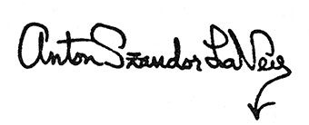

| Page 1 |
| Page 2 |
Called “The Black Pope” by many of his followers, Anton LaVey began the road to High
Priesthood of the Church of Satan when he was only 16 years old and an organ player in a carnival:
“On Saturday night I would see men lusting after half-naked girls dancing at the carnival, and
on Sunday morning when I was playing the organ for tent-show evangelists at the other end of the
carnival lot, I would see these same men sitting in the pews with their wives and children, asking
God to forgive them and purge them of carnal desires. And the next Saturday night they’d be back
at the carnival or some other place of indulgence.
“I knew then that the Christian Church thrives on hypocrisy, and that man’s carnal nature will
out!”
From that time early in his life his path was clear. Finally, on the last night of April, 1966–
Walpurgisnacht, the most important festival of the believers in witchcraft–LaVey shaved his head
in the tradition of ancient executioners and announced the formation of The Church Of Satan. He
had seen the need for a church that would recapture man’s body and his carnal desires as objects of
celebration. “Since worship of fleshly things produces pleasure,” he said, “there would then be a
temple of glorious indulgence. . .”
| Page 3 |
Anton Szandor LaVey
The Satanic Bible
| Page 4 |
For Diane
| Page 5 |
To:
Bernadino Logara, who knew the value of money
And to: Howard Hughes, James Moody, Marcello
Karl Haushofer, a teacher without a classroom
Rasputin, who knew the magic of a child
Sir Basil Zaharoff, a gentleman
Cagliostro, a rogue
Barnabas Saul, the link with Mount Lalesh
Ragnar Redbeard, whose might is right
William Mortensen, who looked . . . and saw
Hans Brick, who knows the law
Max Reinhardt, a builder of dreams
Orrin Klapp, the walking man
Fritz Lang, who made moving blueprints
Friedrich Nietzsche, a realist
William Claude Dukinfield, who saved me a journey to Tibet
Phineas Taylor Barnum, another great guru
Hans Pöelzig, who knew all the angles
Reginald Marsh, a great artist
Wilhelm Reich, who knew more than cabinet-making
Mark Twain, a very brave man
Truzzi, Adrian-Claude Frazier, Marilyn
Monroe, Wesley Mather, William Lindsay Gresham, Hugo Zacchini, Jayne Mansfield,
Frederick Goerner, C.Huntley, Nathaniel West, Horatio Alger, Robert Ervin Howard,
George Orwell, Howard Phillips Lovecraft, Tuesday Weld, H.G. Wells, Sister Marie
Koven, Harry Houdini, Togare, and the Nine Unknown Men.
| Page 6 |
INTRODUCTION I (1969-1972) by Burton H. Wolfe
INTRODUCTION II (1972-1976) by Michael A. Aquino
INTRODUCTION III (1976-2005) by Burton H. Wolfe
INTRODUCTION IV (2005-) by Peter H. Gilmore
PREFACE
PROLOGUE
THE NINE SATANIC STATEMENTS
(FIRE)
–BOOK OF SATAN–
The Infernal Diatribe
(AIR)
–BOOK OF LUCIFER–
The Enlightenment
I Wanted!: God - Dead or Alive
II The God You SAVE May Be Yourself
III Some Evidence of a New Satanic Age
IV Hell, the Devil, and How to Sell Your Soul
V Love and Hate
VI Satanic Sex
VII Not all Vampires Suck Blood
VIII Indulgence... NOT Compulsion
IX On the Choice of a Human Sacrifice
X Life After Death Through Fulfillment of the Ego
XI Religious Holidays
XII The Black Mass
| Page 7 |
(EARTH)
–BOOK OF BELIAL–
The Mastery of the Earth
I Theory and Practice of Satanic Magic: (Definition and Purpose of Lesser and
Greater Magic)
II The Three Types of Satanic Ritual
III The Ritual, or “Intellectual Decompression,” Chamber
IV The Ingredients Used in the Performance of Satanic Magic:
A. Desire
B. Timing
C. Imagery
D. Direction
E. The Balance Factor
V The Satanic Ritual:
A. Some Notes Which are to be Observed Before Beginning Ritual
B. The Thirteen Steps
C. Devices Used in Satanic Ritual
(WATER)
–BOOK OF LEVIATHAN–
The Raging Sea
I Invocation to Satan
II The Infernal Names
III Invocation Employed Towards the Conjuration of Lust
IV Invocation Employed Towards the Conjuration of Destruction
V Invocation Employed Towards the Conjuration of Compassion
VI The Enochian Keys and The Enochian Language (The nineteen Keys will be
listed here in chronological order)
Underground Edition Extras
| Page 8 |
The Satanic Bible
| Page 9 |
INTRODUCTION by Burton H. Wolfe
This is the original introduction, used in the 1969 first edition through 1972
INTRODUCTION
by Burton H. Wolfe*
In the summer of 1966, a few newspapers in the San Francisco Bay Area began to take notice of
a body of Devil-worshippers headed by a former circus and carnival lion handler and organist,
Anton Szandor LaVey. Their practice of the black arts was nothing new in the world. It had traces
in voodoo cults, a Hell-Fire Club that existed in 18th-Century England, a Satanic circle led by
Aleister Crowley in England a century later, and the Black Order of Germany in the 1920’s and
1930’s. But two aspects of the San Francisco group made them different from their predecessors:
they were blasphemously organized into a church, the First Church of Satan, instead of the usual
coven Satanism and witchcraft lore; and they carried on their black magic openly instead of
underground.
Wedding, baptism, and funeral ceremonies dedicated to the Devil were held in the Church of
Satan, with the press invited. Rituals in the tradition of the black arts were staged at midnight in the
old dark Victorian house of LaVey, an incongruous building among all the white and yellow stucco
houses in the San Francisco neighborhood a short way from the cliffs along the Golden Gate.
Occasionally the roar of a full-grown lion that lived in the black house with the LaVey family
(Anton, 39; wife Diane, 26; and daughters Karla, 17, and Zeena, 6) reverberated through the night,
spooking the neighbors, who were already upset about living so close to Hell.
Somehow it was all terribly provocative. Besides, the Devil has always made “good copy,” as
they say on the city desk. By 1967, the newspapers that were sending reporters to write about the
Church of Satan extended from San Francisco across the Pacific to Tokyo and across the Atlantic to
Paris. When a wedding or funeral was held, with a naked woman serving as altar to Satan, the
Associated Press and other wire Services were on hand to transmit the story and the scandalous
photographs to thousands of periodicals. Groups affiliated with the Church of Satan were organized
in other parts of America and in England, France, Germany, Africa, and Australia. In existence less
than a year, the Church of Satan had already proved one of its cardinal messages: the Devil is alive
highly popular with a great many people.
Anton LaVey, called “The Black Pope” by some of his followers, realized that two decades ago
when he was playing organ for carnival sideshows. “On Saturday night,” he recalls, “I would see
men lusting after half-naked girls dancing at the carnival, and on Sunday morning when I was
playing the organ for tent-show evangelists at the other end of the carnival lot, I would see these
same men sitting in the pews with their wives and children, asking God to forgive them and purge
them of carnal desires. And the next Saturday night they’d be back at the carnival or some other
place of indulgence. I knew then that the Christian church thrives on hypocrisy, and that man’s
carnal nature will out no matter how much it is purged or scourged by any white light religion.”
Although LaVey did not realize it then—he was only eighteen—he was on his way toward
formulating a religion that would serve as the antithesis to Christianity and its Judaic heritage. It
was an old religion, older than Christianity or Judaism. But it had never been formalized, arranged
into a body of thought and ritual. That was to be LaVey’s role in 20th-Century civilization.
All of LaVey’s background seemed to prepare him for that role. He is the descendant of
Georgian, Roumanian, and Alsatian grandparents, including a gypsy grandma who passed on to
him the legends of vampires and witches in her native Transylvania. As early as the age of five,
LaVey was delving into Weird-Tales magazines, and books such as Mary Shelley’s Frankenstein
and Bram Stoker’s Dracula. He felt different from other children, and yet he became a ringleader,
glorying in the organization of mock military orders.
_______________________
* Author of The Hippies and the forthcoming book, The Satanists. An article by Wolfe called “The Church That Worships Satan,”
the first complete study of the modern Satanic Church, appeared in the September 1968 issue of Knight magazine (Vol. 6, No. 8).
Publishers Service, Inc., the producer of Knight, has graciously permitted portions of the article to appear in this introduction.
| Page 10 |
In 1942, when he was twelve years old, LaVey’s fascination with toy soldiers branched off to
concern about the world war. He delved into military manuals and discovered that arsenals for the
equipment of armies and navies could be bought like groceries in a supermarket and used to
conquer masses of people. The idea took shape in his head that contrary to what the Bible said, the
earth would not be inherited by the meek, but by the strong and mighty.
After entering High School, LaVey became something of an offbeat child prodigy. He did most
of his studying outside the school, delving into music, metaphysics, and secrets of the occult. At
sixteen he became second oboist in the San Francisco Ballet Symphony Orchestra. Bored with high
school classes, he dropped out in his junior year, left home, and joined the Clyde Beatty Circus as a
cage boy, watering and feeding the lions and tigers. Animal trainer Beatty noticed that LaVey was
comfortable working with the big cats and made him an assistant trainer.
One day the circus calliope player became drunk. LaVey had taught himself to play the piano
by ear and thought he could handle the organ keyboard well enough to provide some music for the
performance that evening. It turned out that he played better and knew more music than the regular
player, so Beatty kept him on the calliope. He accompanied the “Human Cannonball,” Hugo
Zachinni, and the Wallendas’ high wire acts, among others.
When he was eighteen, LaVey left the circus and joined a carnival. He became assistant to a
magician, learned hypnosis, and studied more about the occult. This was a curious combination. On
the one side, he was working in an atmosphere of life at its rawest level—of earthy music; the smell
of wild animals; acts in which a second of missed timing meant accident; performances that
demanded youth and strength, and shed those who grew old like last year’s clothes; a world of
physical excitement that had magical attractions. On the other side, he was working with the magic
in the dark side of the human mind.
After he married, LaVey abandoned the wondrous world of the carnival to settle into a career
better suited for a home life. He enrolled as a criminology major at the City College of San
Francisco. That led to his first conformist job—photographer for the San Francisco Police
Department. As it worked out, that job had as much to do as any other with leading him toward
Satanism.
“I saw the bloodiest, grimiest side of human nature,” he recalls. “People shot by nuts, knifed by
friends, little kids splattered in the gutter by hit and run drivers. It was disgusting and depressing. I
asked myself: ‘Where is God?’ I came to detest the sanctimonious attitude of people toward
violence, always saying it’s God’s will.”
He quit in disgust after three years and went back to playing the organ, this time in nightclubs,
to earn a living while he continued his studies into his life’s fascination: the black arts. Once a week
he held classes in ritual magic at his home. They attracted many who were, or have since become
well known in the arts and sciences and business world. Eventually a “Magic Circle” evolved from
this group.
The major purpose of the Circle was to meet for the performance of black rituals that LaVey
had discovered. He had accumulated a library of works that described the Black Mass and other
pagan ceremonies conducted by groups such as the Knights Templar in 14th-Century France and
the Golden Dawn in 19th-Century England. The original intent of these black orders was to
blaspheme, mock the Christian church, and address themselves to the Devil as an anthropomorphic
deity that represented the reverse of God. In LaVey’s view, the Devil was much more than that.
Satan represented a dark, hidden force in nature that was responsible for the workings of earthly
affairs for which science and religion had no explanation and no control.
“At first I detected this force in small ways,” LaVey explains. “It might be the discovery of an
individual whose powers of wishing were so great that he could win horse races. In my case, I
found I could conjure up parking places at the last minute in front of theaters, when none should
have been there. I also discovered an ability through magic to bring reversals to enemies and gain
advantage for myself. I realized I had stumbled onto something, and I would have gone on doing it
on my own without any Magic Circle. But I also realized that for some things private magic was
weaker than mass ritual magic.”
Hence, on the last night of April 1966—Walpurgisnacht, the most important festival in the lore
of magic and witchcraft—LaVey shaved his head in the tradition of ancient strongmen and
| Page 11 |
announced the formation of the Church of Satan. For proper identification as its minister, he put on
the clerical collar. Up to that collar, he almost looked holy. But the Genghis Khan shaved head, his
Mephistophelian beard, and his narrow eyes gave him the necessary demonic look for his
priesthood of the Devil’s church.
“For one thing,” LaVey explains, “calling it a church enabled me to follow the magic formula
of nine parts outrage to one part social respectability that is needed for success. But the main
purpose was to gather a group of like-minded individuals together for the use of their combined
energies in calling up the dark force in nature that is called Satan.”
As LaVey correctly perceived, all other churches are based on worship of the spirit and denial
of the flesh. He saw the need for a church that would recapture man’s body and carnal desires as
objects of celebration. “And,” he adds, “since worship of fleshly things produces pleasure, there
would then be a temple of glorious indulgence that would be fun for people. All the other churches
are places of abstinence with services that people want to have over as soon as possible so they can
get out and start enjoying life again.”
In the Church of Satan, LaVey initiated clever psychodramas that would enable a group of
flesh-worshippers to overcome the repressions and inhibitions fostered by the Judaeo-Christian
tradition. He knew that the old concept of a Black Mass to satirize Christian services was
outmoded. There was a revolution in the Christian church itself against orthodox rites and
traditions. It was popular to declare that “God is dead.” So, the rites that he worked out, while still
maintaining the trappings of the ancient Black Mass, were changed from a negative mockery to
positive forms of celebrations: Satanic weddings, funerals devoid of sanctimonious platitudes, lust
rituals to help individuals attain their sex desires, destruction rituals to enable members of the
Satanic Church to triumph over enemies and win their goals in life.
There is no altruism or love-thy-neighbor concept in the Satanic religion, except in the sense of
helping other adherents of the Black Path to gain their desires by group energy. Satanism is a
blatantly selfish, brutal religion. It is based on the belief that man is inherently a selfish, violent
creature, that life is a Darwinian struggle for survival of the fittest, that the earth will be ruled by
those who fight to win the ceaseless competition that exists in all jungles—including that of urban
societies. On that score, the Church of Satan may be justly criticized, although even its critics will
have to admit that its philosophy is based on logic and real conditions that exist in the world.
On the other hand, the great contribution to civilized thought made by the Church of Satan is its
celebration of the complete human being instead of the spirit alone. The signs are everywhere that
humanity is striving to burst the restrictive bonds of religion. It was predicted in the Bible, for that
matter, in symbolic passages that dealt with Satan chained for a thousand years, after which he
would break free and foment deviltry on the earth. Now it is happening. Sex is exploding in movies
and literature, on the streets, and in the home. People are dancing topless and bottomless. Youths
are throwing off restrictions that deny pleasure in mind and body. There is a ceaseless quest for
entertainment, gourmet foods and wines, adventure, enjoyment of the here and now. Man is no
longer willing to wait for any afterlife that promises to reward the clean, pure—translate: ascetic,
drab—spirit. There is a mood of neo-paganism and hedonism, and from it have emerged a wide
variety of intelligent individuals—doctors, lawyers, engineers, teachers, writers, actors,
stockbrokers, clerks, printers, nurses (to cite just a few categories of Satanic Church members)—
who are interested in carrying the liberation of the flesh all the way to a formal religion.
In the Satanic Bible, Anton LaVey explains the philosophy of Satanism better than any of his
ancestors in the Kingdom of Darkness, and describes the various rituals and trappings that have
been devised to create a true church of flesh-worshippers. It is clear, from the interest in Satanism
that erupted in 1968 along with the fascination directed toward Ira Levin’s book Rosemary’s Baby,
that there are many people who would like to know how to start Satanic cults and ritualize black
magic. This book shows them how to go about it and fills that need. It is also clear that there is a
place for the formulation of teachings that constitute the antithesis to the repressive, inhibiting, anti-
material dogma of Christianity and other antiquated religions. The Satanic Bible also fills that need.
Perhaps the most important social value of this book is its challenge to other religions: Deal
with carnal desire and the flesh in a logical, rational manner or lose the struggle not only for men’s
bodies, but also their souls.
| Page 12 |
INTRODUCTION by Michael A. Aquino
This introduction appeared in the hardcover Satanic Bible from its first release in 1972
throughout its existence, and in the Avon paperback edition from 1972 to 1976
Each successive era of man’s cultural and ethical development has upraised its literary
manifesto - an argument challenging existing norms and proposing a novel approach to the
enduring issues of civilization. It has not infrequently been the case that the realities of political
nationalism have been blended with the idealisms of extranational emphasis to produce what we
now cautiously term existentialism. Pertinent works might include the Republic of Plato, the
Politics of Aristotle, Machiavelli’s Prince, and the writings of Nietzsche, Hobbes, Locke, Marx,
and Sartre.
This is the book of our era.
The dawn of the Satanic Age was celebrated on April 30, 1966 - the Year One. On that date
Anton Szandor LaVey consecrated the Church of Satan in the city of San Francisco and assumed
office as its first High Priest. What had begun several years earlier as an intellectual forum
dedicated to the investigation and application of the Black Arts has since expanded into an
international philosophical movement of the first magnitude. Satanism, once the isolate province of
furtive outcasts and radical eccentrics, has now become a serious alternative to the doctrines of
theism and materialism. In its championship of indulgence instead of abstinence, the Church of
Satan rejects the notion that man’s progress is contingent upon his acceptance of a self-imposed
morality. Sound judgment derives from the comparison and resolution of opposites, Satanists
maintain, and one cannot presume to justice by honoring a single standard of behavior.
An empirical approach to morality is not a recent innovation; such theorists as Pythagoras,
Hegel, Spencer, and Compte advanced the original propositions for man’s intellectual
independence from the natural order. And, though this concept has invariably provoked adverse
reaction from society-oriented institutions, it is not an insubstantial viewpoint. One need only
consider the spasmodic cataclysms of history to see how inadequately Homo sapiens cooperates
with his fellows.
By itself, however, all theory is inconsequential. Until now the only advocates of a subjective
morality were professorial abstractionists and -occasionally -the scattered and disorganized
devotees of the traditional “White” witchcraft. Indeed the latter have enjoyed some notoriety of
late, as their supposed proclamation of a liberal morality tempered by social correctness appeals to
the bored but timid dilettante. Such aficionados of the occult profess a righteous horror of Black
Magic or Satanism, which they denounce as a maleficent, degenerate creature of moral and carnal
abuse.
The Satanist, on the other hand, regards traditional witchcraft as merely a neurotic reaction
against the established religions of the parent culture. The worship of any deity or deities - under
any guise whatsoever - is repulsive to the Black Magician, who considers all protestations of faith
or trust in a supernatural protectorate to be humiliating demonstrations of cowardice and emotional
insecurity. Satanism has been frequently misrepresented as “devil worship”, when in fact it
constitutes a clear rejection of all forms of worship as a desirable component of the personality. It is
not so much an anti-religion - a simple rebuttal of any one belief - as it is an un-religion, an
uncompromising dismissal of all insubstantial mysticism. As such it represents a far more serious
threat to organized theologies than do the archaic customs of the old dæmonologies.
Ritual and fantasy play a very real part in the activities of the Satanic Church, on the
assumption that the experience and control of mental and metaphysical irrationality are necessary
for the strengthening of the psyche. Thus a distinct effort is made to avoid what was perhaps the
Achilles’ heel of the Gurdjieff-Ouspensky school of subjective psychological evolution; earlier
disciples of self-determined transcendentalism postulated that all non-materialistic sensations were
a danger to the coherence of the student. Crucial to the concept of Satanic ritual is an appreciation
of its illustrative and inspirational qualities without necessarily regarding it as inflexible reality.
Satanism is more accurately identified as a disposition than as a religion, as it is actively
concerned with all the facets of human existence, not with only the so-called spiritual aspects. Yet
| Page 13 |
those who proclaim it to be a danger to justice and cooperative order have missed the point entirely.
Satanism advocates unrestricted freedom, but only to the extent that one’s preferences do not
impinge upon another’s. It should also be noted that Satanism is a philosophy of the individual, not
of the mass. There are no collective policy statements save the famous Crowley admonition: “Self-
deceit is the gravest of all ‘sins’.”
While the majority of the populace may instinctively incline to a de facto Satanism, the Church
cautions that its propositions are not for the irresponsible. There are no Satanic missionaries, and to
affiliate one must meet exacting standards. Inexperience is not dishonored, but pretentiousness,
hypocrisy, and pomposity are treated with the scorn that they deserve. Satanism is no less an art
than it is a science, and there is “no standard of measurement deified”.
Dr. LaVey is uniquely prepared to author the new Diabolism. An American of Georgian,
Alsatian, and Romanian Gypsy descent, he was quick to display the characteristic restlessness of
his nomadic ancestors and an unusual empathy for their earthy, arcane lore. An early preoccupation
with the military sciences led him to read the various logistical publications of the World War II
era, only to discover that the proud visions of martial glory entertained in the first world war had
given way to a detached, mercenary realism in the second. His experiences as a student did nothing
to dispel this first taste of human cynicism, and LaVey’s growing impatience with the sterile
regimentation of conventional education drove him to seek the strange, surrealistic enchantments of
the circus. He assisted Clyde Beatty as a wild-animal trainer, and he soon developed a strong
affinity for the cats which was to mark his personality in a most curious manner. All animate
creatures are basically bestial, he reasoned, and even the most refined social orders achieve at best
only a flimsy suppression of this innate savagery. From the circus he proceeded to a carnival, where
the glitter of the performing arts was tinged with the ever-present struggle for daily subsistence.
Here LaVey worked in a pathetic but quietly dignified world of misfits, sideshow freaks, and
human oddities; and here he was to learn the craft of the stage magician, whose success depends
upon the contrived distraction of the audience’s attention. With a certain grimness he noted the
fascination with which the “normal” man regards his deformed comrades - a gloating satisfaction
over the visiting of misfortune upon another instead of oneself. Becoming increasingly interested in
this cruel, lycanthropic attribute of human nature, he studied criminology in college and eventually
worked with the San Francisco Police Department as a photographer.
As a circus professional he had seen carnal man at his most artistic; now he was to view him at
his most vicious. Three years of the gore, brutality, and abject misery that permeate the criminal
subculture left him sickened, disillusioned, and angered with the rampant hypocrisy of polite
society. He turned to the pipe organ as a means of living and devoted the greater part of his efforts
to what was to become his life’s work - Black Magic.
LaVey had long since rejected the stereotypical tracts on ceremonial sorcery as the hysterical
products of medieval imaginations. The “Old Craft” with its superstitions, affected mannerisms,
and infantile parlor games was not for him; what he sought was a metaphysical psychology that
would approach the intellectual man only after giving due consideration to his brutal, animalistic
origins. And so he came at last to the Goat of Mendes.
Satan is easily the most enigmatic figure in classical literature. Possessed of every conceivable
wealth, and the most powerful of the Archangels, he spurned his exalted allegiance to proclaim his
independence from all that his Heavenly patron personified. Although condemned to the most
hideous of domains, a Hell totally shunned by the divinity, he embraced such privations as the
burden of his intellectual prerogative. In his Infernal Empire one might indulge even the most
extraordinary tastes with impunity, yet amidst such wanton licentiousness the Devil maintained a
peculiar nobility. It was this elusive quality which Anton LaVey determined to identify.
After long years of research and experiment, he pronounced the guiding principle of Satanism:
that the ultimate consequence of man lies not in unity but in duality. It is only synthesis that decides
values; adherence to a single order is arbitrary and therefore insignificant.
LaVey’s disturbing theories and bizarre operations of ceremonial Black Magic eventually
attracted a following of similarly minded individuals. From this first small circle the Church of
Satan was to emerge, attuned to its founder’s contention that its messages would be presented most
effectively through “nine parts social respectability to one part of the most blatant outrage”.
| Page 14 |
The social impact and spectacular growth of the Church were to become something of a legend
in themselves, but it was an essential part of LaVey’s convictions that the formal institution’s role
was principally that of a catalyst. Contemporary civilization has proved too interdependent to
permit the luxury of monastic isolationism. Satanism must accordingly assume a stance
comprehensible to the average intellect. It was with such intent that the Satanic Bible was
conceived.
The Satanic Bible is a most insidious document. One is strongly tempted to compare it with that
obscure, malefic mythology The King in Yellow, a psychopolitical work that supposedly drove its
readers to madness and damnation. As candid and conversational as the Satanic Bible might seem
at first glance, it is not a volume to be gently dismissed. It is very much the product of our time, not
only because such a book -together with its author -would more than likely have been destroyed in
an earlier era, but because its creation was an evolutionary inevitability.
You, the reader, are about to be impaled upon the sharp horns of a Satanic dilemma. If you
accept the propositions of this book, you condemn your most cherished sanctuaries to annihilation.
In return you will awaken - but only to the most fiery of Hells. Should you reject the argument, you
resign yourself to a cancerous disintegration of your previously subconscious sense of identity.
Small wonder that the Archfiend’s legacy has won him so many bitter enemies!
Whatever your decision, it can be avoided no longer. The Satanic Bible finally articulates what
man has instinctively dreaded to proclaim: that he himself is potentially divine.
| Page 15 |
INTRODUCTION by Burton H. Wolfe
This second introduction by Wolfe was used from 1976 through 2005
On a winter’s evening in 1967, I drove crosstown in San Francisco to hear Anton Szandor
LaVey lecture at an open meeting of the Sexual Freedom League. I was attracted by newspaper
articles describing him as “the Black Pope” of a Satanic church in which baptism, wedding, and
funeral ceremonies were dedicated to the Devil. I was a free-lance magazine writer, and I felt there
might be a story in LaVey and his contemporary pagans; for the Devil has always made “good
copy,” as they say on the city desk.
It was not the practice of the black arts itself that I considered to be the story, because that is
nothing new in the world. There were Devil-worshipping sects and voodoo cults before there were
Christians. In eighteenth-century England a Hell-Fire Club, with connections to the American
colonies through Benjamin Franklin, gained some brief notoriety. During the early part of the
twentieth century, the press publicized Aleister Crowley as the “wickedest man in the world.” And
there were hints in the 1920s and ‘30s of a “black order” in Germany.
To this seemingly old story LaVey and his organization of contemporary Faustians offered two
strikingly new chapters. First, they blasphemously represented themselves as a “church,” a term
previously confined to the branches of Christianity, instead of the traditional coven of Satanism and
witchcraft lore. Second, they practiced their black magic openly instead of underground.
Rather than arrange a preliminary interview with LaVey for discussion of his heretical
innovations, my usual first step in research, I decided to watch and listen to him as an unidentified
member of an audience. He was described in some newspapers as a former circus and carnival lion
tamer and trickster now representing himself as the Devil’s representative on earth, and I wanted to
determine first whether he was a true Satanist, a prankster, or a quack. I had already met people in
the limelight of the occult business; in fact, Jeane Dixon was my landlady and I had a chance to
write about her before Ruth Montgomery did. But I had considered all the occultists phonies,
hypocrites, or quacks, and I would never spend five minutes writing about their various forms of
hocus-pocus.
All the occultists I had met or heard of were white-lighters: alleged seers, prophesiers, and
witches wrapping their supposedly mystic powers around God-based, spiritual communication.
LaVey, seeming to laugh at them if not spit on them in contempt, emerged from between the lines
of newspaper stories as a black magician basing his work on the dark side of nature and the carnal
side of humanity. There seemed to be nothing spiritual about his “church”.
As I listened to LaVey talk that first time, I realized at once there was nothing to connect him
with the occult business. He could not even be described as metaphysical. The brutally frank talk he
delivered was pragmatic, relativistic, and above all rational. It was unorthodox, to be sure: a blast at
established religious worship, repression of humanity’s carnal nature, phony pretense at piety in the
course of an existence based on dog-eat-dog material pursuits. It was also full of sardonic satire on
human folly. But most important of all, the talk was logical. It was not quack magic that LaVey
offered his audience. It was common sense philosophy based on the realities of life.
After I became convinced of LaVey’s sincerity, I had to convince him that I intended to do
some serious research instead of adding to the accumulation of hack articles dealing with the
Church of Satan as a new type of freak show. I boned up on Satanism, discussed its history and
rationale with LaVey, and attended some midnight rituals in the famous Victorian manse once used
as Church of Satan headquarters. Out of all that I produced a serious article, only to find that was
not what the publishers of “respectable” magazines wanted. They were interested in only the freak
show kind of article. Finally, it was a so-called “girlie” or “man’s” magazine, Knight of September
1968, that published the first definitive article on LaVey, the Church of Satan, and LaVey’s
synthesis of the old Devil legends and black magic lore into the modern philosophy and practice of
Satanism that all followers and imitators now use as their model, their guide, and even their Bible.
My magazine article was the beginning, not the end (as it has been with my other writing
subjects), of a long and intimate association. Out of it came my biography of LaVey, The Devil’s
Avenger, published by Pyramid in 1974. After the book was published, I became a card-carrying
member and, subsequently, a priest of the Church of Satan, a title I now proudly share with many
| Page 16 |
celebrated persons. The postmidnight philosophical discussions I began with LaVey in 1967
continue today, a decade later, supplemented sometimes these days by a nifty witch or some of our
own music, him on organ and me on drums, in a bizarre cabaret populated by superrealistic
humanoids of LaVey’s creation.
All of LaVey’s background seemed to prepare him for his role. He is the descendant of
Georgian, Roumanian, and Alsatian grandparents, including a gypsy grandmother who passed on to
him the legends of vampires and witches in her native Transylvania. As early as the age of five,
LaVey was reading Weird-Tales magazines and books such as Mary Shelly’s Frankenstein and
Bram Stoker’s Dracula. Though he was different from other children, they appointed him as leader
in marches and maneuvers in mock military orders.
In 1942, when LaVey was twelve, his fascination with toy soldiers led to concern over World
War II. He delved into military manuals and discovered arsenals for the equipment of armies and
navies could be bought like groceries in a supermarket and used to conquer nations. The idea took
shape in his head that contrary to what the Christian Bible said, the earth would not be inherited by
the meek, but by the mighty.
In high school LaVey became something of an offbeat child prodigy. Reserving his most
serious studies for outside the school, he delved into music, metaphysics, and secrets of the occult.
At fifteen, he became second oboist in the San Francisco Ballet Symphony Orchestra. Bored with
high school classes, LaVey dropped out in his Junior year, left home, and joined the Clyde Beatty
Circus as a cage boy, watering and feeding the lions and tigers. Animal trainer Beatty noticed that
LaVey was comfortable working with the big cats and made him an assistant trainer.
Possessed since childhood by a passion for the arts, for culture, LaVey was not content merely
with the excitement of training jungle beasts and working with them in the ring as a fill-in for
Beatty. By age ten he had taught himself to play the piano by ear. This came in handy when the
circus calliope player became drunk before a performance and was unable to go on; LaVey
volunteered to replace him, confident he could handle the unfamiliar organ keyboard well enough
to provide the necessary background music. It turned out he knew more music and played better
than the regular calliopist, so Beatty cashiered the drunk and installed LaVey at the instrument. He
accompanied the “Human Cannonball”, Hugo Zachinni, and the Wallendas’ high-wire acts, among
others.
When LaVey was eighteen he left the circus and joined a carnival. There he became assistant to
a magician, learned hypnosis, and studied more about the occult. It was a curious combination. On
the one side he was working in an atmosphere of life at its rawest level - of earthy music; the smell
of wild animals and sawdust; acts in which a second of missed timing meant accident or death;
performances that demanded youth and strength, and shed those who grew old like last year’s
clothes; a world of physical excitement that had magical attractions. On the other side, he was
working with magic in the dark side of the human brain. Perhaps the strange combination
influenced the way he began to view humanity as he played organ for carnival sideshows.
“On Saturday night,” LaVey recalled in one of our long talks, “I would see men lusting after
half-naked girls dancing at the carnival, and on Sunday morning when I was playing organ for tent-
show evangelists at the other end of the carnival lot, I would see these same men sitting in the pews
with their wives and children, asking God to forgive them and purge them of carnal desires. And
the next Saturday night they’d be back at the carnival or some other place of indulgence. I knew
then that the Christian church thrives on hypocrisy, and that man’s carnal nature will out no matter
how much it is purged or scourged by any white-light religion.”
Though LaVey did not realize it then, he was on his way toward formulating a religion that
would serve as the antithesis of Christianity and its Judaic heritage. It was an old religion, older
than Christianity or Judaism. But it had never been formalized, arranged into a body of thought and
ritual. That was to become LaVey’s role in twentieth-century civilization.
After LaVey became a married man himself in 1951, at age twenty-one, he abandoned the
wondrous world of the carnival to settle into a career better suited for homemaking. He had been
enrolled as a criminology major at the City College of San Francisco. That led to his first
conformist job, photographer for the San Francisco Police Department. As it worked out, that job
had as much to do as any other with his development of Satanism as a way of life.
“I saw the bloodiest, grimiest side of human nature,” LaVey recounted in a session dealing with
| Page 17 |
his past life. “People shot by nuts, knifed by their friends; little kids splattered in the gutter by hit-
and-run drivers. It was disgusting and depressing. I asked myself: ‘Where is God?’ I came to detest
the sanctimonious attitude of people toward violence, always saying ‘it’s God’s will’.”
So he quit in disgust after three years of being a crime photographer and returned to playing
organ, this time in nightclubs and theaters to earn a living while he continued his studies into his
life’s passion: the black arts. Once a week he held classes on arcane topics: hauntings, E.S.P.,
dreams, vampires, werewolves, divination, ceremonial magic, etc. They attracted many people who
were, or have since become, well known in the arts and sciences, and the business world.
Eventually a “Magic Circle” evolved from this group.
The major purpose of the Circle was to meet for the performance of magical rituals LaVey had
discovered or devised. He had accumulated a library of works that described the Black Mass and
other infamous ceremonies conducted by groups such as the Knights Templar in fourteenth-century
France, the Hell-Fire club and the Golden Dawn in eighteenth- and nineteenth-century England.
The intent of some of these secret orders was to blaspheme, lampoon the Christian church, and
address themselves to the Devil as an anthropomorphic deity that represented the reverse of God. In
LaVey’s view, the Devil was not that, but rather a dark, hidden force in nature responsible for the
workings of earthly affairs, a force for which neither science nor religion had any explanation.
LaVey’s Satan is “the spirit of progress, the inspirer of all great movements that contribute to the
development of civilization and the advancement of mankind. He is the spirit of revolt that leads to
freedom, the embodiment of all heresies that liberate.”
On the last night of April 1966–Walpurgisnacht, the most important festival in the lore of
magic and witchcraft–LaVey ritualistically shaved his head in accordance with magical tradition
and announced the formation of the Church of Satan. For proper identification as its minister, he
put on the clerical collar. Up to that collar he looked almost holy. But his Genghis Khan-like
shaven head, his Mephistophelian beard, and his narrow eyes gave him the necessary demonic look
for his priesthood of the Devil’s church on earth.
“For one thing,” LaVey explained himself, “calling it a church enabled me to follow the magic
formula of one part outrage to nine parts social respectability that is needed for success. But the
main purpose was to gather a group of like-minded individuals together for the use of their
combined energies in calling up the dark force in nature that is called Satan.”
As LaVey pointed out, all other churches are based on worship of the spirit and denial of the
flesh and the intellect. He saw the need for a church that would recapture man’s mind and carnal
desires as objects of celebration. Rational self-interest would be encouraged and a healthy ego
championed.
He began to realize that the old concept of a Black Mass to satirize Christian services was
outmoded or, as he put it, “beating a dead horse”. In the Church of Satan, LaVey initiated some
exhilarating psychodramas, in lieu of Christianity’s self-debasing services, thereby exorcising
repressions and inhibitions fostered by white-light religions.
There was a revolution in the Christian church itself against orthodox rites and traditions. It had
become popular to declare that “God is dead”. So, the alternative rites that LaVey worked out,
while still maintaining some of the trappings of ancient ceremonies, were changed from a negative
mockery to positive forms of celebrations and purges: Satanic weddings consecrating the joys of
the flesh, funerals devoid of sanctimonious platitudes, lust rituals to help individuals attain their sex
desires, destruction rituals to enable members of the Satanic church to triumph over enemies.
On special occasions such as baptisms, weddings, and funerals in the name of the Devil, press
coverage, though unsolicited, was phenomenal. By 1967 the newspapers that were sending
reporters to write about the Church of Satan extended from San Francisco across the Pacific to
Tokyo and across the Atlantic to Paris. A photo of a nude woman, half covered by a leopard skin,
serving as an altar to Satan in a LaVey-conceived wedding ceremony, was transmitted by major
wire services to daily newspapers everywhere: and it showed up on the front page of such bulwarks
of the media as the Los Angeles Times. As the result of the publicity, grottos (LaVey’s counterpart
to covens) affiliated with the Church of Satan spread throughout the world, proving one of LaVey’s
cardinal messages: the Devil is alive and highly popular with a great many people.
Of course LaVey pointed out to anyone who would listen that the Devil to him and his
followers was not the stereotyped fellow cloaked in red garb, with horns, tail and pitchfork, but
| Page 18 |
rather the dark forces in nature that human beings are just beginning to fathom. How did LaVey
square that explanation with his own appearance at times in black cowl with horns? He replied:
“People need ritual, with symbols such as those you find in baseball games or church services or
wars, as vehicles for expending emotions they can’t release or even understand on their own.”
Nevertheless, LaVey himself soon tired of the games.
There were setbacks. First, some of LaVey’s neighbors began complaining about the full-grown
lion he was keeping as a house pet, and eventually the big cat was donated to the local zoo. Next,
one of LaVey’s most devoted witches, Jayne Mansfield, died under a curse he had placed on the
head of her suitor, lawyer Sam Brody, for a variety of reasons I have explained in The Devil’s
Avenger; LaVey had persistently warned her away from Brody and felt depressed over her death. It
was the second tragic death in the sixties of a Hollywood sex symbol with whom he had been
intimately involved; the other was Marilyn Monroe, LaVey’s paramour for a brief but crucial
period in 1948 when he had quit the carnival and was playing organ for strippers around the Los
Angeles area.
On top of all that, LaVey was tired of organizing entertainments and purges for his church
members. He had gotten in touch with the last living remnants of the prewar occult fraternities of
Europe, was busily acquiring their philosophies and secret rituals left over from the pre-Hitler era,
and needed time to study, write and work out new principles. He had long been experimenting with
and applying the principles of geometric spatial concepts in what he terms “The Law of the
Trapezoid”. (He scoffs at current faddists who are “barking up the wrong pyramids”.) He was also
becoming widely sought as speaker, guest on radio and television programs, and production and/or
technical adviser to scores of television producers and moviemakers turning out Satanic chillers.
Sometimes he was also an actor. As sociologist Clinton R. Sanders points out: “...no occultist has
had as direct an impact upon formulaic cinematic presentations of Satanism as has Anton Szandor
LaVey. Ritual and esoteric symbolism are central elements in LaVey’s church and the films in
which he has had a hand contain detailed portrayals of Satanic rites and are filled with traditional
occult symbols. The emphasis upon ritual in the Church of Satan is ‘intended to focus the emotional
powers within each individual’. Similarly, the ornate ritualism that is central to LaVey’s films may
reasonably be seen as a mechanism to involve and focus the emotional experience of the cinema
audience.”
At last LaVey decided to transfer rituals and other organized activities to Church of Satan
grottos around the world, and devote himself to writing, lecturing, teaching - and to his family: wife
Diane, the blonde beauty who serves as High Priestess of the Church; raven-haired daughter Karla,
now in her early twenties, a criminology major like her father before, spending much of her time
lecturing on Satanism at universities in many parts of the country; and finally Zeena, remembered
by people who saw the famous photo of the Satanic Church baptism as a tiny tot, but now a
gorgeously developed teenager attracting a growing pack of wolves, human male variety.
Out of LaVey’s relatively quiescent period came his widely read, pioneering books: First, The
Satanic Bible, which at this writing is in its twelfth edition (and this is my second, revised
introduction, after having written the original introduction to the first edition). Second, The Satanic
Rituals, which covers more of the somber, complex material LaVey unearthed from his increasing
sources. And third, The Compleat Witch, a bestseller in Italy, but, sadly, allowed by its American
publisher to go out of print with its potential unfulfilled.
LaVey’s spreading out from organized church activities to writing books for worldwide
distribution has, of course, greatly expanded Church of Satan membership. Satanism’s growing
popularity has naturally been accompanied by scare stories from religious groups complaining that
The Satanic Bible now outsells the Christian Bible on college campuses and is a leading causative
factor in youngsters’ turning away from God. And certainly one suspects that Pope Paul had LaVey
in mind when he issued his worldwide proclamation two years ago that the Devil is “alive” and “a
person”, a living, fire-breathing character spreading evil over the earth. LaVey, maintaining that
“evil” is “live” spelled backward and should be indulged in and enjoyed, answers the pope and the
religious scare groups this way:
“People, organizations, nations are making millions of dollars off us. What would they do
without us? Without the Church of Satan, they wouldn’t have anybody to rage at and to take the
blame for all the rotten things happening in the world. If they really feel this way, they shouldn’t
| Page 19 |
have blown us out of proportion. What you really have to believe instead is that they are the
charlatans, and they’re really glad to have us around so they can exploit us. We’re an extremely
valuable commodity. We’ve helped business, lifted up the economy, and some of the millions of
dollars we have generated have in turn flowed into the Christian church. We have proved many
times over the Ninth Satanic Statement that says the church - and countless individuals - cannot
exist without the Devil.”
For that the Christian church must pay a price. The events that LaVey predicted in the first
edition of The Satanic Bible have come to pass. Repressed people have burst their bonds. Sex has
exploded, the collective libido has been released, in movies and literature, on the streets, and in the
home. People are dancing topless and bottomless. Nuns have thrown off their traditional habits,
exposed their legs, and danced the “Missa Solemnis Rock” that LaVey thought he was conjuring up
as a prank. There is a ceaseless universal quest for entertainment, gourmet foods and wines,
adventure, enjoyment of the here and now. Humanity is no longer willing to wait for any afterlife
that promises to reward the clean, pure - translate: ascetic, drab - spirit. There is a mood of
neopaganism and hedonism, and from it there have emerged a wide variety of brilliant individuals -
doctors, lawyers, engineers, teachers, writers, stockbrokers, real estate developers, actors and
actresses, mass communications media people (to cite a few categories of Satanists) - who are
interested in formalizing and perpetuating this all-pervading religion and way of life.
It is not an easy religion to adopt in a society ruled so long by Puritan ethics. There is no false
altruism or mandatory love-thy-neighbor concept in this religion. Satanism is a blatantly selfish,
brutal philosophy. It is based on the belief that human beings are inherently selfish, violent
creatures, that life is a Darwinian struggle for survival of the fittest, that only the strong survive and
the earth will be ruled by those who fight to win the ceaseless competition that exists in all jungles -
including those of urbanized society. Abhor this brutal outlook if you will; it is based, as it has been
for centuries, on real conditions that exist in the world we inhabit rather than the mystical lands of
milk and honey depicted in the Christian Bible.
In The Satanic Bible, Anton LaVey has explained the philosophy of Satanism more profoundly
than any of his ancestors in the Kingdom of Darkness, while describing in detail the innovative
rituals and trappings he has devised to create a church of realists. It has been clear from the first
edition that many people want to read this book to learn how to start Satanic groups and ritualize
black magic. The Satanic Bible and The Satanic Rituals are the only books that have demonstrated,
in a way that is authentic and true to relevant traditions, how all of that can be done. There have
been many imitators, never attributing their source, and with good reason; because once the
shabbiness and shallowness of the imitators have been compared to LaVey’s pioneering work, there
can no longer be any market for the ripoff artists.
The evidence is clear to any who are willing to view the record: Anton LaVey brought Satan
out of the closet and the Church of Satan is the fountainhead of contemporary Satanism. This book
summarizes the message both convey, and remains both challenge and inspiration, as timely today
as when it was written.
SAN FRANCISCO
December 25, 1976 (XI Anno Satanas)
| Page 20 |
INTRODUCTION by Peter H. Gilmore
This introduction was used starting in 2005
OPENING THE ADAMANTINE GATES
An Introduction to The Satanic Bible
by Magus Peter H. Gilmore
This book has the potential to change your life – it did mine. It is a diabolical work, written with
elegance, earthiness, and might, serving quite magically as a mirror. If you look within these pages
and see yourself; if you find its principles to be those you’ve lived by as long as you can remember;
if you feel the evocation of an overwhelming sense of homecoming, then you will have discovered
that you are a part of a scattered “meta-tribe,” and the proper name for what you are is “Satanist.”
I first encountered Anton Szandor LaVey through The Satanic Bible, at the age of thirteen when
I was an avowed atheist. Not being partial to literature promoting faith of any sort, I was pleasantly
surprised that this was no rant by someone claiming direct contact with Satan.
Instead, I found a common sense, rational, materialist philosophy, along with theatrical ritual
techniques meant as self-transformative psychodrama. Here was a tool perfectly suited to my nature
as a means for getting the most out of my life. I knew that “atheist” was no longer sufficient as a
designation for myself. This book lead me to meet and befriend LaVey, working with him to
administer the Church he created, and finally to succeed him as the second High Priest of the
Church of Satan.
It is one of Anton LaVey’s numerous talents that his written words are vivid, brimming with his
distinct personality. His well-wrought phrases give the sense of encountering the man himself, and
such an impression is not a delusion. When my wife, Peggy Nadramia, and I met The Doctor” (an
affectionate moniker used by those close him), we agreed that here was exactly the man we had
dared to expect from reading his books.
Unlike the founders of other religions who claimed ‘inspiration” delivered through some
supernatural entity, LaVey readily acknowledged that he used his own faculties to synthesize
Satanism. He based it on both his understanding of the human animal acquired from life experience
and the wisdom he’d gained from other advocates of materialism, pragmatism, and individualism.
His blasphemously named “Church of Satan” was consciously designed to be an adversary to
existing “spiritual’ belief systems. It was the first organization promulgating religious philosophy
championing Satan as the symbol of liberty and individualism. Concerning his role as founder he
said that, “If he didn’t do it himself, someone else, per haps less qualified, would have.” His
perceptive insights thus lead him to give a proper name to a human type that has always been part
of our species.
LaVey was born in Chicago in 1930, and his parents soon relocated to California, that
westernmost gathering place for the brightest and darkest manifestations of that “American
Dream.” It was a fertile environment for the sensitive child who would eventually mature into a
role the press would dub “The Black Pope.” From his Eastern European grandmother, young
LaVey learned of the superstitions that are still extant in that part of the world. These tales whetted
his appetite for the outré, leading him to become absorbed in classic dark literature such as Dracula
and Frankenstein. He also became an avid reader of the pulp magazines, which first published tales
now deemed classics of the horror and science fiction genres. He later befriended seminal Weird
Tales authors such as Clark Ashton Smith, Robert Barbour Johnson, and George Has. His fancy
was captured by fictional characters found in the works of Jack London and Somerset Maugham, in
comic strip characters like Ming the Merciless, as well as by historical figures of a diabolical cast
such as Cagliostro, Rasputin, and Basil Zaharoff. More interesting to him than the available occult
literature, which he dismissed as being little more than sanctimonious white magic, were books
applied obscure knowledge such as Dr. William Wesley Cook’s Practical Lessons in Hypnotism,
Jane’s Fighting Ships, and manuals for handwriting analysis.
His musical abilities were noticed early, and he was given free reign by his parents to try his
hand at various instruments. LaVey was mainly attracted to the keyboards because of their scope
| Page 21 |
and versatility. He found time to practice and could easily reproduce songs heard by ear without
recourse to fake books or sheet music. This talent would prove to be one of his main sources of
income for many years, particularly his calliope playing during his carnival days, and later his
many stints as an organist in bars, lounges, and nightclubs. These venues gave him the chance to
study how various melodic lines and chord progressions swayed the emotions of his audiences,
from the spectators at the carnival and spook shows to the individuals seeking solace for the
disappointments in their lives in distilled spirits and the smoke-filled taverns for which LaVey’s
playing provided a moody soundtrack.
His odd interests marked him as an outsider, and he did not alleviate this by feeling any
compulsion to be “one of the boys.” He despised gym class and team sports and often cut classes to
follow his own interests. Moving beyond the standard school texts, he absorbed volumes analyzing
human behavior on every level, from the impulses of the individual to the dynamics of the herd. He
watched films that would later be labeled film noir as well as German expressionist cinema such as
M, The Cabinet of Dr. Caligari, and the Dr. Mabuse movies. His taste for flashy apparel also
served to amplify his alienation from the mainstream.
He dropped out of high school to hang around with hoodlum types and gravitated towards
working in the circus and carnivals, first as a roustabout and cage boy and later as a musician. His
always-active curiosity was rewarded as he “learned the ropes” from the carnies. He worked an act
with the big cats–he had an affinity for these powerful predators-and later assisted with the
machinations of the spook shows. He became well-versed in the many rackets used to separate the
rubes from their money, along with the psychology that lead people to such pursuits. Under the
name “The Great Szandor” he played calliope and organ for the bawdy shows on Saturday nights,
as well as for tent revivalists on Sunday mornings, seeing many of the same men attending both and
noting this telling contradiction. All of these activities provided a firm, earthy background for his
evolving cynical worldview.
When the carnival season ended, LaVey would earn money by playing organ in Los Angeles
area burlesque houses, and he relates that it was during this period that he met and had a brief affair
with a then-unknown Marilyn Monroe, after accompanying her “chain-dragging” striptease at the
Mayan Burlesque Theater. Moving back to San Francisco, LaVey worked for a while as a
photographer for the police department, and, during the Korean War, enrolled in San Francisco City
College as a criminology major to avoid the draft. Both his studies and occupation revealed grim
insights into human nature and confirmed his rejection of spiritual doctrines. At this time he met
and married Carole Lansing, who bore him his first daughter Karla Maritza, in 1952. A few years
earlier LaVey had examined the writings of Aleister Crowley, so in 1951 he decided to meet some
of the Berkeley Thelemites. He was unimpressed, as they were more mystical and less “wicked”
than he supposed they should be for disciples of Crowley’s libertine creed.
During the 1950s, LaVey supplemented his income as an investigator of alleged supernatural
phenomena, handing “nut calls” referred to him by friends in the police department. These
experiences proved to him that many people were inclined to seek a bizarre, “otherworldly”
explanation for phenomena that had prosaic causes. His rational explanations often disappointed the
complainants, so LaVey invented exotic sources to make them feel better, giving him insight as to
how belief functions in people’s lives.
In 1956 he purchased a Victorian house on California Street in San Francisco’s Richmond
District. It was reputed to have been a speakeasy, and was tricked out with secret passages, possibly
to aid in clandestine carnal activities. He painted it black, thus creating a haunted intrusion on an
otherwise typical block, matching his own unique presence. It was only natural that it would later
become home to the Church of Satan. After his death, the building remained unoccupied, a
brooding “shunned house,” until it was demolished on October 17 of 2001 by the real estate
company that owned the property.
LaVey met and became entranced by Diane Hegarty in 1959; he then left Carole in 1960.
Hegarty and LaVey never married, but she bore him his second daughter, Zeena Galatea in 1964
and was his companion for many years. Hegarty and LaVey later separated; she sued him for
palimony and this was settled out of court.
Through his “ghost busting,” and his frequent public gigs as an organist, including playing the
Wurlitzer at the Lost Weekend cocktail lounge, LaVey became a local celebrity and his holiday
| Page 22 |
parties attracted many San Francisco notables. Guests included Carin de Plessin, called “the
Baroness” as she had grown up in the royal palace of Denmark, anthropologist Michael Harner,
Chester A. Arthur III (grandson to the U.S. President), Forrest J. Ackerman (later, the publisher of
Famous Monsters of Filmland and acknowledged expert on science fiction), author Fritz Leiber,
local eccentric Dr. Cecil E. Nixon (creator of the musical automaton Isis), and underground
filmmaker Kenneth Anger. From this crowd LaVey distilled what he called a “Magic Circle” of
associates who shared his interest in the bizarre, the hidden side of what moves the world. As his
expertise grew, LaVey began presenting Friday night lectures summarizing the fruits of his
research. In 1965, LaVey was featured on the “The Brother Buzz Show”, a humorous children’s
program hosted by marionettes. The focus was on LaVey’s “Addams Family” lifestyle—making a
living as a hypnotist, investigator of the paranormal, and organist, as well as on his highly unusual
pet Togare, a Nubian lion.
In the process of creating his lectures, LaVey noticed many common threads, which he then
began weaving into a tenebrous conceptual tapestry. When a member of his Magic Circle suggested
that he had the basis for a new religion LaVey agreed and decided to found the Church of Satan as
the best means for communicating his ideas. And so, in 1966 on the night of May Eve—the
traditional Witches’ Sabbath—LaVey declared the founding of the Church of Satan and
renumbered 1966 as the year One, Anno Satanas— the first year of the Age of Satan.
The attention of the press soon followed, particularly with the wedding of Radical journalist
John Raymond to New York socialite Judith Case on February 1st, 1967. Famed photographer Joe
Rosenthal was sent by the San Francisco Chronicle to capture an image that went onward to the
pages of the Los Angeles Times and other prominent newspapers. LaVey began the mass
dissemination of his Philosophy via the release of a record album, The Satanic Mass
(Murgenstrumm, 1968). The album featured a cover graphic named by LaVey as the “Sigil of
Baphomet”: the goat head in a pentagram, circled with the Hebrew word “Leviathan,” which has
since become the ubiquitous symbol of Satanism. Featured on the album was part of the rite of
baptism written for three-year-old Zeena (performed on May 23rd, 1967). In addition to the actual
recording of a Satanic ritual, side two of the LP had LaVey reading excerpts from the as-yet-
unpublished The Satanic Bible over music by Beethoven, Wagner, and Sousa. His Friday lectures
continued and he instituted a series of “Witches’ Workshops” to instruct women in the art of
attaining their will through glamour, feminine wiles, and the skillful discovery and exploitation of
men’s fetishes.
By the end of 1969, LaVey had taken monographs he had written to explain the philosophy and
ritual practices of the Church of Satan and expanded them. His influences included philosophers
such as Ayn Rand, Nietzsche, and Mencken, the base wisdom of the carnival folk, the observations
of P.T. Barnum, and finally the imagery of the archfiend found in Twain, Milton, Byron, and other
romantics. He prefaced these essays and rites with reworked excerpts from Ragnar Redbeard’s
Might is Right and concluded it with “Satanized” versions of John Dee’s Enochian Keys to create
The Satanic Bible. It has never gone out of print and remains the main source for the contemporary
Satanic movement.
The philosophy presented in it is an integrated whole, not a smorgasbord from which one can
pick and choose. It is meant only for a select few who are epicurean, pragmatic, worldly, atheistic,
fiercely individualistic, materialistic, rational, and darkly poetic. There may be fellow-travelers—
atheists, misanthropes, humanists, freethinkers—who see only a partial reflection of themselves in
this showstone. Satanism may thus attract these types in some ways, but ultimately it is not for
them. If it was only a philosophy, such individualists might be welcome; it is more. Satanism
moves into the realm of religion by having an aesthetic component, a system of symbolism,
metaphor, and ritual in which Satan is embraced not as some Devil to be worshipped, but as a
symbolic external projection of the highest potential of each individual Satanist. The identification
Satanists have with Satan is an intentional barrier against those who cannot resonate with this
sinister archetype. The Satanic Bible was followed in 1971 by The Compleat Witch (re-released in
1989 as The Satanic Witch), a manual that teaches “Lesser Magic”—the ways and means of reading
and manipulating people and their actions toward the fulfillment of one’s desired goals. The Satanic
Rituals (1972) was printed as a companion volume to The Satanic Bible and contains “Greater
Magic” rituals culled from a Satanic tradition identified by LaVey in various world cultures. Two
| Page 23 |
collections of essays, which range from the humorous and insightful to the gleefully sordid, The
Devil’s Notebook (1992) and Satan Speaks (1998), complete his written canon.
Since its founding, LaVey’s Church of Satan attracted many varied people who shared an
alienation from conventional religions, including celebrities Jayne Mansfield and Sammy Davis Jr.,
as well as rock stars King Diamond, Marilyn Manson, and Marc Almond who all became, at least
for a time, card-carrying members. He numbered among his associates Robert Fuest, director of the
Vincent Price “Dr. Phibes” films as well as The Devil’s Rain; Jacques Vallee, ufologist and
computer scientist, who was used as the basis for the character Lacombe, played by Francois
Truffaut, in Spielberg’s Close Encounters of the Third Kind; and Aime Michel known as a
spelunker and publisher of Morning of the Magicians.
LaVey’s influence spread through articles in the news media throughout the world, popular
magazines such as Look, McCalls, Argosy, Newsweek, Time, and later Seconds, The Nose, and
Rolling Stone, numerous men’s magazines, and via talk shows such as Joe Pyne, Phil Donahue, and
Johnny Carson. This publicity left a mark on novels like Rosemary’s Baby (completed by Ira Levin
during the early days of the Church’s high profile media blitz) and Leiber’s Our Lady of Darkness,
and films such as Rosemary’s Baby (1968), The Devil’s Rain (1975), The Car (1977), Dr. Dracula
(1980), and many of the “Devil Cult” films from the 1970s through today that picked up on
symbolism from LaVey’s writings. A feature length documentary, Satanis: The Devil’s Mass
(1969) covered the rituals and philosophy of the Church, while LaVey himself was profiled in Nick
Bougas’ 1993 video documentary Speak of the Devil.
The Doctor’s musicianship is preserved on several recordings, primarily Strange Music (1994)
and Satan Takes a Holiday (1995). These reflect his penchant for tunes from the 1930s through the
1950s, which range from humorous to doom-laden as well as devil-themed songs. LaVey renders
them on a series of self-programmed synthesizers, imitating various instrumental groups. They are
impressive, as these are not multi-track recordings, but are done in one take with the sounds of the
full instrumental ensemble created through the simultaneous use of numerous synthesizers played
by LaVey’s dexterous fingers as well as his feet on an organ-style foot pedal keyboard hooked-up
via midi.
While his relationship with Diane Hegarty crumbled in the late 70s, a new lady would enter his
life to become his final companion. Blanche Barton became his helpmate, co-conspirator, High
Priestess, lover, and best friend. She bore him his only son, Satan Xerxes Carnacki LaVey on
November 1, 1993. As his health deteriorated in the mid-90s, LaVey preferred to spend time only
with the people whom he found enriching, gaining him a reputation as a recluse. He died on
October 29, 1997, of complications arising from heart disease. There was no deathbed repentance.
He went proudly as he lived, as a Satanist, his only regrets being that he was leaving the great party
that was life, and that he would miss seeing his young son Xerxes grow to manhood.
According to LaVey’s wishes, Barton succeeded him as the head of the Church after his death.
In 2001, she passed on this position to myself, Peter H. Gilmore, by then a longtime church
administrator and member of the Council of Nine. In 2002, Magistra Barton exchanged her position
as High Priestess with my wife Magistra Peggy Nadramia, another veteran administrator who was
serving as chair of the Council of Nine.
Two biographies have been written about LaVey: The Devil’s Avenger (1974) by Burton Wolfe
and Secret Life of a Satanist (1990) by Blanche Barton. In recent years detractors of LaVey with
rather obvious agendas have disputed the authenticity of some of the events chronicled in these
books. They accuse him of fabrication and self-promotional exaggeration. LaVey was a skilled
showman, a talent he never denied. However, the incidents detailed in both biographies that can be
authenticated via photographic, testimonial, and documentary evidence far outweigh the items in
dispute. The fact remains that LaVey pursued a course that exposed him to unusual individuals
from all strata of society. It climaxed with his founding of the Church of Satan, which lead to
international notoriety. He was gifted beyond what is normally considered a standard for
excellence, turning his hand to many arts with a deftness usually gained through dedication to only
one muse. He lived his life as a true exemplar of all that he extolled—pursuing his pleasures
without stinting while producing works only attained through vigorous self-discipline.
LaVey succeeded in avoiding the fate of Mrs. Cassan, a character from Charles G. Finney’s The
Circus of Dr. Lao, a favored novel of The Doctor. Her doom was to die and be forgotten, for her
| Page 24 |
life produced nothing that was memorable in either a creative or destructive manner. With his
thoughts, now presented in multiple languages, continuing to inspire like minds around the globe,
Anton Szandor LaVey has won a place in the arena of philosophical and religious discourse. We
Satanists owe him our gratitude for symbolically opening the adamantine gates of Hell, by giving
form and structure to a philosophy that names us as the Gods of our own subjective universes. His
ultimate heresy against the complacent masses was to reject their idolized dictum that all men are
equal. Consequently he challenged his comrades to exercise their faculties to judge and be judged
in all that they do. He dethroned the seeking of external saviors and championed responsibility for
all of one’s actions and the resultant consequences. That is perhaps the most frightening principle to
a society wherein none are held accountable for their behavior.
The Church of Satan remains a world-spanning cabal of those who work to continue human
society’s momentum along the vector set by LaVey. It shall remain the treasured domain of an
imperious few, who live by their own blood and brains, who proudly reject any “good guy badge”
and embrace the title of Satanist. There is nothing to fear in The Satanic Bible, for it will not
transform you into something that you are not. It cannot convert you, or persuade you in directions
not inherent in your nature. Its power lies in its ability to show you what you are through your
reaction to its contents. Embrace them, and your life shall gain a new focus, for you will have
sharpened your understanding of your self, and you will see more clearly how you differ from those
around you. Reject some or all of these hardnosed postulates, and you are free to move on towards
whatever other spiritual or conceptual haven that provides you with satisfaction. However, you will
no longer be ignorant of what it means to be a Satanist. If you’ve grasped these fundamentals and
have the talent to read people, you might notice that there are such individuals about you, and like
LaVey himself, that they are some of the most just and fascinating folks you’ll have the pleasure of
knowing.
Magus Peter H. Gilmore
High Priest, Church of Satan
| Page 25 |
PREFACE
This book was written because, with very few exceptions, every tract and paper, every
"secret" grimoire, all the "great works" on the subject of magic, are nothing more than
sanctimonious fraud - guilt-ridden ramblings and esoteric gibberish by chroniclers of magical
lore unable or unwilling to present an objective view of the subject. Writer after writer, in
efforts to state the principles of "white and black magic", has succeeded instead in clouding
the entire issue so badly that the would-be student of sorcery winds up stupidly pushing a
planchette over a Ouija board, standing inside a pentagram waiting for a demon to present
itself, limply tossing I-Ching yarrow stalks like so many stale pretzels, shuffling pasteboards
to foretell a future which has lost any meaning, attending seminars guaranteed to flatten his
ego - while doing the same to his wallet - and in general making a blithering fool of himself in
the eyes of those who know!
The true magus knows that occult bookshelves abound with the brittle relics of frightened
minds and sterile bodies, metaphysical journals of self-deceit, and constipated rule-books of
Eastern mysticism. Far too long has the subject of Satanic magic and philosophy been written
down by wild-eyed journalists of the right-hand path.
The old literature is the by-product of brains festering with fear and defeat, written
unknowingly for the assistance of those who really rule the earth, and who, from their Hellish
thrones, laugh with noisome mirth.
The flames of Hell burn brighter for the kindling supplied by these volumes of hoary
misinformation and false prophecy.
Herein you will find truth - and fantasy. Each is necessary for the other to exist; but each must
be recognized for what it is. What you see may not always please you; but you will see!
Here is Satanic thought from a truly Satanic point of view.
The Church of Satan
San Francisco, Walpurgisnacht 1968
| Page 26 |
PROLOGUE
The gods of the right-hand path have bickered and quarreled for an entire age of earth. Each
of these deities and their respective priests and ministers have attempted to find wisdom in
their own lies. The ice age of religious thought can last but a limited time in this great scheme
of human existence. The gods of wisdom-defiled have had their saga, and their millennium
hath become as reality. Each, with his own "divine" path to paradise, hath accused the other of
heresies and spiritual indiscretions. The Ring of the Nibelungen doth carry an everlasting
curse, but only because those who seek it think in terms of "Good" and "Evil" - themselves
being at all times "Good". The gods of the past have become as their own devils in order to
live. Feebly, their ministers play the devil's game to fill their tabernacles and pay the
mortgages on their temples. Alas, too long have they studied "righteousness", and poor and
incompetent devils they make. So they all join hands in "brotherly" unity, and in their
desperation go to Valhalla for their last great ecumenical council. "Draweth near in the gloom
the twilight of the gods." The ravens of night have flown forth to summon Loki, who hath set
Valhalla aflame with the searing trident of the Inferno. The twilight is done. A glow of new
light is borne out of the night and Lucifer is risen, once more to proclaim: "This is the age of
Satan! Satan Rules the Earth!" The gods of the unjust are dead. This is the morning of magic,
and undefiled wisdom. The FLESH prevaileth and a great Church shall be builded, consecrated
in its name. No longer shall man's salvation be dependent on his self-denial. And it will be
known that the world of the flesh and the living shall be the greatest preparation for any and
all eternal delights!
REGIE SATANAS!
AVE SATANAS!
HAIL SATAN!
| Page 27 |
1.
2.
3.
4.
5.
6.
7.
8.
9.
THE
NINE
SATANIC
STATEMENTS
Satan represents indulgence, instead of abstinence!
Satan represents vital existence, instead of spiritual pipe dreams!
Satan represents undefiled wisdom, instead of hypocritical self-deceit!
Satan represents kindness to those who deserve it, instead of love wasted on ingrates!
Satan represents vengeance, instead of turning the other cheek!
Satan represents responsibility to the responsible, instead of concern for psychic
vampires!
Satan represents man as just another animal, sometimes better, more often worse than
those that walk on all-fours, who, because of his "divine spiritual and intellectual
development", has become the most vicious animal of all!
Satan represents all of the so-called sins, as they all lead to physical, mental, or
emotional gratification!
Satan has been the best friend the church has ever had, as he has kept it in business all
these years!
| Page 28 |
(FIRE)
THE BOOK OF SATAN
THE INFERNAL DIATRIBE
The first book of the Satanic Bible is not an attempt to blaspheme as much as it is a statement
of what might be termed "diabolical indignation". The Devil has been attacked by the men of
God relentlessly and without reservation. Never has there been an opportunity, short of
fiction, for the Dark Prince to speak out in the same manner as the spokesmen of the Lord of
the Righteous. The pulpit-pounders of the past have been free to define "good" and "evil" as
they see fit, and have gladly smashed into oblivion any who disagree with their lies - both
verbally and, at times, physically. Their talk of "charity", when applied to His Infernal
Majesty, becomes an empty sham - and most unfairly, too, considering the obvious fact that
without their Satanic foe their very religions would collapse. How sad, that the allegorical
personage most responsible for the success of spiritual religions is shown the least amount of
charity and the most consistent abuse - and by those who most unctuously preach the rules of
fair play! For all the centuries of shouting-down the Devil has received, he has never shouted
back at his detractors. He has remained the gentleman at all times, while those he supports
rant and rave. He has shown himself to be a model of deportment, but now he feels it is time
to shout back. He has decided it is finally time to receive his due. Now the ponderous rule-
books of hypocrisy are no longer needed. In order to relearn the Law of the Jungle, a small,
slim diatribe will do. Each verse is an inferno. Each word is a tongue of fire. The flames of
Hell burn fierce . . . and purify! Read on and learn the Law.
| Page 29 |
THE
BOOK OF
SATAN
I
1. In this arid wilderness of steel and stone I raise up my voice that you may hear. To the
East and to the West I beckon. To the North and to the South I show a sign
proclaiming: Death to the weakling, wealth to the strong!
2. Open your eyes that you may see, Oh men of mildewed minds, and listen to me ye
bewildered millions!
3. For I stand forth to challenge the wisdom of the world; to interrogate the "laws" of
man and of "God"!
4. I request reason for your golden rule and ask the why and wherefore of your ten
commandments.
5. Before none of your printed idols do I bend in acquiescence, and he who saith "thou
shalt" to me is my mortal foe!
6. I dip my forefinger in the watery blood of your impotent mad redeemer, and write
over his thorn-torn brow: The TRUE prince of evil - the king of slaves!
7. No hoary falsehood shall be a truth to me; no stifling dogma shall encramp my pen!
8. I break away from all conventions that do not lead to my earthly success and
happiness.
9. I raise up in stern invasion the standard of the strong!
10. I gaze into the glassy eye of your fearsome Jehovah, and pluck him by the beard; I
uplift a broad-axe, and split open his worm-eaten skull!
11. I blast out the ghastly contents of philosophically whited sepulchers and laugh with
sardonic wrath!
| Page 30 |
THE
BOOK OF
SATAN
II
1. Behold the crucifix; what does it symbolize? Pallid incompetence hanging on a tree.
2. I question all things. As I stand before the festering and varnished facades of your
haughtiest moral dogmas, I write thereon in letters of blazing scorn: Lo and behold; all
this is fraud!
3. Gather around me, Oh! ye death-defiant, and the earth itself shall be thine, to have and
to hold!
4. Too long the dead hand has been permitted to sterilize living thought!
5. Too long right and wrong, good and evil have been inverted by false prophets!
6. No creed must be accepted upon authority of a "divine" nature. Religions must be put
to the question. No moral dogma must be taken for granted - no standard of
measurement deified. There is nothing inherently sacred about moral codes. Like the
wooden idols of long ago, they are the work of human hands, and what man has made,
man can destroy!
7. He that is slow to believe anything and everything is of great understanding, for belief
in one false principle is the beginning of all unwisdom.
8. The chief duty of every new age is to upraise new men to determine its liberties, to
lead it towards material success - to rend the rusty padlocks and chains of dead custom
that always prevent healthy expansion. Theories and ideas that may have meant life
and hope and freedom for our ancestors may now mean destruction, slavery, and
dishonor to us!
9. As environments change, no human ideal standeth sure!
10. Whenever, therefore, a lie has built unto itself a throne, let it be assailed without pity
and without regret, for under the domination of an inconvenient falsehood, no one can
prosper.
11. Let established sophisms be dethroned, rooted out, burnt and destroyed, for they are a
standing menace to all true nobility of thought and action!
12. Whatever alleged "truth" is proven by results to be but an empty fiction, let it be
unceremoniously flung into the outer darkness, among the dead gods, dead empires,
dead philosophies, and other useless lumber and wreckage!
13. The most dangerous of all enthroned lies is the holy, the sanctified, the privileged lie -
the lie everyone believes to be a model truth. It is the fruitful mother of all other
popular errors and delusions. It is a hydra-headed tree of unreason with a thousand
roots. It is a social cancer!
14. The lie that is known to be a lie is half eradicated, but the lie that even intelligent
persons accept as fact - the lie that has been inculcated in a little child at its mother's
knee - is more dangerous to contend against than a creeping pestilence!
15. Popular lies have ever been the most potent enemies of personal liberty. There is only
one way to deal with them: Cut them out, to the very core, just as cancers. Exterminate
them root and branch. Annihilate them, or they will us!
| Page 31 |
1.
2.
3.
4.
5.
6.
7.
8.
9.
THE
BOOK OF
SATAN
III
"Love one another" it has been said is the supreme law, but what power made it so?
Upon what rational authority does the gospel of love rest? Why should I not hate mine
enemies - if I "love" them does that not place me at their mercy?
Is it natural for enemies to do good unto each other - and WHAT IS GOOD?
Can the torn and bloody victim "love" the blood-splashed jaws that rend him limb
from limb?
Are we not all predatory animals by instinct? If humans ceased wholly from preying
upon each other, could they continue to exist?
Is not "lust and carnal desire" a more truthful term to describe "love" when applied to
the continuance of the race? Is not the "love" of the fawning scriptures simply a
euphemism for sexual activity, or was the "great teacher" a glorifier of eunuchs?
Love your enemies and do good to them that hate and use you - is this not the
despicable philosophy of the spaniel that rolls upon its back when kicked?
Hate your enemies with a whole heart, and if a man smite you on one cheek, SMASH him
on the other!; smite him hip and thigh, for self-preservation is the highest law!
He who turns the other cheek is a cowardly dog!
Give blow for blow, scorn for scorn, doom for doom - with compound interest
liberally added thereunto! Eye for eye, tooth for tooth, aye four-fold, a hundred-fold!
Make yourself a Terror to your adversary, and when he goeth his way, he will possess
much additional wisdom to ruminate over. Thus shall you make yourself respected in
all the walks of life, and your spirit - your immortal spirit - shall live, not in an
intangible paradise, but in the brains and sinews of those whose respect you have
gained.
| Page 32 |
1.
2.
3.
4.
5.
THE
BOOK OF
SATAN
IV
Life is the great indulgence - death, the great abstinence. Therefore, make the most of
life - HERE AND NOW!
There is no heaven of glory bright, and no hell where sinners roast. Here and now is
our day of torment! Here and now is our day of joy! Here and now is our opportunity!
Choose ye this day, this hour, for no redeemer liveth!
Say unto thine own heart, "I am mine own redeemer."
Stop the way of them that would persecute you. Let those who devise thine undoing be
hurled back to confusion and infamy. Let them be as chaff before the cyclone and after
they have fallen rejoice in thine own salvation.
Then all thy bones shall say pridefully, "Who is like unto me? Have I not been too
strong for mine adversaries? Have I not delivered MYSELF by mine own brain and
| Page 33 |
THE
BOOK OF
SATAN
V
1. Blessed are the strong, for they shall possess the earth - Cursed are the weak, for they
shall inherit the yoke!
2. Blessed are the powerful, for they shall be reverenced among men - Cursed are the
feeble, for they shall be blotted out!
3. Blessed are the bold, for they shall be masters of the world - Cursed are the
righteously humble, for they shall be trodden under cloven hoofs!
4. Blessed are the victorious, for victory is the basis of right - Cursed are the vanquished,
for they shall be vassals forever!
5. Blessed are the iron-handed, for the unfit shall flee before them - Cursed are the poor
in spirit, for they shall be spat upon!
6. Blessed are the death-defiant, for their days shall be long in the land - Cursed are the
gazers toward a richer life beyond the grave, for they shall perish amidst plenty!
7. Blessed are the destroyers of false hope, for they are the true Messiahs - Cursed are the
god-adorers, for they shall be shorn sheep!
8. Blessed are the valiant, for they shall obtain great treasure - Cursed are the believers in
good and evil, for they are frightened by shadows!
9. Blessed are those that believe in what is best for them, for never shall their minds be
terrorized - Cursed are the "lambs of God", for they shall be bled whiter than snow!
10. Blessed is the man who has a sprinkling of enemies, for they shall make him a hero -
Cursed is he who doeth good unto others who sneer upon him in return, for he shall be
despised!
11. Blessed are the mighty-minded, for they shall ride the whirlwinds - Cursed are they
who teach lies for truth and truth for lies, for they are an abomination!
12. Thrice cursed are the weak whose insecurity makes them vile, for they shall serve and
suffer!
13. The angel of self-deceit is camped in the souls of the "righteous" - The eternal flame
of power through joy dwelleth within the flesh of the Satanist!
| Page 34 |
(AIR)
THE BOOK OF LUCIFER
THE ENLIGHTENMENT
The Roman god, Lucifer, was the bearer of light, the spirit of the air, the personification of
enlightenment. In Christian mythology he became synonymous with evil, which was only to
have been expected from a religion whose very existence is perpetuated by clouded
definitions and bogus values! It is time to set the record straight. False moralisms and occult
inaccuracies must be corrected. Entertaining as they might be, most stories and plays about
Devil worship must be recognized as the obsolete absurdities they are. It has been said "the
truth will make men free". The truth alone has never set anyone free. It is only DOUBT which
will bring mental emancipation. Without the wonderful element of doubt, the doorway
through which truth passes would be tightly shut, impervious to the most strenuous poundings
of a thousand Lucifers. How understandable that Holy Scripture should refer to the Infernal
monarch as the "father of lies" - a magnificent example of character inversion. If one is to
believe this theological accusation that the Devil represents falsehood, then it surely must be
concurred that it was HE, NOT GOD, THAT ESTABLISHED ALL SPIRITUAL RELIGIONS AND WHO WROTE ALL OF THE
HOLY BIBLES! When one doubt is followed by another, the bubble, grown large from long
accumulated fallacies, threatens to burst. For those who already doubt supposed truths, this
book is revelation. Then Lucifer will have risen. Now is the time for doubt! The bubble of
falsehood is bursting and its sound is the roar of the world!
| Page 35 |
- W A N T E D ! -
GOD
DEAD OR ALIVE
IT is a popular misconception that the Satanist does not believe in God. The concept of
"God", as interpreted by man, has been so varied throughout the ages, that the Satanist
simply accepts the definition which suits him best. Man has always created his gods,
rather than his gods creating him. God is, to some, benign - to others, terrifying. To the
Satanist "God" - by whatever name he is called, or by no name at all - is seen as the
balancing factor in nature, and not as being concerned with suffering. This powerful
force which permeates and balances the universe is far too impersonal to care about the
happiness or misery of flesh-and-blood creatures on this ball of dirt upon which we
live.
Anyone who thinks of Satan as evil should consider all the men, women, children, and
animals who have died because it was "God's will". Certainly a person grieving the untimely
loss of a loved one would much rather have their loved one with them than in God's hands!
Instead, they are unctuously consoled by their clergyman who says, "It was God's will, my
dear"; or "He is in God's hands now, my son." Such phrases have been a convenient way for
religionists to condone or excuse the mercilessness of God. But if God is in complete control
and as benign as he is supposed to be, why does He allow these things to happen? Too long
have religionists been falling back on their bibles and rulebooks to prove or disprove, justify,
condemn, or interpret.
The Satanist realizes that man, and the action and reaction of the universe, is responsible for
everything, and doesn't mislead himself into thinking that someone cares. No longer will we
sit back and accept "fate" without doing anything about it, just because it says so in Chapter
such and such, Psalm so and so - and that's that! The Satanist knows that praying does
absolutely no good - in fact, it actually lessens the chance of success, for the devoutly
religious too often sit back complacently and pray for a situation which, if they were to do
something about it on their own, could be accomplished much quicker!
The Satanist shuns terms such as "hope" and "prayer" as they are indicative of apprehension.
If we hope and pray for something to come about, we will not act in a positive way which will
make it happen. The Satanist, realizing that anything he gets is of his own doing, takes
command of the situation instead of praying to God for it to happen. Positive thinking and
positive action add up to results.
Just as the Satanist does not pray to God for assistance, he does not pray for forgiveness for
his wrong doings. In other religions, when one commits a wrong he either prays to God for
forgiveness, or confesses to an intermediary and asks him to pray to God for forgiveness for
his sins. The Satanist knows that praying does no good, confessing to another human being,
like himself, accomplishes even less - and is, furthermore, degrading.
When a Satanist commits a wrong, he realizes that it is natural to make a mistake - and if he is
truly sorry about what he has done, he will learn from it and take care not to do the same thing
again. If he is not honestly sorry about what he has done, and knows he will do the same thing
over and over, he has no business confessing and asking forgiveness in the first place. But this
is exactly what happens. People confess their sins so that they can clear their consciences -
and be free to go out and sin again, usually the same sin.
| Page 36 |
and be free to go out and sin again, usually the same sin.
There are many different interpretations of God, in the usual sense of the word, as there are
types of people. The images run from a belief in a god who is some vague sort of "universal
cosmic mind" to an anthropomorphic deity with a long white beard and sandals who keeps
track of every action of each individual.
Even within the confines of a given religion, the personal interpretations of God differ greatly.
Some religions actually go so far as to label anyone who belongs to a religious sect other than
their own a heretic, even though the overall doctrines and impressions of godliness are nearly
the same. For example: The Catholics believe that the Protestants are doomed to Hell simply
because they do not belong to the Catholic Church. In the same way, many splinter groups of
the Christian faith, such as the evangelical or revivalist churches, believe that the Catholics
are heathens who worship graven images. (Christ is depicted in the image that is most
psychologically akin to the individual worshipping him, and yet the Christians criticize
"heathens" for the worship of graven images.) And the Jews have always been given the
Devil's name.
Even though the god in all of these religions is basically the same, each regards the way
chosen by the others as reprehensible, and to top it all, religionists actually PRAY for one
another! They have scorn for the brothers of the right-hand path because their religions carry
different labels, and somehow this animosity must be released. What better way than through
"prayer"! What a simperingly polite way of saying: "I hate your guts," is the thinly disguised
device known as praying for your enemy! Praying for one's own enemy is nothing more than
bargain-basement anger, and of a decidedly shoddy and inferior quality!
If there has been so much violent discrepancy as to the proper way in which to worship God,
how many different interpretations of God can there be - and who is right?
All devout "white-lighters" are concerned with pleasing God so that they might have the
"Pearly Gates" opened for them when they die. Nevertheless, if a man has not lived his life in
accordance with the regulations of his faith, he can at the last minute call a clergyman to his
deathbed for a final absolution. The priest or minister will then come running on the double,
to "make everything right" with God and see to it that his passport to the Heavenly Realm is
in order. (The Yezidis, a sect of Devil worshippers, take a different viewpoint. They believe
that God is all-powerful, but also all-forgiving, and so accordingly feel that it is the Devil
whom they must please, as he is the one who rules their lives while here on earth. They
believe so strongly that God will forgive all of their sins once they have been given the last
rites, that they feel no need to concern themselves with the opinion God may hold of them
while they live.)
With all of the contradictions in the Christian scriptures, many people currently cannot
rationally accept Christianity the way it has been practiced in the past. Great numbers of
people are beginning to doubt the existence of God, in the established Christian sense of the
word. So, they have taken to calling themselves "Christian Atheists". True, the Christian Bible
is a mass of contradictions; but what could be more contradictory than the term "Christian
Atheist"?
If prominent leaders of the Christian faith are rejecting the past interpretations of God, how
then can their followers be expected to adhere to previous religious tradition?
| Page 37 |
With all the debates about whether or not God is dead, if he isn't he had better have MEDICARE!
THE GOD YOU SAVE
MAY BE YOURSELF
ALL religions of a spiritual nature are inventions of man. He has created an entire
system of gods with nothing more than his carnal brain. Just because he has an ego,
and cannot accept it, he has to externalize it into some great spiritual device which he
calls "God".
God can do all the things man is forbidden to do - such as kill people, perform miracles
to gratify his will, control without any apparent responsibility, etc. If man needs such a
god and recognizes that god, then he is worshipping an entity that a human being
invented. Therefore, HE IS WORSHIPPING BY PROXY THE MAN THAT INVENTED GOD. Is it not more sensible to
worship a god that he, himself, has created, in accordance with his own emotional needs - one
that best represents the very carnal and physical being that has the idea-power to invent a god
in the first place?
If man insists on externalizing his true self in the form of "God", then why fear his true self, in
fearing "God", - why praise his true self in praising "God", - why remain externalized from
"God" IN ORDER TO ENGAGE IN RITUAL AND RELIGIOUS CEREMONY IN HIS NAME?
Man needs ritual and dogma, but no law states that an externalized god is necessary in order
to engage in ritual and ceremony performed in a god's name! Could it be that when he closes
the gap between himself and his "God" he sees the demon of pride creeping forth - that very
embodiment of Lucifer appearing in his midst? He no longer can view himself in two parts,
the carnal and the spiritual, but sees them merge as one, and then to his abysmal horror,
discovers that they are only the carnal - AND ALWAYS WERE! Then he either hates himself to death,
day by day - or rejoices that he is what he is!
If he hates himself, he searches out new and more complex spiritual paths of "enlightenment"
in hopes that he may split himself up again in his quest for stronger and more externalized
"gods" to scourge his poor miserable shell. If he accepts himself, but recognizes that ritual and
ceremony are the important devices that his invented religions have utilized to sustain his
faith in a lie, then it is the SAME FORM OF RITUAL that will sustain his faith in the truth - the
primitive pageantry that will give his awareness of his own majestic being added substance.
When all religious faith in lies has waned, it is because man has become closer to himself and
farther from "God"; closer to the "Devil." If this is what the devil represents, and a man lives
his life in the devil's fane, with the sinews of Satan moving in his flesh, then he either escapes
from the cacklings and carpings of the righteous, or stands proudly in his secret places of the
earth and manipulates the folly-ridden masses through his own Satanic might, until that day
when he may come forth in splendor proclaiming "I AM A SATANIST! BOW DOWN, FOR I AM THE HIGHEST
EMBODIMENT OF HUMAN LIFE!"
| Page 38 |
SOME EVIDENCE OF
A NEW SATANIC AGE
THE seven deadly sins of the Christian Church are: greed, pride, envy, anger,
gluttony, lust, and sloth. Satanism advocates indulging in each of these "sins" as they
all lead to physical, mental, or emotional gratification.
A Satanist knows there is nothing wrong with being greedy, as it only means that he
wants more than he already has. Envy means to look with favor upon the possessions
of others, and to be desirous of obtaining similar things for oneself. Envy and greed are
the motivating forces of ambition - and without ambition, very little of any importance
would be accomplished.
Gluttony is simply eating more than you need to keep yourself alive. When you have
overeaten to the point of obesity, another sin - pride - will motivate you to regain an
appearance that will renew your self-respect.
Anyone who buys an article of clothing for a purpose other than covering his body and
protecting it from the elements is guilty of pride. Satanists often encounter scoffers who
maintain that labels are not necessary. It must be pointed out to these destroyers of labels that
one or many articles they themselves are wearing are not wearing are not necessary to keep
them warm. There is not a person on this earth who is completely devoid of ornamentation.
The Satanist points out that any ornamentation of the scoffer's body shows that he, too, is
guilty of pride. Regardless of how verbose the cynic may be in his intellectual description of
how free he is, he is still wearing the elements of pride.
Being reluctant to get up in the morning is to be guilty of sloth, and if you lie in bed long
enough you may find yourself committing yet another sin - lust. To have the faintest stirring of
sexual desire is to be guilty of lust. In order to insure the propagation of humanity, nature
made lust the second most powerful instinct, the first being self-preservation. Realizing this,
the Christian Church made fornication the "Original Sin". In this way they made sure no one
would escape sin. Your very state of being is as a result of sin - the Original sin!
The strongest instinct in every living thing is self-preservation, which brings us to the last of
the seven deadly sins - anger. Is it not our instinct for self-preservation that is aroused when
someone harms us, when we become angry enough to protect ourselves from further attack?
A Satanist practices the motto, "If a man smite thee on one cheek, smash him on the other!"
Let no wrong go unredressed. Be as a lion in the path - be dangerous even in defeat!
Since man's natural instincts lead him to sin, all men are sinners; and all sinners go to hell. If
everyone goes to hell, then you will meet all your friends there. Heaven must be populated
with some rather strange creatures if they all lived for was to go to a place where they can
strum harps for eternity.
"Times have changed. Religious leaders no longer preach that all our natural actions are
sinful. We no longer think sex is dirty - or that taking pride in ourselves is shameful - or that
wanting something someone else has is vicious." Of course not, times have changed! "If you
want proof of this, just look at how liberal churches have become. Why, they're practicing all
the things that you preach."
| Page 39 |
Satanists hear these, and similar statements, all the time; and they agree wholeheartedly. BUT,
if the world has changed so much, why continue to grasp at the threads of a dying faith? If
many religions are denying their own scriptures because they are out of date, and are
preaching the philosophies of Satanism, why not call it by its rightful name - Satanism?
Certainly it would be far less hypocritical.
In recent years there has been an attempt to humanize the spiritual concept of Christianity.
This has manifested itself in the most obvious non-spiritual means. Masses which had been
said in Latin are now said in native languages - which only succeeds in making the nonsense
easier to understand, and at the same time robs the ceremony of the esoteric nature which is
consistent with the tenets of the dogma. It is much simpler to obtain an emotional reaction
using words and phrases that cannot be understood than it is with statements which even the
simplest mind will question when hearing them in an understandable language.
If priests and ministers were to have used the devices to fill their churches one hundred years
ago that they use today, they would have been charged with heresy, called devils, oft-times
persecuted, but certainly excommunicated without hesitation.
The religionists wail, "We must keep up with the times," forgetting that, due to limiting
factors and deeply engrained laws of white light religions, there can never be sufficient
change to meet the needs of man.
Past religions have always represented the spiritual nature of man, with little or no concern for
his carnal or mundane needs. They have considered this life but transitory, and the flesh
merely a shell; physical pleasure trivial, and pain a worthwhile preparation for the "Kingdom
of God". How well the utter hypocrisy comes forth when the "righteous" make a change in
their religion to keep up with man's natural change! The only way that Christianity can ever
completely serve the needs of man is to become as Satanism is NOW.
It has become necessary for a NEW religion, based on man's natural instincts, to come forth.
THEY have named it. It is called Satanism. It is that power condemned that has caused the
religious controversy over birth-control measures - a disgruntled admission that sexual
activity, for fun, is here to stay.
It is the "Devil" who caused women to show their legs, to titillate men - the same kind of legs,
now socially acceptable to gaze upon, which are revealed by young nuns as they walk about
in their shortened habits. What a delightful step in the right (or left) direction! Is it possible
we will soon see "topless" nuns sensually throwing their bodies about to the "Missa Solemnis
Rock"? Satan smiles and says he would like that fine - many nuns are very pretty girls with
nice legs.
Many churches with some of the largest congregations have the most hand-clapping, sensual
music - also Satanically inspired. After all, the Devil has always had the best tunes.
Church picnics, despite all of Aunt Martha's talk about the Lord's Bountiful Harvest, are
nothing more than a good excuse for Sunday gluttony; and everyone knows that lots more
than Bible reading goes on in the bushes.
The fund-raising adjunct to many church bazaars is commonly known as a carnival, which
used to mean the celebration of the flesh; now a carnival is okay because the money goes to
the church so that it can preach against the temptations of the Devil! It will be said that these
| Page 40 |
things are only pagan devices and ceremonies - that the Christians borrowed them. True, but
the Pagans reveled in the delights of the flesh, and were condemned by the very same people
who celebrate their rituals, but call them by different names.
Priests and ministers are in the front lines of peace demonstrations, and lying on railroad
tracks in front of trains carrying war materials, with as much dedication as their brothers of
the cloth, from the same seminaries, who are blessing the bullets and bombs and fighting men
as chaplains in the armed forces. Someone must be wrong, someplace. Could it be that Satan
is the one qualified to act as accuser? Certainly they named him that!
When a puppy reaches maturity it becomes a dog; when ice melts it is called water; when
twelve months have been used up, we get a new calendar with the proper chronological name;
when "magic" becomes scientific fact we refer to it as medicine, astronomy, etc. When one
name is no longer appropriate for a given thing it is only logical to change it to a new one
which better fits the subject. Why, then, do we not follow suit in the area of religion? Why
continue to call a religion the same name when the tenets of that religion no longer fit the
original one? Or, if religion does preach the same things that it always has, but its followers
practice nearly none of its teachings, why do they continue to call themselves by the name
given to followers of that religion?
If you do not believe in what your religion teaches, why continue to support a belief which is
contradictory with your feelings. You would never vote for a person or issue you did not
believe in, so why cast your ecclesiastical vote for a religion which is not consistent with your
convictions? You have no right to complain about a political situation you have voted for or
supported in any way - which includes sitting back and complacently agreeing with neighbors
who approve the situation, just because you are too lazy or cowardly to speak your mind. So it
is with religious balloting. Even if you cannot be aggressively honest about your opinions
because of unfavorable consequences from employers, community leaders, etc., you can, at
least, be honest with yourself. In the privacy of your own home and with close friends you
must support religion which has YOUR best interests at heart.
"Satanism is based on a very sound philosophy," say the emancipated. "But why call it
Satanism? Why not call it something like 'Humanism' or a name that would have the
connotation of a witchcraft group, something a little more esoteric - something less blatant."
There is more than one reason for this. Humanism is not a religion. It is simply a way of life
with no ceremony or dogma. Satanism has both ceremony and dogma. Dogma, as will be
explained, is necessary.
Satanism differs greatly from all other so-called white-light, "white" witchcraft or magical
groups in the world today. These self-righteous and supercilious religions protest that their
members use the powers of magic only for altruistic purposes. Satanists look with disdain
upon "white" witchcraft groups because they feel that altruism is sinning on the lay-away
plan. It is unnatural not to have desire to gain things for yourself. Satanism represents a form
of controlled selfishness. This does not mean that you never do anything for anyone else. If
you do something to make someone for whom you care happy, his happiness will give you a
sense of gratification.
Satanism advocates practicing a modified form of the Golden Rule. Our interpretation of this
rule is: "Do unto others as they do unto you"; because if you "Do unto others as you would
have them do unto you," and they, in turn, treat you badly, it goes against human nature to
continue to treat them with consideration. You should do unto others as you would have them
| Page 41 |
do unto you, but if your courtesy is not returned, they should be treated with the wrath they
deserve.
White witchcraft groups say that if you curse a person, it will return to you three-fold, come
home to roost, or in some way boomerang back to the sender. This is yet another indication of
the guilt-ridden philosophy which is held by these neo-Pagan, pseudo-Christian groups. White
witches want to delve into witchcraft, but cannot divorce themselves from the stigma attached
to it. Therefore, they call themselves white magicians, and base seventy-five per cent of their
philosophy on the trite and hackneyed tenets of Christianity. Anyone who pretends to be
interested in magic or the occult for reasons other that gaining personal power is the worst
kind of hypocrite. The Satanist respects Christianity for, at least, being consistent in its guilt-
ridden philosophy, but can only feel contempt for the people who attempt to appear
emancipated from guilt by joining a witchcraft group, and then practice the same basic
philosophy as Christianity.
White magic is supposedly utilized only for good or unselfish purposes, and black magic, we
are told, is used only for selfish or "evil" reasons. Satanism draws no such dividing line.
Magic is magic, be it used to help or hinder. The Satanist, being the magician, should have the
ability to decide what is just, and then apply the powers of magic to attain his goals.
During white magical ceremonies, the practitioners stand within a pentagram to protect
themselves from the "evil" forces which they call upon for help. To the Satanist, it seems a bit
two-faced to call on these forces for help, while at the same time protecting yourself from the
very powers you have asked for assistance. The Satanist realizes that only by putting himself
in league with these forces can be fully and unhypocritically utilize the Powers of Darkness to
his best advantage.
In a Satanic magical ceremony, the participants do NOT: join hands and dance "ring around the
rosy" in a circle; burn candles of various colors for various wishes; call out the names of
"Father, Son and Holy Ghost" while supposedly practicing Black Arts; pick a "Saint" for their
personal guide in obtaining help for their problems; dunk themselves in smelly oils and hope
the money comes in; meditate so they can arrive at a "great spiritual awakening"; recite long
incantations with the name of Jesus thrown in for good measure, between every few words,
etc., etc., etc., ad nauseam!
BECAUSE - This is NOT the way to practice Satanic magic. If you cannot divorce yourself from
hypocritical self-deceit, you will never be successful as a magician, much less a Satanist.
The Satanic religion has not merely lifted the coin - it has flipped it completely over.
Therefore, why should it support the very principles to which it is completely opposed by
calling itself anything other than a name which is totally in keeping with the reversed
doctrines which make up the Satanic philosophy? Satanism is not a white light religion; it is a
religion of the flesh, the mundane, the carnal - all of which are ruled by Satan, the
personification of the Left Hand Path.
Inevitably, the next question asked is: "Granted, you can't call it humanism because
humanism is not a religion; but why even have a religion in the first place if all you do is what
comes naturally, anyway? Why not just do it?"
Modern man has come a long way; he has become disenchanted with the nonsensical dogmas
of past religions. We are living in an enlightened age. Psychiatry has made great strides in
| Page 42 |
enlightening man about his true personality. We are living in an era of intellectual awareness
unlike any the world has ever seen.
This is all very well and good, BUT - there is one flaw in this new state of awareness. It is one
thing to accept something intellectually, but to accept the same thing emotionally is an
entirely different matter. The one need that psychiatry cannot fill is man's inherent need for
emotionalizing through dogma. Man needs ceremony and ritual, fantasy and enchantment.
Psychiatry, despite all the good it has done, has robbed man of wonder and fantasy which
religion, in the past, has provided.
Satanism, realizing the current needs of man, fills the large grey void between religion and
psychiatry. The Satanic philosophy combines the fundamentals of psychology and good,
honest emotionalizing, or dogma. It provides man with his much needed fantasy. There is
nothing wrong with dogma, providing it is not based on ideas and actions which go
completely against human nature.
The quickest way of traveling between two points is in a straight line. If all the guilts that
have been built up can be turned into advantages, it eliminates the need for intellectual
purging of the psyche in an attempt to cleanse it from these repressions. Satanism is the only
religion known to man that accepts man as he is, and promotes the rationale of turning a bad
thing into a good thing rather than bending over backwards to eliminate the bad thing.
Therefore, after intellectually evaluating your problems through common sense and drawing
on what psychiatry has taught us, if you still cannot emotionally release yourself from
unwarranted guilt, and put your theories into action, then you should learn to make your guilt
work for you. You should act upon your natural instincts, and then, if you cannot perform
without feeling guilty, revel in your guilt. This may sound like a contradiction in terms, but if
you will think about it, guilt can often add a fillip to the senses. Adults would do well to take
a lesson from children. Children often take great delight in doing something they know they
are not supposed to.
Yes, times have changed, but man hasn't. The basics of Satanism have always existed. The
only thing that is new is the formal organization of a religion based on the universal traits of
man. For centuries, magnificent structures of stone, concrete, mortar, and steel have been
devoted to man's abstinence. It is high time that human beings stopped fighting themselves,
and devoted their time to building temples designed for man's indulgences.
Even though times have changed, and always will, man remains basically the same. For two
thousand years man has done penance for something he never should have had to feel guilty
about in the first place. We are tired of denying ourselves the pleasures of life which we
deserve. Today, as always, man needs to enjoy himself here and now, instead of waiting for
his rewards in heaven. So, why not have a religion based on indulgence? Certainly, it is
consistent with the nature of the beast. We are no longer supplicating weaklings trembling
before an unmerciful "God" who cares not whether we live or die. We are self-respecting,
prideful people - we are Satanists!
| Page 43 |
HELL, THE DEVIL,
AND HOW TO
SELL YOUR SOUL
SATAN has certainly been the best friend the church has ever had, as he has kept it in
business all these years. The false doctrine of Hell and the Devil has allowed the
Protestant and Catholic Churches to flourish far too long. Without a devil to point their
fingers at, religionists of the right hand path would have nothing with which to threaten
their followers. "Satan leads you to temptation"; "Satan is the prince of evil"; "Satan is
vicious, cruel, brutal," they warn. "If you give in to the temptations of the devil, you
will surely suffer eternal damnation and roast
in Hell."
The semantic meaning of Satan is the "adversary" or "opposition" or the "accuser". The very
word "devil" comes from the Indian devi which means "god". Satan represents opposition to
all religions which serve to frustrate and condemn man for his natural instincts. He has been
given an evil role simply because he represents the carnal, earthly, and mundane aspects of
life.
Satan, the chief devil of the Western World, was originally an angel whose duty was to report
human delinquencies to God. It was not until the Fourteenth Century that he began to be
depicted as an evil deity who was part man and part animal, with goat-like horns and hooves.
Before Christianity gave him the names of Satan, Lucifer, etc., the carnal side of man's nature
was governed by the god which was then called Dionysus, or Pan, depicted as a satyr or faun,
by the Greeks. Pan was originally the "good guy", and symbolized fertility and fecundity.
Whenever a nation comes under a new form of government, the heroes of the past become
villains of the present. So it is with religion. The earliest Christians believed that the Pagan
deities were devils, and to employ them was to use "black magic". Miraculous heavenly
events they termed "white magic"; this was the sole distinction between the two. The old gods
did not die, they fell into Hell and became devils. The bogey, goblin, or bugaboo used to
frighten children is derived from the Slavonic "Bog" which means "god", as does Bhaga in
Hindu.
Many pleasures revered before the advent of Christianity were condemned by the new
religion. It required little changeover to transform the horns and cloven hooves of Pan into a
most convincing devil! Pan's attributes could be neatly changed into charged-with-punishment
sins, and so the metamorphosis was complete.
The association of the goat with the Devil is found in the Christian Bible, where the holiest
day of the year, the Day of Atonement, was celebrated by casting lots for two goats "without
blemish", one to be offered to the Lord, and one to Azazel. The goat carrying the sins of the
people was driven into the desert and became a "scapegoat". This is the origin of the goat
which is still used in lodge ceremonies today as it was also used in Egypt, where once a year
it was sacrificed to a God.
The devils of mankind are many, and their origins diversified. The performance of Satanic
ritual does not embrace the calling forth of demons; this practice is followed only by those
who are in fear of the very forces they conjure.
| Page 44 |
Supposedly, demons are malevolent spirits with attributes conductive to the deterioration of
the people or events that they touch upon. The Greek word demon meant a guardian spirit or
source of inspiration, and to be sure, later theologians invented legion upon legion of these
harbingers of inspiration - all wicked.
An indication of the cowardice of "magicians" of the right-hand path is the practice of calling
upon a particular demon (who would supposedly be a minion of the devil) to do his bidding.
The assumption is that the demon, being only a flunky of the devil, is easier to control. Occult
lore states that only the most formidably "protected" or insanely foolhardy sorcerer would try
to call forth the Devil himself.
The Satanist does not furtively call upon these "lesser" devils, but brazenly invokes those who
people that infernal army of long-standing outrage - the Devils themselves!
Theologians have catalogued some of the names of devils in their lists of demons, as might be
expected, but the roster which follows contains the names and origins of the Gods and
Goddesses called upon, which make up a large part of the occupancy of the Royal Palace of
Hell:
THE FOUR CROWN PRINCES OF HELL
SATAN - (Hebrew) adversary, opposite, accuser, Lord of fire, the inferno, the south
LUCIFER - (Roman) bringer of light, enlightenment, the air, the morning star, the east
BELIAL - (Hebrew) without a master, baseness of the earth, independence, the north
LEVIATHAN - (Hebrew) the serpent out of the deeps, the sea, the west
THE INFERNAL NAMES
Abaddon - (Hebrew) the destroyer
Adramelech - Samarian devil
Ahpuch - Mayan devil
Ahriman - Mazdean devil
Amon - Egyptian ram-headed god of life and reproduction
Apollyon - Greek synonym for Satan, the arch fiend
Asmodeus - Hebrew devil of sensuality and luxury, originally "creature of judgement"
Astaroth - Phoenician goddess of lasciviousness, equivalent of Babylonian Ishtar
Azazel - (Hebrew) taught man to make weapons of war, introduced cosmetics
Baalberith - Canaanite Lord of the covenant who was later made a devil
Balaam - Hebrew Devil of avarice and greed
Baphomet - worshipped by the Templars as symbolic of Satan
Bast - Egyptian goddess of pleasure represented by the cat
Beelzebub - (Hebrew) Lord of the Flies, taken from symbolism of the scarab
Behemoth - Hebrew personification of Satan in the form of an elephant
Beherit - Syriac name for Satan
Bilé - Celtic god of Hell
Chemosh
-
national god of Moabites, later a devil
Cimeries - rides a black horse and rules Africa
Coyote - American Indian devil
Dagon - Philistine avenging devil of the sea
Damballa - Voodoo serpent god
Demogorgon - Greek name of the devil, it is said should not be known to mortals
| Page 45 |
Diabolus - (Greek) "flowing downwards"
Dracula - Romanian name for devil
Emma-O - Japanese ruler of Hell
Euronymous - Greek prince of death
Fenriz - son of Loki, depicted as a wolf
Gorgo - dim. of Demogorgon, Greek name of the devil
Haborym - Hebrew synonym for Satan
Hecate - Greek goddess of the underworld and witchcraft
Ishtar - Babylonian goddess of fertility
Kali - (Hindu) daughter of Shiva, high priestess of the Thuggees
Lilith - Hebrew female devil, Adam's first wife who taught him the ropes
Loki - Teutonic devil
Mammon - Aramaic god of wealth and profit
Mania - Etruscan goddess of Hell
Mantus - Etruscan god of Hell
Marduk - god of the city of Babylon
Mastema - Hebrew synonym for Satan
Melek Taus - Yezidi devil
Mephistopheles - (Greek) he who shuns the light, q. v. Faust
Metztli - Aztec goddess of the night
Mictian - Aztec god of death
Midgard - son of Loki, depicted as a serpent
Milcom - Ammonite devil
Moloch - Phoenician and Canaanite devil
Mormo - (Greek) King of the Ghouls, consort of Hecate
Naamah - Hebrew female devil of seduction
Nergal - Babylonian god of Hades
Nihasa - American Indian devil
Nija - Polish god of the underworld
O-Yama - Japanese name for Satan
Pan - Greek god of lust, later relegated to devildom
Pluto - Greek god of the underworld
Proserpine - Greek queen of the underworld
Pwcca - Welsh name for Satan
Rimmon - Syrian devil worshipped at Damascus
Sabazios - Phrygian origin, identified with Dionysos, snake worship
Saitan - Enochian equivalent of Satan
Sammael
-
(Hebrew)
"venom of God"
Samnu - Central Asian devil
Sedit - American Indian devil
Sekhmet - Egyptian goddess of vengeance
Set - Egyptian devil
Shaitan - Arabic name for Satan
Shiva - (Hindu) the destroyer
Supay - Inca god of the underworld
T'an-mo - Chinese counterpart to the devil, covetousness, desire
Tchort
-
Russian name for Satan, "black god"
Tezcatlipoca - Aztec god of Hell
Thamuz - Sumerian god who later was relegated to devildom
Thoth - Egyptian god of magic
Tunrida
-
Scandinavian
female devil
| Page 46 |
Typhon - Greek personification of Satan
Yaotzin - Aztec god of Hell
Yen-lo-Wang - Chinese ruler of Hell
The devils of past religions have always, at least in part, had animal characteristics, evidence
of man's constant need to deny that he too is an animal, for to do so would serve a mighty
blow to his impoverished ego.
The pig was despised by the Jews and the Egyptians. It symbolized the gods Frey, Osiris,
Adonis, Persephone, Attis, and Demeter, and was sacrificed to Osiris and the Moon. But, in
time, it became degraded into a devil. The Phoenicians worshipped a fly god, Baal, from which
comes the devil, Beelzebub. Both Baal and Beelzebub are identical to the dung beetle or
scarabaeus of the Egyptians which appeared to resurrect itself, much as the mythical bird, the
phoenix, rose from its own ashes. The ancient Jews believed, through their contact with the
Persians, that the two great forces in the world were Ahura-Mazda, the god of fire, light, life,
and goodness; and Ahriman, the serpent, the god of darkness, destruction, death, and evil.
These, and countless other examples, not only depict man's devils as animals, but also show
his need to sacrifice the original animal gods and demote them to his devils.
At the time of the Reformation, in the Sixteenth Century, the alchemist, Dr. Johann Faustus,
discovered a method of summoning a demon - Mephistopheles - from Hell and making a pact
with him. He signed a contract in blood to turn his soul over to Mephistopheles in return for
the feeling of youth, and at once became young. When the time came for Faustus to die, he
retired to his room and was blown to bits as though his laboratory had exploded. This story is
a protest of the times (the Sixteenth Century) against science, chemistry, and magic.
To the Satanist, it is unnecessary to sell your soul to the Devil or make a pact with Satan. This
threat was devised by Christianity to terrorize people so they would not stray from the fold.
With scolding fingers and trembling voices, they taught their followers that if they gave in to
the temptations of Satan, and lived their lives according to their natural predilections, they
would have to pay for their sinful pleasures by giving their souls to Satan and suffering in
Hell for all eternity. People were led to believe that a pure soul was a passport to everlasting
life.
Pious prophets have taught man to fear Satan. But what of terms like "God fearing"? If God is
so merciful, why do people have to fear him? Are we to believe there is nowhere we can turn
to escape fear? If you have to fear God, why not be "Satan fearing" and at least have the fun
that being God fearing denies you? Without such a wholesale fear religionists would have had
nothing with which to wield power over their followers.
The Teutonic Goddess of the Dead and daughter of Loki was named Hel, a Pagan god of
torture and punishment. Another "L" was added when the books of the Old Testament were
formulated. The prophets who wrote the Bible did not know the word "Hell"; they used the
Hebrew Sheol and the Greek Hades, which meant the grave; also the Greek Tartaros, which
was the abode of fallen angels, the underworld (inside the earth), and Gehenna, which was a
valley near Jerusalem where Moloch reigned and garbage was dumped and burned. It is from
this that the Christian Church has evolved the idea of "fire and brimstone" in Hell.
The Protestant Hell and the Catholic Hell are places of eternal punishment; however, the
Catholics also believe there is a "Purgatory" where all souls go for a time, and a "Limbo"
where unbaptized souls go. The Buddhist Hell is divided into eight sections, the first seven of
| Page 47 |
which can be expiated. The ecclesiastical description of Hell is that of a horrible place of fire
and torment; in Dante's Inferno, and in northern climes, it was thought to be an icy cold
region, a giant refrigerator.
(Even with all their threats of eternal damnation and soul roasting, Christian missionaries
have run across some who were not so quick to swallow their drivel. Pleasure and pain, like
beauty, are in the eye of the beholder. So, when missionaries ventured into Alaska and warned
the Eskimos of the horrors of Hell and the blazing lake of fire awaiting transgressors, they
eagerly asked: "How do we get there?"!)
Most Satanists do not accept Satan as an anthropomorphic being with cloven hooves, a barbed
tail, and horns. He merely represents a force in nature - the powers of darkness which have
been named just that because no religion has taken these forces out of the darkness. Nor has
science been able to apply technical terminology to this force. It is an untapped reservoir that
few can make use of because they lack the ability use a tool without having to first break
down and label all the parts which make it run. It is this incessant need to analyze which
prohibits most people from taking advantage of this many faceted key to the unknown - which
the Satanist chooses to call "Satan".
Satan, as a god, demi-god, personal saviour, or whatever you wish to call him, was invented
by the formulators of every religion on the face of the earth for only one purpose - to preside
over man's so-called wicked activities and situations here on earth. Consequently, anything
resulting in physical or mental gratification was defined as "evil" - thus assuring a lifetime of
unwarranted guilt for everyone!
So, if "evil" they have named us, evil we are - and so what! The Satanic Age is upon us! Why
not take advantage of it and LIVE!
| Page 48 |
LOVE AND HATE
SATANISM represents kindness to those who deserve it instead of love wasted on
ingrates!
You cannot love everyone; it is ridiculous to think you can. If you love everyone and
everything you lose your natural powers of selection and wind up being a pretty poor
judge of character and quality. If anything is used too freely it loses its true meaning.
Therefore, the Satanist believes you should love strongly and completely those who
deserve your love, but never turn the other cheek to your enemy!
Love is one of the most intense emotions felt by man; another is hate. Forcing yourself to feel
indiscriminate love is very unnatural. If you try to love everyone you only lessen your
feelings for those who deserve your love. Repressed hatred can lead to many physical and
emotional ailments. By learning to release your hatred towards those who deserve it, you
cleanse yourself of these malignant emotions and need not take your pent-up hatred out on
your loved ones.
There has never been a great "love" movement in the history of the world that hasn't wound
up killing countless numbers of people, we must assume, to prove how much they loved
them! Every hypocrite who ever walked the earth has had pockets bulging with love!
Every pharisaical religionist claims to love his enemies, even though when wronged he
consoles himself by thinking "God will punish them". Instead of admitting to themselves that
they are capable of hating their foes and treating them in the manner they deserve, they say:
"There, but for the grace of God, go I," and "pray" for them. Why should we humiliate and
lower ourselves by drawing such inaccurate comparisons?
Satanism has been thought of as being synonymous with cruelty and brutality. This is so only
because people are afraid to face the truth - and the truth is that human beings are not all
benign or all loving. Just because the Satanist admits he is capable of both love and hate, he is
considered hateful. On the contrary, because he is able to give vent to his hatred through
ritualized expression, he is far more capable of love - the deepest kind of love. By honestly
recognizing and admitting to both the hate and the love he feels, there is no confusing one
emotion with the other. Without being able to experience one of these emotions, you cannot
fully experience the other.
| Page 49 |
SATANIC SEX
MUCH controversy has arisen over the Satanic views on "free love". It is often
assumed that sexual activity is the most important factor of the Satanic religion, and
that willingness to participate in sex-orgies is a prerequisite for becoming a Satanist.
Nothing could be farther from the truth! In fact, opportunists who have no deeper
interest in Satanism than merely the sexual aspects are emphatically discouraged.
Satanism does advocate sexual freedom, but only in the true sense of the word. Free
love, in the Satanic concept, means exactly that - freedom to either be faithful to one
person or to indulge your sexual desires with as many others as you feel is necessary to satisfy
your particular needs.
Satanism does not encourage orgiastic activity or extramarital affairs for those to whom they
do not come naturally. For many, it would be very unnatural and detrimental to be unfaithful
to their chosen mates. To others, it would be frustrating to be bound sexually to just one
person. Each person must decide for himself what form of sexual activity best suits his
individual needs. Self-deceitfully forcing yourself to be adulterous or to have sex partners
when not married just for the sake of proving others (or worse yet, to yourself) that you are
emancipated from sexual guilt is just as wrong, by Satanic standards, as leaving any sexual
need unfulfilled because of ingrained feelings of guilt.
Many of those who are constantly preoccupied with demonstrating their emancipation from
sexual guilt are, in reality, held in even greater sexual bondage than those who simply accept
sexual activity as a natural part of life and don't make a big to-do over their sexual freedom.
For example, it is an established fact that the nymphomaniac (every man's dream girl and
heroine of all lurid novels) is not sexually free, but is actually frigid and roves from man to
man because she is too inhibited to ever find complete sexual release.
Another misconception is the idea that ability to engage in group sexual activity is the
indicative of sexual freedom. All contemporary free-sex groups have one thing in common -
discouragement of fetishistic or deviant activity.
Actually, the most forced examples of non-fetishistic sexual activity thinly disguised as
"freedom" have a common format. Each of the participants in an orgy removes all clothing,
following the example set forth by one, and mechanically fornicate - also following the
leader's example. None of the performers consider that their "emancipated" form of sex might
be regarded as regimented and infantile by non-members who fail to equate uniformity with
freedom.
The Satanist realizes that if he is to be a sexual connoisseur (and truly free from all sexual
guilt) he cannot be stifled by the so-called sexual revolutionists any more than he can by the
prudery of his guilt-ridden society. These free-sex clubs miss the whole point of sexual
freedom. Unless sexual activity can be expressed on an individual basis (which includes
personal fetishes), there is absolutely no purpose in belonging to a sexual freedom
organization.
Satanism condones any type of sexual activity which properly satisfies your individual desires
- be it heterosexual, homosexual, bisexual, or even asexual, if you choose. Satanism also
| Page 50 |
sanctions any fetish or deviation which will enhance your sex-life, so long as it involves no
one who does not wish to be involved.
The prevalence of deviant and/or fetishistic behavior in our society would stagger the
imagination of the sexually naïve. There are more sexual variants than the unenlightened
individual can perceive: transvestism, sadism, masochism, urolagnia, exhibitionism - to name
only a few of the more predominant. Everyone has some form of fetish, but because they are
unaware of the preponderance of fetishistic activity in our society, they feel they are depraved
if they submit to their "unnatural" yearnings.
Even the asexual has a deviation - his asexuality. It is far more abnormal to have a lack of
sexual desire (unless illness or old-age, or another valid reason has caused the wane) than it is
to be sexually promiscuous. However, if a Satanist chooses sexual sublimination above overt
sexual expression, that is entirely his own affair. In many cases of sexual sublimination (or
asexuality), any attempt to emancipate himself sexually would prove devastating to the
asexual.
Asexuals are invariably sexually sublimated by their jobs or hobbies. All the energy and
driving interest which would normally be devoted to sexual activity is channeled into other
pastimes or into their chosen occupations. If a person favors other interests over sexual
activity, it is his right, and no one is justified in condemning him for it. However, the person
should at least recognize the fact that this is a sexual sublimation.
Because of lack of opportunity for expression, many secret sexual desires never progress
beyond the fantasy stage. Lack of release often leads to compulsion and, therefore, a great
number of people devise undetectable methods of giving vent to their urges. Just because
most fetishistic activity is not outwardly apparent, the sexually unsophisticated should not
delude himself into thinking it does not exist. To cite examples of the ingenious techniques
used: The male transvestite will indulge in his fetish by wearing feminine undergarments
while going about his daily activities; or the masochistic woman might wear a rubber girdle
several sizes too small, so she may derive sexual pleasure from her fetishistic discomfort
throughout the day, with no one the wiser. These illustrations are far tamer and more
prevalent examples than others which could have been given.
Satanism encourages any form of sexual expression you may desire, so long as it hurts no one
else. This statement must be qualified, to avoid misinterpretation. By not hurting another, this
does not include the unintentional hurt felt by those who might not agree with your views on
sex, because of their anxieties regarding sexual morality. Naturally, you should avoid
offending others who mean a great deal to you, such as prudish friends and relatives.
However, if you earnestly endeavor to escape hurting them, and despite your efforts they
accidentally find out, you cannot be held responsible, and therefore should feel no guilt as a
result of either your sexual convictions, or their being hurt because of those convictions. If
you are in constant fear of offending the prudish by your attitude towards sex, then there is no
sense in trying to emancipate yourself from sexual guilt. However, no purpose is served by
flaunting your permissiveness.
The other exception to the rule regards dealings with masochists. A masochist derives
pleasure from being hurt; so denying the masochist his pleasure-through-pain hurts him just as
much as actual physical pain hurts the non-masochist. The story of the truly cruel sadist
illustrates this point: The masochist says to the sadist, "beat me." To which the merciless
sadist replies, "NO!" If a person wants to be hurt and enjoys suffering, then there is no reason
| Page 51 |
not to indulge him in his wont.
The term "sadist" in popular usage describes one who obtains pleasure from indiscriminate
brutality. Actually, though, a true sadist is selective. He carefully chooses from the vast
reserve of appropriate victims, and takes great delight in giving those who thrive on misery
the fulfillment of their desires. The "well-adjusted" sadist is epicurean in selecting those on
whom his energies will be well-spent! If a person is healthy enough to admit he is a masochist
and enjoys being enslaved and whipped, the real sadist is glad to oblige!
Aside from the foregoing exceptions, the Satanist would not intentionally hurt others by
violating their sexual rights. If you attempt to impose your sexual desires upon others who do
not welcome your advances, you are infringing upon their sexual freedom. Therefore,
Satanism does not advocate rape, child molesting, sexual defilement of animals, or any other
form of sexual activity which entails the participation of those who are unwilling or whose
innocence or naïveté would allow them to be intimidated or misguided into doing something
against their wishes.
If all parties involved are mature adults who willingly take full responsibility for their actions
and voluntarily engage in a given form of sexual expression - even if it is generally
considered taboo - then there is no reason for them to repress their sexual inclinations.
If you are aware of all the implications, advantages, and disadvantages, and are certain your
actions will hurt no one who does not wish or deserve to be hurt, you have no cause to
suppress your sexual preferences.
Just as no two people are exactly the same in their choice of diet or have the same capacity for
the consumption of food, sexual tastes and appetites vary from person to person. No person or
society has the right to set limitations on the sexual standards or the frequency of sexual
activity of another. Proper sexual conduct can only be judged within the context of each
individual situation. Therefore, what one person considers sexually correct and moral may be
frustrating to another. The reverse is also true; one person may have great sexual prowess, but
it is unjust for him to belittle another whose sexual capacity may not equal his own, and
inconsiderate for him to impose himself upon the other person, i.e., the man who has a
voracious sexual appetite, but whose wife's sexual needs do not match his own. It is unfair for
him to expect her to enthusiastically respond to his overtures; but she must display the same
degree of thoughtfulness. In the instances when she does not feel great passion, she should
either passively, but pleasantly, accept him sexually, or raise no complaint if he chooses to
find his needed release elsewhere - including auto-erotic practices.
The ideal relationship is one in which the people are deeply in love with one another and are
sexually compatible. However, perfect relationships are relatively uncommon. It is important
to point out here that spiritual love and sexual love can, but do not necessarily, go hand in
hand. If there is a certain amount of sexual compatibility, often it is limited; and some, but not
all, of the sexual desires will be fulfilled.
There is no greater sexual pleasure than that derived from association with someone you
deeply love, if you are sexually well-suited. If you are not suited to one another sexually,
though, it must be stressed that lack of sexual compatibility does not indicate lack of spiritual
love. One can, and often does, exist without the other. As a matter of fact, often one member
of a couple will resort to outside sexual activity because he deeply loves his mate, and wishes
to avoid hurting or imposing upon his loved one. Deep spiritual love is enriched by sexual
| Page 52 |
love, and it is certainly a necessary ingredient for any satisfactory relationship; but because of
differing sexual predilections, outside sexual activity or masturbation sometimes provides a
needed supplement.
Masturbation, considered a sexual taboo by many people, creates a guilt problem not easily
dealt with. Much emphasis must be placed on this subject, as it constitutes an extremely
important ingredient of many a successful magical working.
Ever since the Judaeo-Christian Bible described the sin of Onan (Gen. 38:7-10), man has
considered the seriousness and consequences of the "solitary vice". Even though modern
sexologists have explained the sin of Onan as simply coitus interruptus, the damage has been
done through centuries of theological misinterpretation.
Aside from actual sex crimes, masturbation is one of the most frowned upon sexual acts.
During the last century, innumerable texts were written describing the horrific consequences
of masturbation. Practically all physical or mental illnesses were attributed to the evils of
masturbation. Pallor of the complexion, shortness of breath, furtive expression, sunken chest,
nervousness, pimples and loss of appetite are only a few of the many characteristics
supposedly resulting from masturbation; total physical and mental collapse was assured if one
did not heed the warnings in those handbooks for young men.
The lurid descriptions in such texts would be almost humorous, were it not for the unhappy
fact that even though contemporary sexologists, doctors, writers, etc. have done much to
remove the stigma of masturbation, the deep-seated guilts induced by the nonsense in those
sexual primers have been only partially erased. A large percentage of people, especially those
over forty, cannot emotionally accept the fact that masturbation is natural and healthy, even if
they now accept it intellectually; and they, in turn, relate their repugnance, often
subconsciously, to their children.
It was thought that one would go insane if, despite numerous admonitions, his auto-erotic
practices persisted. This preposterous myth grew from reports of wide-spread masturbation by
the inmates of mental institutions. It was assumed that since almost all incurably insane
people masturbated, it was their masturbation that had driven them mad. No one ever stopped
to consider the lack of sexual partners of the opposite sex and the freedom from inhibition,
which is a characteristic of extreme insanity, were the real reasons for the masturbatory
practices of the insane.
Many people would rather have their mates seek outside sexual activity than perform auto-
erotic acts because of their own guilt feelings, the mate's repugnance towards having them
engage in masturbation, or the fear of their mate's repugnance - although in a surprising
number of cases, a vicarious thrill is obtained from the knowledge that the mate is having
sexual experiences with outsiders - although this is seldom admitted.
If stimulation is provided by envisioning one's mate sexually engaged with others, this should
be brought out into the open where both parties may gain from such activities. However, if the
prohibition of masturbation is only due to guilt feelings on the part of one or both parties, they
should make every attempt to erase those guilts - or utilize them. Many relationships might be
saved from destruction if the people involved did not feel guilt about performing the natural
act of masturbation.
Masturbation is regarded as evil because it produces pleasure derived from intentionally
| Page 53 |
fondling a "forbidden" area of the body by one's own hand. The guilt feelings accompanying
most sexual acts can be assuaged by the religiously-acceptable contention that your sensual
delights are necessary to produce off-spring - even though you cautiously watch the calendar
for the "safe" days. You cannot, however, placate yourself with this rationale while engaging
in masturbatory practices.
No matter what you've been told about the "immaculate conception" - even if blind faith
allows you to swallow this absurdity - you know full well if you are to produce a child, there
must be sexual contact with a person of the opposite sex! If you feel guilty for committing the
"original sin," you certainly will feel even deeper guilt for performing a sex act only for self-
gratification, with no intention of creating children.
The Satanist fully realizes why religionists declare masturbation to be sinful. Like all other
natural acts people will do it, no matter how severely reprimanded. Causing guilt is an
important facet of their malicious scheme to obligate people to atone for "sins" by paying the
mortgages on temples of abstinence!
Even if a person is no longer struggling under the burden of religiously-induced guilt (or
thinks he isn't), modern man still feels shame if he yields to his masturbatory desires. A man
may feel robbed of his masculinity if he satisfies himself auto-erotically rather than engaging
in the competitive game of woman chasing. A woman may satisfy herself sexually but yearns
for the ego-gratification that comes from the sport of seduction. Neither the quasi Casanova
nor bogus vamp feels adequate when "reduced" to masturbation for sexual gratification; both
would prefer even an inadequate partner. Satanically speaking, though, it is far better to
engage in a perfect fantasy than to cooperate in an unrewarding experience with another
person. With masturbation, you are in complete control of the situation.
To illustrate the undebatable fact that masturbation is an entirely normal and healthy practice:
it is performed by all members of the animal kingdom. Human children will also follow their
instinctive masturbatory desires, unless they have been scolded for it by their indignant parents,
who were undoubtably berated for it by their parents, and so on down the retrocedent line.
It is unfortunate, but true, that the sexual guilts of parents will immutably be passed on to their
children. In order to save our children from the ill-fated sexual destiny of our parents,
grandparents, and possibly ourselves, the perverted moral code of the past must be exposed
for what it is: a pragmatically organized set of rules which, if rigidly obeyed, would destroy
us! Unless we emancipate ourselves from the ridiculous sexual standards of our present
society, including the so-called sexual revolution, the neuroses caused by those stifling
regulations will persist. Adherence to the sensible and humanistic new morality of Satanism
can - and will - evolve society in which our children can grow up healthy and without the
devastating moral encumbrances of our existing sick society.
| Page 54 |
NOT ALL VAMPIRES
SUCK BLOOD!
SATANISM represents responsibility to the responsible, instead of concern for psychic
vampires.
Many people who walk the earth practice the fine art of making others feel responsible
and even indebted to them, without cause. Satanism observes these leeches in their true
light. Psychic vampires are individuals who drain others of their vital energy. This type
of person can be found in all avenues of society. They fill no useful purpose in our
lives, and are neither love objects nor true friends. Yet we feel responsible to the
psychic vampire without knowing why.
If you think you may be the victim of such a person, there are a few simple rules which will
help you form a decision. Is there a person you often call or visit, even though you really don't
want to, because you know you will feel guilty if you don't? Or, do you find yourself
constantly doing favors for one who doesn't come forward and ask, but hints? Often the
psychic vampire will use reverse psychology, saying: "Oh, I couldn't ask you to do that" - and
you, in turn, insist upon doing it. The psychic vampire never demands anything of you. That
would be far too presumptuous. They simply let their wishes be known in subtle ways which
will prevent them from being considered pests. They "wouldn't think of imposing" and are
always content and willingly accept their lot, without the slightest complaint - outwardly!
Their sins are not of commission, but of omission. It's what they don't say, not what they do
say, that makes you feel you must account to them. They are much too crafty to make overt
demands upon you, because they know you would resent it, and would have a tangible and
legitimate reason for denying them.
A large percentage of these people have special "attributes" which make their dependence
upon you more feasible and much more effective. Many psychic vampires are invalids (or
pretend to be) or are "mentally or emotionally disturbed." Others might feign ignorance or
incompetence so you will, out of pity - or more often, exasperation - do things for them.
The traditional way to banish a demon or elemental is to recognize it for what it is, and
exorcise it. Recognition of these modern-day demons and their methods is the only antidote
for their devastating hold over you.
Most people accept these passively vicious individuals at face value only because their
insidious maneuvers have never been pointed out to them. They merely accept these "poor
souls" as being less fortunate than themselves, and feel they must help them however they
can. It is this misdirected sense of responsibility (or unfounded sense of guilt) which
nourishes well the "altruisms" upon which these parasites feast!
The psychic vampire is allowed to exist because he cleverly chooses conscientious,
responsible people for his victims
-
people with great dedication to their "moral obligations."
In some cases we are vampirized by groups of people, as well as individuals. Every fund
raising organization, be it a charitable foundation, community council, religious or fraternal
association, etc., carefully selects a person who is adept at making others feel guilty for its
| Page 55 |
chairman or coordinator. It is the job of this chairman to intimidate us into opening first our
hearts, and then our wallets, to the recipient of their "good will" - never mentioning that, in
many cases, their time is not unselfishly donated, but that they are drawing a fat salary for
their "noble deeds." They are masters at playing upon the sympathy and consideration of
responsible people. How often we see little children who have been sent forth by these self-
righteous Fagins to painlessly extract donations from the kindly. Who can resist the innocent
charm of a child?
There are, of course, people who are not happy unless they are giving, but many of us do not
fit into this category. Unfortunately, we are often put upon to do things we do not genuinely
feel should be required of us. A conscientious person finds it very difficult to decide between
voluntary and imposed charity. He wants to do what is right and just, and finds it perplexing
trying to decide exactly who he should help and what degree of aid should rightfully be
expected of him.
Each person must decide for himself what his obligations are to his respective friends, family,
and community. Before donating his time and money to those outside his immediate family
and close circle of friends, he must decide what he can afford, without depriving those closest
to him. When taking these things into consideration he must be certain to include himself
among those who mean most to him. He must carefully evaluate the validity of the request
and the personality or motives of the person asking it of him.
It is extremely difficult for a person to learn to say "no" when all his life he has said "yes."
But unless he wants to be constantly taken advantage of, he must learn to say "no" when
circumstances justify doing so. If you allow them, psychic vampires will gradually infiltrate
your everyday life until you have no privacy left - and your constant feeling of concern for
them will deplete you of all ambition.
A psychic vampire will always select a person who is relatively content and satisfied with his
life - a person who is happily married, pleased with his job, and generally well-adjusted to the
world around him - to feed upon. The very fact that the psychic vampire chooses to victimize
a happy person shows that he is lacking all the things his victim has; he will do everything he
can to stir up trouble and disharmony between his victim and those people he holds dear.
Therefore, be wary of anyone who seems to have no real friends and no apparant interest in
life (except you). He will usually tell you he is very selective in his choice of friends, or
doesn't make friends easily because of the high standards he sets for his companions. (To
acquire and keep friends, one must be willing to give of himself - something of which the
psychic vampire is incapable.) But he will hasten to add that you fulfill every requirement and
are truly an outstanding exception among men - you are one of the very few worthy of his
friendship.
Lest you confuse desperate love (which is a very selfish thing) with psychic vampirism, the
vast difference between the two must be clarified. The only way to determine if you are being
vampirized is to weigh what you give the person compared to what they give you in return.
You may, at times, become annoyed with the obligations put upon you by a loved one, a close
friend, or even an employer. But before you label them psychic vampires, you must ask
yourself, "What am I getting in return?" If your spouse or lover insists that you call them
frequently, but you also require them to account to you for their time spent away from you,
you must realize this is a give and take situation. Or, if a friend is in the habit of calling upon
| Page 56 |
you for help at inopportune moments, but you similarly depend upon them to give your
immediate needs priority, you must regard it as a fair exchange. If your employer asks you to
do a little more than is normally expected of you in your particular position, but will overlook
occasional tardiness or will give you time off when you need it, you certainly have no cause
for complaint and need not feel he is taking advantage of you.
You are, however, being vampirized if you are incessantly called upon or expected to do
favors for someone who, when you need a favor, always happens to have other "pressing
obligations."
Many psychic vampires will give you material things for the express purpose of making you
feel you owe them something in return, thereby binding you to them. The difference between
your giving, and theirs, is that your return payment must come in a non-material form. They
want you to feel obligated to them, and would be very disappointed and even resentful if you
attempted to repay them with material objects. In essence, you have "sold your soul" to them,
and they'll constantly remind you of your duty to them, by not reminding you.
Being purely Satanic, the only way to deal with a psychic vampire is to "play dumb" and act
as though they are genuinely altruistic and really expect nothing in return. Teach them a
lesson by graciously taking what they give you, thanking them loudly enough for all to hear,
and walking away! In this way you come out the victor. What can they say? And when you
are inevitably expected to repay their "generosity," (this is the hard part!) you say "NO" - but
again, graciously! When they feel you falling from their clutches two things will happen.
First, they will act "crushed," hoping your old feeling of duty and sympathy will return, and
when (and if) it doesn't, they will show their true colors and will become angry and
vindictive.
Once you have moved them to this point, YOU can play the role of the injured party. After all,
you've done nothing wrong - you just happened to have had "pressing obligations" when they
needed you, and since nothing was expected in return for their gifts, there should be no hard
feelings.
Generally, the psychic vampire will realize his methods have been discovered and will not
press the issue. He will not continue to waste his time with you, but will move on to his next
unsuspecting victim.
There are times, however, when the psychic vampire will not release his hold so easily, and
will do everything possible to torment you. They have plenty of time for this because, when
once rejected, they will neglect all else (what little else they have, that is) to devote their every
waking moment to planning the revenge to which they feel they are entitled. For this reason, it
is best to avoid a relationship with this kind of person in the first place. Their "adulation" and
dependence upon you may, at first, be very flattering, and their material gifts very attractive,
but you will eventually find yourself paying for them many times over.
Don't waste your time with people who will ultimately destroy you, but concentrate instead on
those who will appreciate your responsibility to them, and, likewise, feel responsible to you.
And if you are a psychic vampire - take heed! Beware of the Satanist - he is ready and willing
to gleefully drive the proverbial stake through your heart!
| Page 57 |
INDULGENCE . . . NOT COMPULSION
THE HIGHEST PLATEAU OF HUMAN DEVELOPMENT
IS THE AWARENESS OF THE FLESH!
SATANISM encourages its followers to indulge in their natural desires. Only by doing so
can you be a completely satisfied person with no frustrations which can be harmful to
yourself and others around you. Therefore, the most simplified description of the
Satanic belief is:
INDULGENCE INSTEAD OF ABSTINENCE
People often mistake compulsion for indulgence, but there is a world of difference
between the two. A compulsion is never created by indulging, but by not being able to
indulge. By making something taboo, it only serves to intensify the desire. Everyone likes to
do the things they have been told not to. "Forbidden fruits are sweetest."
Webster's Encyclopedic Dictionary defines indulgence thusly: "To give oneself up to; not to
restrain or oppose; to give free course to; to gratify by compliance; to yield to." The
dictionary definition of compulsion is: "The act of compelling or driving by a force, physical
or moral; constraint of the will; (compulsory, obligatory)." In other words, indulgence implies
choice, whereas compulsion indicates the lack of choice.
When a person has no proper release for his desires they rapidly build up and become
compulsions. If everyone had a particular time and place for the purpose of periodically
indulging in their personal desires, without fear of embarrassment or reproach, they would be
sufficiently released to lead unfrustrated lives in the everyday world. They would be free to
plunge headlong into whatever undertaking they might choose instead of going about their
duties half-heartedly, their creative urges frustrated by denying their natural desires. This
would apply in the majority of cases, but there will always be those who work better under
pressure.
Generally, those who need to endure a certain amount of hardship to produce to their full
capabilities are in basically artistic vocations. (More will be said later about fulfillment
through self-denial.) This does not mean to imply that all artists fit into this category. On the
contrary, many artists are unable to produce unless their basic animal needs have been
satisfied.
For the most part, it is not the artist or individualist, but the average middle-class working
man or woman who is lacking the proper release for their desires. It is ironic that the
responsible, respectable person - the one who pays society's bills - should be the one given the
least in return. It is he who must be ever conscious of his "moral obligations", and who is
condemned for normally indulging in his natural desires.
The Satanic religion considers this a gross injustice. He who upholds his responsibilities
should be most entitled to the pleasures of his choice, without censure from the society he
serves.
Finally a religion (Satanism) has been formed which commends and rewards those who
support the society in which they live, instead of denouncing them for their human needs.
| Page 58 |
From every set of principles (be it religious, political, or philosophical), some good can be
extracted. Amidst the madness of the Hitlerian concept, one point stands out as a shining
example of this - "strength through joy!". Hitler was no fool when he offered the German
people happiness, on a personal level, to insure their loyalty to him, and peak efficiency from
them.
It has been clearly established that the majority of all illnesses are of a psychosomatic nature,
and that psychosomatic illnesses are a direct result of frustration. It has been said that "the
good die young". The good, by Christian standards, do die young. It is the frustration of our
natural instincts which leads to the deterioration of our minds and bodies.
It has become very fashionable to concentrate on the betterment of the mind and spirit, and to
consider giving pleasure to one's body (the very shell without which the mind and spirit could
not exist) to be coarse, crude, unrefined. AS OF LATE, MOST PEOPLE WHO DEEM THEMSELVES EMANCIPATED
HAVE LEFT NORMALCY ONLY TO "TRANSCEND" INTO IDIOCY! By way of bending their behinds around to
meet their navels, subsisting on wild and exotic diets like brown rice and tea, they feel they
will arrive at a great state of spiritual development.
"Hogwash!" says the Satanist. He would rather eat a good hearty meal, exercise his
imagination, and transcend by means of physical and emotional fulfillment. It seems, to the
Satanist, that after being harnessed with unreasonable religious demands for so many
centuries, one would welcome the chance to be human for once!
If anyone thinks that by denying his natural desires he can avoid mediocrity, he should
examine the Eastern mystical beliefs which have been in great intellectual favor in recent
years. Christianity is "old-hat", so those who wish to escape its fetters have turned to so-called
enlightened religions, such as Buddhism. Although Christianity is certainly deserving of the
criticism it has received, perhaps it has been taking more than its share of the blame. The
followers of the mystical beliefs are every bit as guilty of the little humanisms as the
"misguided" Christians. Both religions are based on trite philosophies, but the mystical
religionists profess to be enlightened and emancipated from the guilt-ridden dogma which is
typified by Christianity. However, the Eastern mystic is even more preoccupied than the
Christian with avoiding animalistic actions that remind him he is not a "saint", but merely a
man - only another form of animal, sometimes better, more often worse, than those who walk
on all fours; and who, because of his "divine spiritual and intellectual development", has
become the most vicious animal of all!
The Satanist asks, "What is wrong with being human, and having human limitations as well as
assets?" By denying his desires the mystic has come no closer to overcoming compulsion than
his kindred soul, the Christian. The Eastern mystical beliefs have taught people to
contemplate their navels, stand on their heads, stare at blank walls, avoid the use of labels in
life, and discipline themselves against any desire for materialistic pleasure. Nevertheless, I am
sure you have seen just as many so-called disciplined yogis with the inability to control a
smoking habit as anyone else; or just as many supposedly emancipated Buddhists become just
as excited as a "less aware" person when they are confronted with a member of the opposite -
or in some cases, the same - sex. Yet when asked to explain the reason for their hypocrisy,
these people retreat into the ambiguousness which characterizes their faith - no one can pin
them down if there are no straight answers that can be given!
The simple fact of the matter is that the very thing which has led this type of person to a faith
which preaches abstinence, is indulgence. Their compulsive masochism is the reason for
| Page 59 |
choosing a religion which not only advocates self-denial, but praises them for it; and gives
them a sacrosanct avenue of expression for their masochistic needs. The more abuse they can
stand, the holier they become.
Masochism, to most people, represents a rejection of indulgence. Satanism points out many
meanings behind the meanings, and considers masochism to be an indulgence if any attempt
to sway or change the person from his masochistic traits is met with resentment and/or failure.
The Satanist does not condemn these people for giving vent to their masochistic desires, but
he does feel the utmost contempt towards those who cannot be honest enough (at least with
themselves) to face and accept their masochism as a natural part of their personality make-up.
Having to use religion as an excuse for their masochism is bad enough, but these people
actually have the effrontery to feel superior to those who are not bound-up in self-deceitful
expression of their fetishes! These people would be the first to condemn a man who found his
weekly release with a person who would beat him soundly, thereby releasing himself from the
very thing which could, if unreleased, make him - as they are - a compulsive church-goer or
religious fanatic. By finding adequate release for his masochistic desires, he no longer needs
to debase and deny himself in his every waking moment, as do these compulsive masochists.
Satanists are encouraged to indulge in the seven deadly sins, as they need hurt no one; they
were only invented by the Christian Church to insure guilt on the part of its followers. The
Christian Church knows that it is impossible for anyone to avoid committing these sins, as
they are all things which we, being human, most naturally do. After inevitably committing
these sins financial offerings to the church in order to "pay off" God are employed as a sop to
the parishioner's conscience!
Satan has never needed a book of rules, because vital natural forces have kept man "sinful"
and intent on preserving himself and his feelings. Nevertheless, demoralizing attempts have
been made on his body and being for his "soul's" sake, which only illustrate how
misconceived and misused the labels of "indulgence" versus "compulsion" have become.
Sexual activity certainly is condoned and encouraged by Satanism, but obviously the fact that
it is the only religion which honestly takes this stand, is the reason it has been traditionally
given so much literary space.
Naturally, if most people belong to the religions which repress them sexually, anything
written on this provocative subject is going to make for titillating reading.
If all attempts to sell something (be it a product or an idea) have failed - sex will always sell
it. The reason for this is that even though people now consciously accept sex as a normal and
necessary function, their subconscious is still bound by the taboo which religion has placed
upon it. So, again, what is denied is more intensely desired. It is this bugaboo regarding sex
which causes the literature devoted to the Satanic views on the subject to overshadow all else
written about Satanism.
The true Satanist is not mastered by sex any more than he is mastered by any of his other
desires. As with all other pleasurable things, the Satanist is master of, rather than mastered by
sex. He is not the perverted fiend who is just waiting for the opportunity to deflower every
young virgin, nor is he the skulking degenerate who furtively hangs around in the "dirty"
bookstores, slavering over the "nasty" pictures. If pornography fills his needs for the moment,
he unashamedly buys some "choice items" and guiltlessly peruses them at his leisure.
| Page 60 |
"We have to accept the fact that man has become disgruntled at being constantly repressed,
but we must do everything we can to at least temper the sinful desires of man, lest they run
rampant in this new age," say the religionists of the right-hand path to the questioning
Satanist. "Why continue to think of these desires as shameful and something to be repressed,
if you now admit they are natural?" returns the Satanist. Could it be that the white-light
religionists are a bit "sour-grapes" about the fact that they didn't think of a religion, before the
Satanists, which would be enjoyable to follow; and if the truth were known, would they too
not like to have a bit more pleasure out of life, but for fear of losing face, cannot admit it?
Could it also be that they are afraid people will, after hearing about Satanism, tell themselves
"This is for me - why should I continue with a religion which condemns me for everything I
do, even though there is nothing actually wrong with it?" The Satanist thinks this is more than
likely true.
There is certainly much evidence that past religions are, every day, lifting more and more of
their ridiculous restrictions. Even so, when an entire religion is based on abstinence instead of
indulgence (as it should be) there is little left when it has been revised to meet the current
needs of man. So, why waste time "buying oats for a dead horse"?
The watchword of Satanism is INDULGENCE instead of "abstinence" . . . BUT - it is not
“compulsion“.
| Page 61 |
ON THE CHOICE
OF
A HUMAN SACRIFICE
THE supposed purpose in performing the ritual of sacrifice is to throw the energy
provided by the blood of the freshly slaughtered victim into the atmosphere of the
magical working, thereby intensifying the magician's chances of success.
The "white" magician assumes that since blood represents the life force, there is no
better way to appease the gods or demons than to present them with suitable quantities
of it. Combine this rationale with the fact that a dying creature is expending an
overabundance of adrenal and other biochemical energies, and you have what appears
to be an unbeatable combination.
The "white" magician, wary of the consequences involved in the killing of a human being,
naturally utilizes birds, or other "lower" creatures in his ceremonies. It seems these
sanctimonious wretches feel no guilt in the taking of a non-human life, as opposed to a
human's.
The fact of the matter is that if the "magician" is worthy of his name, he will be uninhibited
enough to release the necessary force from his own body, instead of from an unwilling and
undeserving victim!
Contrary to all established magical theory, the release of this force is NOT effected in the actual
spilling of blood, but in the death throes of the living creature! This discharge of bioelectrical
energy is the very same phenomenon which occurs during any profound heightening of the
emotions, such as: sexual orgasm, blind anger, mortal terror, consuming grief, etc. Of these
emotions, the easiest entered into of one's own violation are sexual orgasm and anger, with
grief running a close third. Remembering that the two most readily available of these three
(sexual orgasm and anger) have been burned into man's unconscious as "sinful" by religionists,
it is small wonder they are shunned by the "white" magician, who plods along carrying the
greatest of all millstones of guilt!
The inhibitive and asinine absurdity in the need to kill an innocent living creature at the high-
point of a ritual, as practiced by erstwhile "wizards", is obviously their "lesser of the evils"
when a discharge of energy is called for. These poor conscience-stricken fools, who have
been calling themselves witches and warlocks, would sooner chop the head off a goat or
chicken in an attempt to harness its death agony, than have the "blasphemous" bravery to
masturbate in full view of the Jehovah whom they claim to deny! The only way these mystical
cowards can ritualistically release themselves is through the agony of another's death (actually
their own, by proxy) rather than the indulgent force which produces life! The treaders of the
path of white light are truly the cold and the dead! No wonder these tittering pustules of
"mystical wisdom" must stand within protective circles to bind the "evil" forces in order to
keep themselves "safe" from attack - ONE GOOD ORGASM WOULD PROBABLY KILL THEM!
The use of a human sacrifice in a Satanic ritual does not imply that the sacrifice is slaughtered
"to appease the gods". Symbolically, the victim is destroyed through the working of a hex or
curse, which in turn leads to the physical, mental or emotional destruction of the "sacrifice" in
ways and means not attributable to the magician.
| Page 62 |
The only time a Satanist would perform a human sacrifice would be if it were to serve a two-
fold purpose; that being to release the magician's wrath in the throwing of a curse, and more
important, to dispose of a totally obnoxious and deserving individual.
Under NO circumstances would a Satanist sacrifice any animal or baby! For centuries,
propagandists of the right-hand path have been prattling over the supposed sacrifices of small
children and voluptuous maidens at the hands of diabolists. It would be thought that anyone
reading or hearing of these heinous accounts would immediately question their authenticity,
taking into consideration the biased sources of the stories. On the contrary, as with all "holy"
lies which are accepted without reservation, this assumed modus operandi of the Satanists
persists to this day!
There are sound and logical reasons why the Satanists could not perform such sacrifices. Man,
the animal, is the godhead to the Satanist. The purest form of carnal existence reposes in the
bodies of animals and human children who have not grown old enough to deny themselves
their natural desires. They can perceive things that the average adult human can never hope to.
Therefore, the Satanist holds these beings in a sacred regard, knowing he can learn much from
these natural magicians of the world.
The Satanist is aware of the universal custom of the treader of the path of Agarthi; the killing
of the god. Inasmuch as gods are always created in man's own image - and the average man
hates what he sees in himself - the inevitable must occur: the sacrifice of the god who
represents himself. The Satanist does not hate himself, nor the gods he might choose, and has
no desire to destroy himself or anything for which he stands! It is for this reason he could
never willfully harm an animal or child.
The question arises, "Who, then, would be considered a fit and proper human sacrifice, and
how is one qualified to pass judgment on such a person?" The answer is brutally simple.
Anyone who has unjustly wronged you - one who has "gone out of his way" to hurt you - to
deliberately cause trouble and hardship for you or those dear to you. In short, a person asking
to be cursed by their very actions.
When a person, by his reprehensible behavior, practically cries out to be destroyed, it is truly
your moral obligation to indulge them their wish. The person who takes every opportunity to
"pick on" others is often mistakenly called "sadistic". In reality, this person is a misdirected
masochist who is working towards his own destruction. The reason a person viciously strikes
out against you is because they are afraid of you or what you represent, or are resentful of
your happiness. They are weak, insecure, and on extremely shaky ground when you throw
your curse, and they make ideal human sacrifices.
It is sometimes easy to overlook the actual wrongdoing of the victim of your curse, when one
considers how "unhappy" a person he really is. It is not so easy, though, to retrace the
damaging footsteps of your antagonist and make right those practical situations he or she has
made wrong.
The "ideal sacrifice" may be emotionally insecure, but nonetheless can, in the machinations of
his insecurity, cause severe damage to your tranquility or sound reputation. "Mental illness",
"nervous breakdown", "maladjustment", "anxiety neuroses", "broken homes", "sibling
rivalry", etc., etc., ad infinitum have too long been convenient excuses for vicious and
irresponsible actions. Anyone who says "we must try to understand" those who make life
miserable for those undeserving of misery is aiding and abetting a social cancer! The
| Page 63 |
apologists for these rabid humans deserve any clobberings they get at the hands of their
charges!
Mad dogs are destroyed, and they need help far more than the human who conveniently made
froths at the mouth when irrational behavior is in order! It is easy to say, "So what! - these
people are insecure, so they can't hurt me." But the fact remains - given the opportunity they
would destroy you!
Therefore, you have every right to (symbolically) destroy them, and if your curse provokes
their actual annihilation, rejoice that you have been instrumental in ridding the world of a
pest! If your success or happiness disturbs a person - you owe him nothing! He is made to be
trampled under foot! IF PEOPLE HAD TO TAKE THE CONSEQUENCES OF THEIR OWN ACTIONS, THEY WOULD THINK
TWICE!
| Page 64 |
LIFE AFTER DEATH
THROUGH FULFILLMENT
OF THE EGO
MAN is aware that he will die, someday. Other animals, when nearing death, know
they are about to die; but it is not until death is certain that the animal senses his
coming departure from this world. And even then he does not know exactly what is
entailed in dying. It is often pointed out that animals accept death gracefully, without
fear or resistance. This is a beautiful concept, but one that only holds true in cases
where death for the animal is unavoidable.
When an animal is sick or injured he will fight for his life with every ounce of strength
he has left. It is this unshakable will to live that, if man were not so "highly evolved", would
also give him the fighting spirit he needs to stay alive.
It is a well known fact that many people die simply because they give up and just don't care
anymore. This is understandable if the person is very ill, with no apparent chance for
recovery. But this often is not the case. Man has become lazy. He has learned to take the easy
way out. Even suicide has become less repugnant to many people than any number of other
sins. Religion is totally to blame for this.
Death, in most religions, is touted as a great spiritual awakening - one which is prepared for
throughout life. This concept is very appealing to one who has not had a satisfactory life; but
to those who have experienced all the joys life has to offer, there is a great dread attached to
dying. This is as it should be. It is this lust for life which will allow the vital person to live on
after the inevitable death of his fleshly shell.
History shows that men who have given their own lives in pursuit of an ideal have been
deified for their martyrdom. Religionists and political leaders have been very crafty in laying
their plans. By holding the martyr up as a shining example to his fellow men, they eliminate
the common sense reaction that willful self-destruction goes against all animal logic. To the
Satanist, martyrdom and non-personalized heroism is to be associated not with integrity, but
with stupidity. This, of course, does not apply to the situations which involve the safety of a
loved one. But to give one's own life for something as impersonal as a political or religious
issue is the ultimate in masochism.
Life is the one great indulgence; death the one great abstinence. To a person who is satisfied
with his earthly existence, life is like a party; and no one likes to leave a good party. By the
same token, if a person is enjoying himself here on earth he will not so readily give up this
life for the promise of an afterlife about which he knows nothing.
The Eastern mystical beliefs teach humans to discipline themselves against any conscious will
for success so they might dissolve themselves into "Universal Cosmic Awareness" - anything
to avoid good healthy self-satisfaction or honest pride in earthly accomplishments!
It is interesting to note that the areas in which this type of belief flourishes are those where
material gains are not easily obtainable. For this reason the predominant religious belief must
be one which commends its followers for their rejection of material things and their avoidance
of the use of labels which attaches a certain amount of importance to material gains. In this
| Page 65 |
way the people can be pacified into accepting their lot, no matter how small it may be.
Satanism uses many labels. If it were not for names, very few of us would understand
anything in life, much less attach any significance to it; - and significance compels
recognition, which is something everyone wants, especially the Eastern mystic who tries to
prove to everyone he can meditate longer or stand more deprivation and pain than the next
fellow.
The Eastern philosophies preach the dissolution of man's ego before he can produce sins. It is
unfathomable to the Satanist to conceive of an ego which would willfully choose denial of
itself.
In countries where this is used as a sop for the willingly impoverished, it is understandable
that a philosophy which teaches the denial of the ego would serve a useful purpose - at least
for those in power, to whom it would be detrimental if their people were discontented. But for
anyone who has every opportunity for material gain, to choose this form of religious thought
seems foolish, indeed!
The Eastern mystic believes strongly in reincarnation. To a person who has virtually nothing
in this life, the possibility that he may have been a king in a past life or may be one in the next
life is very attractive, and does much to appease his need for self-respect. If there is nothing in
which they can take pride in this life, they can console themselves by thinking, "there are
always future lives." It never occurs to the believer in reincarnation that if his father,
grandfather, and great-grandfather, etc. had developed "good karmas", by their adherence to
the same beliefs and ethics as his present ones - then why is he now living in privation, rather
than like a maharajah?
Belief in reincarnation provides a beautiful fantasy world in which a person can find the
proper avenue of ego-expression, but at the same time claim to have dissolved his ego. This is
emphasized by the roles people choose for themselves in their past or future lives.
Believers in reincarnation do not always choose an honorable character. If the person is of a
highly respectable and conservative nature, he will often choose a colorful rogue or gangster,
thereby fulfilling his alter-ego. Or, a woman who has much social status may pick a harlot or
famous courtesan for the characterization of herself in a past life.
If people were able to divorce themselves from the stigma attached to personal ego-
fulfillment, they would not need to play self-deceitful games such as belief in reincarnation as
a means of satisfying their natural need for ego-fulfillment.
The Satanist believes in complete gratification of his ego. Satanism, in fact, is the only
religion which advocates the intensification or encouragement of the ego. Only if a person's
own ego is sufficiently fulfilled, can he afford to be kind and complimentary to others,
without robbing himself of his self-respect. We generally think of a braggart as a person with
a large ego; in reality, his bragging results from a need to satisfy his impoverished ego.
Religionists have kept their followers in line by suppressing their egos. By making their
followers feel inferior, the awesomeness of their god is insured. Satanism encourages its
members to develop a good strong ego because it gives them the self-respect necessary for a
vital existence in this life.
| Page 66 |
If a person has been vital throughout his life and has fought to the end for his earthly
existence, it is this ego which will refuse to die, even after the expiration of the flesh which
housed it. Young children are to be admired for their driving enthusiasm for life. This is
exemplified by the small child who refuses to go to bed when there is something exciting
going on, and when once put to bed, will sneak down the stairs to peek through the curtain
and watch. It is this child-like vitality that will allow the Satanist to peek through the curtain
of darkness and death and remain earthbound.
Self-sacrifice is not encouraged by the Satanic religion. Therefore, unless death comes as an
indulgence because of extreme circumstances which make the termination of life a welcome
relief from the unendurable earthly existence, suicide is frowned upon by the Satanic religion.
Religious martyrs have taken their own lives, not because life was intolerable for them, but to
use their supreme sacrifice as a tool to further the religious belief. We must assume, then, that
suicide, if done for the sake of the church, is condoned and even encouraged - even though
their scriptures label it a sin - because religious martyrs of the past have always been deified.
It is rather curious that the only time suicide is considered sinful by other religions is when it
comes as an indulgence.
| Page 67 |
RELIGIOUS HOLIDAYS
THE highest of all holidays in the Satanic religion is the date of one's own birth. This
is in direct contradiction to the holy of holy days of other religions, which deify a
particular god who has been created in an anthropomorphic form of their own image,
thereby showing that the ego is not really buried.
The Satanist feels: "Why not really be honest and if you are going to create a god in
your image, why not create that god as yourself." Every man is a god if he chooses to
recognize himself as one. So, the Satanist celebrates his own birthday as the most
important holiday of the year. After all, aren't you happier about the fact that you were born
than you are about the birth of someone you have never even met? Or for that matter, aside
from religious holidays, why pay higher tribute to the birthday of a president or to a date in
history than we do to the day we were brought into this greatest of all worlds?
Despite the fact that some of us may not have been wanted, or at least were not particularly
planned, we're glad, even if no one else is, that we're here! You should give yourself a pat on
the back, buy yourself whatever you want, treat yourself like the king (or god) that you are,
and generally celebrate your birthday with as much pomp and ceremony as possible.
After one's own birthday, the two major Satanic holidays are Walpurgisnacht and Halloween
(or All Hallows' Eve).
St. Walpurgis - or Walpurga, or Walburga, depending upon the time and area in which one is
referring to her - was born in Sussex about the end of the Seventh or the beginning of the
Eighth Century, and was educated at Winburn, Dorset, where after taking the veil, she
remained for twenty-five years. She then, at the instance of her uncle, St. Boniface, and her
brother, St. Wilibald, set out along with some other nuns to found religious houses in
Germany. Her first settlement was at Bischofsheim in the diocese of Mainz, and two years
later (754 A.D.) she became abbess of the Benedictine nunnery at Heidenheim, within her
brother Wilibald's diocese of Eichstadt in Bavaria, where another brother, Winebald, had at
the same time also been made head of a monastery. On the death of Winebald in 760 she
succeeded him in his charge, retaining the superintendence of both houses until her death on
February 25, 779. Her relics were translated to Eichstadt, where she was laid in a hollow rock,
from which exuded a kind of bituminous oil, afterwards known as Walpurgis oil, regarded as
having miraculous efficacy against disease. The cave became a place of pilgrimage, and a
great church was built over the spot. She is commemorated at various times, but principally
on May 1st, her day taking the place of an earlier Pagan festival. Amazingly enough, all of
this rigmarole was found necessary simply to condone the continuance of the most important
Pagan festival of the year - the grand climax of the spring equinox!
The Eve of May has been memorialized as the night that all of the demons, specters, afreets,
and banshees would come forth and hold their wild revels, symbolizing the fruition of the
spring equinox.
Halloween - All Hallows' Eve, or All Saints' Day - falls on October 31st or November 1st.
Originally, All Hallows' Eve was one of the great fire festivals of Britain at the time of the
Druids. In Scotland it was associated with the time when the spirits of the dead, the demons,
witches, and sorcerers were unusually active and propitious. Paradoxically, All Hallows' Eve
| Page 68 |
was also the night when young people performed magical rituals to determine their future
marriage partners. The youth of the villages carried on with much merry-making and sensual
revelry, but the older people took great care to safeguard their homes from the evil spirits,
witches, and demons who had exceptional power that night.
The solstices and equinoxes are also celebrated as holidays, as they herald the first day of the
seasons. The difference between a solstice and an equinox is a semantic one defining the
relationship between the sun, moon, and the fixed stars. The solstice applies to summer and
winter; the equinox refers to autumn and spring. The summer solstice is in June, and the
winter solstice is in December. The autumn equinox is in September, and the spring equinox
is in March. Both the equinoxes and the solstices vary a day or two from year to year,
depending on the lunar cycle at the time, but usually fall on the 21st or 22nd of the month.
Five to six weeks after these days the legendary Satanic revels are celebrated.
| Page 69 |
THE BLACK MASS
NO other single device has been associated with Satanism as much as the black mass.
To say that the most blasphemous of all religious ceremonies is nothing more than a
literary invention is certainly a statement which needs qualifying - but nothing could
be truer.
The popular concept of the black mass is thus: a defrocked priest stands before an altar
consisting of a nude woman, her legs spread-eagled and vagina thrust open, each of her
outstretched fists grasping a black candle made from the fat of unbaptized babies, and
a chalice containing the urine of a prostitute (or blood) reposing on her belly. An inverted
cross hangs above the altar, and triangular hosts of ergot-laden bread or black-stained turnip
are methodically blessed as the priest dutifully slips them in and out of the altar-lady's labia.
Then, we are told, an invocation to Satan and various demons is followed by an array of
prayers and psalms chanted backwards or interspersed with obscenities . . . all performed
within the confines of a "protective" pentagram drawn on the floor. If the Devil appears he is
invariably in the form of a rather eager man wearing the head of a black goat upon his
shoulders. Then follows a potpourri of flagellation, prayer-book burning, cunnilingus, fellatio,
and general hindquarters kissing - all done to a background of ribald recitations from the Holy
Bible, and audible expectorations on the cross! If a baby can be slaughtered during the ritual,
so much the better; for as everyone knows, this is the favorite sport of the Satanist!
If this sounds repugnant, then the success of the reports of the black mass, in keeping the
devout in church, is easy to understand. No "decent" person could fail to side with the
inquisitors when told of these blasphemies. The propagandists of the church did their job well,
informing the public at one time or another of the heresies and heinous acts of the Pagans,
Cathars, Bogomils, Templars and others who, because of their dualistic philosophies and
sometimes Satanic logic, had to be eradicated.
The stories of unbaptized babies being stolen by Satanists for use in the mass were not only
effective propaganda measures, but also provided a constant source of revenue for the
Church, in the form of baptism fees. No Christian mother would, upon hearing of these
diabolical kidnappings, refrain from getting her child properly baptized, post haste.
Another facet of man's nature was apparent in the fact that the writer or artist with lewd
thoughts could exercise his most obscene predilections in the portrayal of the activities of
heretics. The censor who views all pornography so that he will know what to warn others of is
the modern equivalent of the medieval chronicler of the obscene deeds of the Satanists (and,
of course, their modern journalistic counterparts). It is believed that the most complete library
of pornography in the world is owned by the Vatican!
The kissing of the Devil's behind during the traditional black mass is easily recognized as the
forerunner of the modern term used to describe one who will, through appealing to another's
ego, gain materially from him. As all Satanic ceremonies were performed toward very real or
material goals, the oscularum infame (or kiss of shame) was considered a symbolic requisite
towards earthly, rather than spiritual, success.
The usual assumption is that the Satanic ceremony or service is always called a black mass. A
black mass is not the magical ceremony practiced by Satanists. The Satanist would only
| Page 70 |
employ the use of a black mass as a form of psychodrama. Furthermore, a black mass does
not necessarily imply that the performers of such are Satanists. A black mass is essentially a
parody of the religious service of the Roman Catholic Church, but can be loosely applied to a
satire on any religious ceremony.
To the Satanist, the black mass, in its blaspheming of orthodox rites, is nothing more than a
redundancy. The services of all established religions are actually parodies of old rituals
performed by the worshippers of the earth and the flesh. In attempts to de-sexualize and de-
humanize the Pagan beliefs, later men of spiritual faith whitewashed the honest meanings
behind the rituals into the bland euphemisms now considered to be the "true mass". Even if
the Satanist were to spend each night performing a black mass, he would no more be
performing a travesty than the devout churchgoer who unwittingly attends his own "black
mass" - his spoof on the honest and emotionally-sound rites of Pagan antiquity.
Any ceremony considered a black mass must effectively shock and outrage, as this seems to
be the measure of its success. In the Middle Ages, blaspheming the holy church was shocking.
Now, however, the Church does not present the awesome image it did during the inquisition.
The traditional black mass is no longer the outrageous spectacle to the dilettante or renegade
priest that it once was. If the Satanist wishes to create a ritual to blaspheme an accepted
institution, for the purpose of psychodrama, he is careful to choose one that is not in vogue to
parody. Thus, he is truly stepping on a sacred cow.
A black mass, today, would consist of the blaspheming of such "sacred" topics as Eastern
mysticism, psychiatry, the psychedelic movement, ultra-liberalism, etc. Patriotism would be
championed, drugs and their gurus would be defiled, acultural militants would be deified, and
the decadence of ecclesiastical theologies might even be given a Satanic boost.
The Satanic magus has always been the catalyst for the dichotomy necessary in molding
popular beliefs, and in this case a ceremony in the nature of a black mass may serve a far-
reaching magical purpose.
In the year 1666, some rather interesting events occurred in France. With the death of
François Mansart, the architect of the trapezoid, whose geometrics were to become the
prototype of the haunted house, the Palace of Versailles was being constructed, in accordance
with his plans. The last of the glamorous priestesses of Satan, Jeanne-Marie Bouvier
(Madame Guyon) was to be overshadowed by a shrewd opportunist and callous business-
woman named Catharine Deshayes, otherwise known as LaVoisin. Here was an erstwhile
beautician who, while dabbling in abortions and purveying the most efficient poisons to ladies
desirous of eliminating unwanted husbands or lovers, found in the lurid accounts of the
"messes noir" a proverbial brainstorm.
It is safe to say that 1666 was the year of the first "commercial" black mass! In the region
south of St. Denis, which is now called LaGarenne, a great walled house was purchased by
LaVoisin and fitted with dispensaries, cells, laboratories, and . . . a chapel. Soon it became de
rigueur for royalty and lesser dilettantes to attend and participate in the very type of service
mentioned earlier in this chapter. The organized fraud perpetrated in these ceremonies has
become indelibly marked in history as the "true black mass".
When LaVoisin was arrested on March 13, 1679 (in the Church of Our Blessed Lady of Good
Tidings, incidentally), the die had already been cast. The degraded activities of LaVoisin had
stifled the majesty of Satanism for many years to come.
| Page 71 |
The Satanism-for-fun-and-games fad next appeared in England in the middle 18th Century in
the form of Sir Francis Dashwood's Order of the Medmanham Franciscans, popularly called
The Hell-Fire Club. While eliminating the blood, gore, and baby-fat candles of the previous
century's masses, Sir Francis managed to conduct rituals replete with good dirty fun, and
certainly provided a colorful and harmless form of psychodrama for many of the leading
lights of the period. An interesting sideline of Sir Francis, which lends a clue to the climate of
the Hell-Fire Club, was a group called the Dilettanti Club, of which he was the founder.
It was the 19th Century that brought a whitewashing to Satanism, in the feeble attempts of
"white" magicians trying to perform "black" magic. This was a very paradoxical period for
Satanism, with writers such as Baudelaire and Huysmans who, despite their apparent
obsession with evil, seemed nice enough fellows. The Devil developed his Luciferian
personality for the public to see, and gradually evolved into a sort of drawing-room
gentleman. This was the era of "experts" on the black arts, such as Eliphas Levi and countless
trance-mediums who, with their carefully bound spirits and demons, have also succeeded in
binding the minds of many who call themselves parapsychologists to this day!
As far as Satanism is concerned, the closest outward signs of this were the neo-Pagan rites
conducted by MacGregor Mathers' Hermetic Order of the Golden Dawn, and Aleister
Crowley's later Order of the Silver Star (A... A... - Argentinum Astrum) and Order of Oriental
Templars (O.T.O.)*, which paranoiacally denied any association with Satanism, despite
Crowley's self-imposed image of the beast of revelation. Aside from some rather charming
poetry and a smattering of magical bric-a-brac, when not climbing mountains Crowley spent
most of his time as a poseur par excellence and worked overtime to be wicked. Like his
contemporary, Rev.(?) Montague Summers, Crowley obviously spent a large part of his life
with his tongue jammed firmly into his cheek, but his followers, today, are somehow able to
read esoteric meaning into his every word.
Perennially concurrent with these societies were the sex clubs using Satanism as a rationale -
that persists today, for which tabloid newspaper writers may give thanks.
If it appears that the black mass developed from a literary invention of the church, to a
depraved commercial actuality, to a psychodrama for dilettantes and iconoclasts, to an ace in
the hole for popular media . . . then where does it fit into the true nature of Satanism - and
who was practicing Satanic magic in those years beyond 1666?
The answer to this riddle lies in another. Is the person generally considered to be a Satanist
really practicing Satanism in its true sense, or rather from the point of view taken by the
opinion makers of heavenly persuasion? It has often been said, and rightly so, that all of the
books about the Devil have been written by the agents of God. It is, therefore, quite easy to
understand how a certain breed of devil worshippers was created through the inventions of
theologians. This erstwhile "evil" character is not necessarily practicing true Satanism. Nor is
he a living embodiment of the element of untrammeled pride or majesty of self which gave
the post-Pagan world the churchman's definition of evil. He is instead the by-product of later
and more elaborate propaganda.
The pseudo-Satanist has always managed to appear throughout modern history, with his black
masses of varying degrees of blasphemy; but the real Satanist is not quite so easily recognized
as such.
It would be an over-simplification to say that every successful man and woman on earth is,
| Page 72 |
without knowing it, a practicing Satanist; but the thirst for earthly success and its ensuing
realization are certainly grounds for Saint Peter turning thumbs down. If the rich man's entry
into heaven seems as difficult as the camel's attempt to go through the eye of a needle; if the
love of money is the root of all evil; then we must at least assume the post powerful men on
earth to be the most Satanic. This applies to financiers, industrialists, popes, poets, dictators,
and all assorted opinion-makers and field marshals of the world's activities.
Occasionally, through "leakages", one of the enigmatic men or women of earth will be found
to have "dabbled" in the black arts. These, of course, are brought to light as in the "mystery
men" of history. Names like Rasputin, Zaharoff, Cagliostro, Rosenberg and their ilk are links
- clues, so to speak, of the true legacy of Satan . . . a legacy which transcends ethnic, racial,
and economic differences and temporal ideologies, as well. The Satanist has always ruled the
earth . . . and always will, by whatever name he is called.
One thing stands sure: the standards, philosophy and practices set forth on these pages are
those employed by the most self-realized and powerful humans on earth. In the secret
thoughts of each man and woman, still motivated by sound and unclouded minds, resides the
potential of the Satanist, as always has been. The sign of the horns shall appear to many, now,
rather than the few; and the magician will stand forth that he may be recognized.
| Page 73 |
(EARTH)
THE BOOK OF BELIAL
THE MASTERY OF THE EARTH
The greatest appeal of magic is not in its application, but in its esoteric meanderings. The
element of mystery which so heavily enshrouds the practice of the black arts has been
fostered, deliberately or out of ignorance, by those who often claim the highest expertise in
such matters. If the shortest distance between two points is a straight line, then established
occultists would do well as maze-makers. The basic principles of ceremonial magic have been
relegated for so long to infinitely classified bits of scholastic mysticism, that the would-be
wizard becomes the victim of the very art of misdirection which he, himself, should be
employing! An analogy may be drawn of the student of applied psychology who, though
knowing all of the answers, cannot make friends.
What good is a study of falsehoods, unless everyone believes in falsehoods? Many, of course,
DO believe in falsehoods, but still ACT according to natural law. It is upon this premise that
Satanic magic is based. This is a primer - a basic text on materialistic magic. It is a Satanic
McGuffey's Reader.
Belial means "without a master", and symbolizes true independence, self-sufficiency, and
personal accomplishment. Belial represents the earth element, and herein will be found magic
with both feet on the ground - real, hard-core, magical procedure - not mystical platitudes
devoid of objective reason. Probe no longer. Here is bedrock!
| Page 74 |
THE THEORY AND PRACTICE
OF
SATANIC MAGIC
(Definition and Purpose)
THE definition of magic, as used in this book, is: "The change in situations or events
in accordance with one's will, which would, using normally accepted methods, be
unchangeable." This admittedly leaves a large area for personal interpretation. It will be
said, by some, that these instructions and procedures are nothing more than applied
psychology, or scientific fact, called by "magical" terminology - until they arrive at a
passage in the text that is "based on no known scientific finding". It is for this reason
that no attempt has been made to limit the explanations set forth to a set nomenclature.
Magic is never totally scientifically explainable, but science has always been, at one
time or another, considered magic.
There is no difference between "White" and "Black" magic, except in the smug hypocrisy,
guilt-ridden righteousness, and self-deceit of the "White" magician himself. In the classical
religious tradition, "White" magic is performed for altruistic, benevolent, and "good"
purposes; while "Black" magic is used for self-aggrandizement, personal power, and "evil"
purposes. No one on earth ever pursued occult studies, metaphysics, yoga, or any other "white
light" concept, without ego gratification and personal power as a goal. It just so happens that
some people enjoy wearing hair shirts, and others prefer velvet or silk. What is pleasure to
one, is pain to another, and the same applies to "good" and "evil". Every practitioner of
witchcraft is convinced that he or she is doing the "right" thing.
Magic falls into two categories, ritual or ceremonial, and non-ritual or manipulative. Ritual
magic consists of the performance of a formal ceremony, taking place, at least in part, within
the confines of an area set aside for such purposes and at a specific time. Its main function is
to isolate the otherwise dissipated adrenal and other emotionally induced energy, and convert
it into a dynamically transmittable force. It is purely an emotional, rather than intellectual, act.
Any and all intellectual activity must take place before the ceremony, not during it. This type
of magic is sometimes known as "GREATER MAGIC".
Non-ritual or manipulative magic, sometimes called "LESSER MAGIC", consists of the wile and
guile obtained through various devices and contrived situations, which when utilized, can
create "change, in accordance with one's will". In olden times this would be called
"fascination", "glamour", or the "evil eye".
Most of the victims of the witch trials were not witches. Often the victims were eccentric old
women who were either senile or did not conform to society. Others were exceptionally
attractive women who turned the heads of the men in power, and were not responsive to their
advances. The real witches were rarely executed, or even brought to trial, as they were
proficient in the art of enchantment and could charm the men and save their own lives. Most
of the real witches were sleeping with the inquisitors. This is the origin of the word
"glamour". The antiquated meaning of glamour is witchcraft. The most important asset to the
modern witch is her ability to be alluring, or to utilize glamour. The word "fascination" has a
similarly occult origin. Fascination was the term applied to the evil eye. To fix a person's
gaze, in other words, fascinate, was to curse them with the evil eye. Therefore, if a woman
had the ability to fascinate men, she was regarded as a witch.
| Page 75 |
had the ability to fascinate men, she was regarded as a witch.
Learning to effectively utilize the command to LOOK, is an integral part of a witch's or
warlock's training. To manipulate a person, you must first be able to attract and hold his
attention. The three methods by which the command to look can be accomplished are the
utilization of sex, sentiment, or wonder, or any combination of these. A witch must, honestly,
decide into which category she most naturally falls. The first category, that of sex, is self-
evident. If a woman is attractive or sexually appealing, she should do everything in her power
to make herself as enticing as possible, thereby using sex as her most powerful tool. Once she
has gained the man's attention, by using her sex appeal, she is free to manipulate him to her
will. The second category is sentiment. Usually older woman fit into this category. This
would include the "cookie lady" type witch, who might live in a little cottage, and be thought
of by people as being a bit eccentric. Children are usually enchanted by the fantasy that this
type of witch can provide for them, and young adults seek her out for her sage-like advice.
Through their innocence, children can recognize her magical power. By conforming to an
image of the sweet little old lady next door, she can employ the art of misdirection to
accomplish her goals. The third category is the wonder theme. This category would apply to
the woman who is strange or awesome in her appearance. By making her strange appearance
work for her, she can manipulate people simply because they are fearful of the consequences
should they not do as she asks.
Many women fit into more than one of these categories. For example, the young girl who has
an appearance of freshness and innocence, but at the same time is very sexy, combines sex
appeal with sinister overtones, uses sex and wonder. After evaluating her assets, each witch
must decide into which category or combination of categories she fits, and then utilize these
assets in their proper form.
To be a successful warlock, a man must similarly fit himself into the proper category. The
handsome or sexually appealing man would, naturally, fit into the first category - sex. The
second, or sentiment category would apply to the older man who has, perhaps, an elfin or
forest wizard appearance. The sweet old grandpa (often a dirty old man!) would also be in the
sentiment category. The third type would be the man who presents a sinister or diabolic
appearance. Each of these men would apply his particular brand of the command to look, in
much the same way as the women previously described.
Visual imagery utilized for emotional reaction is certainly the most important device
incorporated in the practice of lesser magic. Anyone who is foolish enough to say "looks don't
mean a thing" is indeed deluded. Good looks are unnecessary, but "looks" certainly are
needed!
Odor is another important manipulative factor in lesser magic. Remember, animals fear and
distrust anyone or anything that doesn't smell! And even though we may, as human animals,
deny many of the judgments based on this sense consciously, we still are motivated by our
sense of smell just as surely as any all-fours animal. If you are a man, and wish to enchant a
woman, allow the natural secretions of your body to pervade the atmosphere immediately
around you, and work in animalistic contrast to the vestments of social politeness that you
wear upon your back. If you, as a woman, wish to bewitch a man, do not fear that you might
"offend" simply because the oils and fragrances of your flesh have not been scrubbed away,
or that place between your thighs is not dry and sterile. These natural odors are the sexual
stimulants which nature, in her magical wisdom, has provided.
| Page 76 |
The sentiment stimulants are those odors that will appeal to pleasant memories and nostalgia.
The enchanting of a man, through his stomach, is first established by the smell of cooking! A
"sentiment" type of witch will find this one of the most useful of all charms. It is not so
facetious to dwell upon the technique of the man who wished to charm the young lady who
had been displaced from her home of childhood joys, which happened to be a fishing village.
Wise to the ways of lesser magic, he neatly tucked a mackerel into his trousers pocket, and
reaped the rewards that great fondness may often bring.
| Page 77 |
THE THREE TYPES
OF
SATANIC RITUAL
THERE are three types of ceremony incorporated in the practice of Satanic magic. Each
of these correspond to a basic human emotion. The first of these we shall call a sex
ritual.
A sex ritual is what is commonly known as a love charm or spell. The purpose in
performing such a ritual is to create desire on the part of the person whom you desire,
or to summon a sex partner to fulfill your desires. If you have no specific person or
type of person in mind strong enough to cause direct sexual feeling culminating in
orgasm, you will not succeed in performing as successful working. The reason for this is that
even if the ritual was successful, by accident, what good would it serve if you could not take
advantage of your eventual opportunity because of lack of stimulation or desire? It is easy to
confuse enchantment for your ulterior motives, with spell-casting to satisfy your sexual
desires.
Enchantment for self-aggrandizement, when accompanied by ceremonial magic, falls into the
category of either the compassion or the destruction ritual, or possibly both. If you want or
need something so badly you are sad or feel much anguish without it, without causing hurt on
another's part, then this would incorporate a compassion ritual to increase your power. If you
wish to enchant or entrap a deserving victim for your own purposes, you would employ a
destruction ritual. These formulas are to be adhered to, as applying the wrong type of ritual
towards a desired result can lead to trouble of a complicated nature.
A good example of this is the girl who finds herself plagued by a relentless suitor. If she has
done little to encourage him, then she should recognize him for the psychic vampire he is, and
let him play his masochistic role. If, however, she has enchanted him frivolously, giving him
every encouragement and then finds herself a steady object of sexual desire, much to her
dismay, she has no one to blame but herself. Such exercises are only ego boosts, borne of an
indoctrination of ego denial which makes these little bewitchments necessary. The Satanist
has enough ego strength to use enchantments for her own sexual gratification, or to gain
power or success of a specific nature.
The second type of ritual is of a compassionate nature. The compassion, or sentiment, ritual is
performed for the purpose of helping others, or helping oneself. Health, domestic happiness,
business activities, material success, and scholastic prowess are but a few of the situations
covered in a compassion ritual. It might be said that this form of ceremony could fall into the
realm of genuine charity, bearing in mind that "charity begins at home".
The third motivating force is that of destruction. This is a ceremony used for anger,
annoyance, disdain, contempt, or just plain hate. It is known as a hex, curse, or destroying
agent.
One of the greatest of all fallacies about the practice of ritual magic is the notion that one
must believe in the powers of magic before one can be harmed or destroyed by them. Nothing
could be farther from the truth, as the most receptive victims of curses have always been the
greatest scoffers. The reason is frighteningly simple. The uncivilized tribesman is the first to
| Page 78 |
run to his nearest witch-doctor or shaman when he feels a curse has been placed upon him by
an enemy. The threat and presence of harm is with him consciously, and belief in the power of
the curse is so strong that he will take every precaution against it. Thus, through the
application of sympathetic magic, he will counteract any harm that might come his way. This
man is watching his step, and not taking any chances.
On the other hand, the "enlightened" man, who doesn't place any stock in such "superstition",
relegates his instinctive fear of the curse to his unconscious, thereby nourishing it into a
phenomenally destructive force that will multiply with each succeeding misfortune. Of course,
every time a new setback occurs, the non-believer will automatically deny any connection
with the curse, especially to himself. The emphatic conscious denial of the potential of the
curse is the very ingredient that will create its success, through setting-up of accident prone
situations. In many instances, the victim will deny any magical significance to his fate, even
unto his dying gasp - although the magician is perfectly satisfied, so long as his desired results
occur. It must be remembered that it matters not whether anyone attaches any significance to
your working, so long as the results of the working are in accordance with your will. The
super-logician will always explain the connection of the magical ritual to the end result as
"coincidence".
Whether magic is performed for constructive or destructive purposes, the success of the
operation is dependent on the receptivity of the person who is to receive the blessing or curse,
as the case may be. In the case of a sex or compassion ritual, it helps if the recipient has faith
and believes in magic, but the victim of a hex or curse is much more prone to destruction if he
DOES NOT believe in it! So long as man knows the meaning of fear, he will need the ways and
means to defend himself against his fears. No one knows everything, and as long as there is
wonder, there will always be an apprehension of the unknown, where there are potentially
dangerous forces. It is this natural fear of the unknown, a first cousin to the fascination
towards the unknown, that impels the man of logic towards his very explanations. Obviously,
the man of science is motivated to discovery by his very sense of wonder. And yet, how sad
that this man who calls himself logical is often the last to recognize the essence of ritual
magic.
If religious faith can make bleeding wounds appear on the body in approximation to the
wounds supposedly inflicted on Christ, it is called stigmata. These wounds appear as a result
of compassion driven to an emotionally violent extreme. Why, then, should there be any
doubt as to the destructive extremes of fear and terror. The so-called demons have the power
to destroy in a flesh rending manner, theoretically, as much as a handful of nails, long rusted
away, can create blood-dripping ecstasy in a person convinced he is hooked upon the cross of
Calvary.
Therefore, never attempt to convince the skeptic upon whom you wish to place a curse. Allow
him to scoff. To enlighten him would lessen your chance of success. Listen with benign
assurance as he laughs at your magic, knowing his days are filled with turmoil all the while. If
he is despicable enough, by Satan's grace, he might even die - laughing!
A WORD OF WARNING!
TO THOSE WHO WOULD PRACTICE THESE ARTS -
Concerning Sex or
Take full advantage of spells and charms that work; if you be a
Lust:
man, plunge your erect member into her with lascivious delight; if
you be a woman, open wide your loins in lewd anticipation.
| Page 79 |
Concerning
Compassion:
Concerning
Destruction:
Be resolved that you'll have no regrets at the expense of the help
that you have given others, should their new-found blessings place
an obstacle in your path. Be grateful for things that come to you
through the use of magic.
Be certain you DO NOT care if the intended victim lives or dies,
before you throw your curse, and having caused their destruction,
revel, rather than feel remorse.
HEED WELL THESE RULES - OR IN
EACH CASE YOU WILL SEE A REVERSAL
OF YOUR DESIRES WHICH WILL
HARM, RATHER THAN HELP, YOU!
| Page 80 |
THE RITUAL, OR
"INTELLECTUAL DECOMPRESSION",
CHAMBER
A MAGICAL ceremony may be performed by oneself or in a group, but the advantages
of each should be made clear.
A group ritual is certainly much more of a reinforcement of faith, and an instillation of
power, than is a private ceremony. The massing together of persons who are dedicated
to a common philosophy is bound to insure a renewal of confidence in the power of
magic. The pageantry of religion consistently becomes a solitary situation it reaches
into that realm of self-denial which runs concurrent with anti-social behavior.
It is for this reason that the Satanist should attempt to seek out others with whom to engage in
these ceremonies.
In the case of a curse or destruction ritual, it sometimes helps the magician if his desires are
intensified by other members of the group. There is nothing in this type of ceremony which
would lead to embarrassment on the part of those conducting a ritual of this sort, since anger
and the symbolic destruction of the intended victim are the essential ingredients.
On the other hand, a compassion ritual, with its unashamed shedding of tears, or a sex ritual,
with its masturbatory and orgasmic overtones, would most likely succeed best if privately
performed.
There is no place for self-consciousness in the ritual chamber, unless that very self-
consciousness is an integral part of the role being played, and can be used to good advantage -
i.e.: the shame felt by a prudent woman serving as an altar, who, through her embarrassment,
feels sexual stimulation.
Even in a totally personalized ritual, however, the standardized preliminary invocations and
devices should be employed before the intimate fantasies and acting out occur. The formal
part of the ritual can be performed in the same room or chamber as the personalized working -
or, the formal ceremony in one place, the personal in another. The beginning and end of the
ritual must be conducted within the confines of the ritual chamber containing the symbolic
devices (altar, chalice, etc.).
The formalized beginning and end of the ceremony acts as a dogmatic, anti-intellectual
device, the purpose of which is to disassociate the activities and frame of reference of the
outside world from that of the ritual chamber, where the whole will must be employed. This
facet of the ceremony is most important to the intellectual, as he especially requires the
"decompression chamber" effect of the chants, bells, candles, and other trappings, before he
can put his pure and willful desires to work for himself, in the projection and utilization of his
imagery.
The "intellectual decompression chamber" of the Satanic temple might be considered a
training school for temporary ignorance, as are ALL religious services! The difference is that
the Satanist KNOWS he is practicing a form of contrived ignorance in order to expand his will,
whereas another religionist doesn't - or if he does know, he practices that form of self-deceit
| Page 81 |
which forbids such recognition. His ego is already too shaky from his religious inculcation to
allow himself to admit to such a thing as self-imposed ignorance!
| Page 82 |
THE INGREDIENTS USED
IN THE PERFORMANCE
OF SATANIC MAGIC
A. Desire
THE first ingredient in the performance of a ritual is desire, otherwise known as
motivation, temptation, or emotional persuasion. If you do not truly desire any end
result, you should not attempt to perform a working.
There is no such thing as a "practice" working, and the only way that a magician could
do "tricks" such as moving inanimate objects, would be to have a strong emotional
need to do so. It is true that if the magician wishes to gain power through impressing
others with his feats of magic, he must produce tangible proof of his ability. The
Satanic concept of magic, however, fails to find gratification in the proving of magical
prowess.
The Satanist performs his ritual to insure the outcome of his desires, and he would not waste
his time nor force of will on something so inconclusive as rolling a pencil off a table, etc.
through the application of magic. The amount of energy needed to levitate a teacup
(genuinely) would be of sufficient force to place an idea in a group of people's heads half-way
across the earth, in turn, motivating them in accordance with your will. The Satanist knows
that even if you succeeded in lifting the teacup from the table, it would be assumed that
trickery was used anyway. Therefore, if the Satanist wants to float objects in mid-air, he uses
wires, mirrors, or other devices, and saves his force for self-aggrandizement. All "gifted"
mediums and white-light mystics practice pure and applied stage magic, with their blindfolds
and sealed envelopes, and any fairly competent stage magician, carnival worker, or lodge-hall
entertainer can duplicate the same effect - although lacking, perhaps, the sanctimonious
"spiritual" overtones.
A little child learns that if he wishes for something hard enough, it will come true. This is
meaningful. Wishing indicates desire, whereas prayer is accompanied by apprehension.
Scripture has twisted desire into lust, covetousness, and greed. Be as a child, and do not stifle
desire, lest you lose touch with the first ingredient in the performance of magic. Be led into
temptation, and take that which tempts, whenever you can!
| Page 83 |
THE INGREDIENTS USED
IN THE PERFORMANCE
OF SATANIC MAGIC
B. Timing
IN every successful situation, one of the most important ingredients is the proper
timing. In the performance of a magical ritual, timing can mean success or failure to an
even greater extent. The best time to cast your spell or charm, hex or curse, is when
your target is at his most receptive state. Receptivity to the will of the magician is
assured when the recipient is as passive as possible. No matter how strong-willed one
is, he is naturally passive while he is asleep; therefore, the best time to throw your
magical energy towards your target is when he or she sleeps.
There are certain periods of the sleep cycle that are better than others for susceptibility to
outside influences. When a person is normally fatigued from a day's activities, he will "sleep
like a log" until his mind and body are rested. This period of profound sleep usually lasts
about four to six hours, after which the period of "dream sleep" occurs which lasts two or
three hours, or until awakening. It is during this "dream sleep" that the mind is most receptive
to outside or unconscious influence.
Let us assume the magician wishes to cast a spell on a person who would usually retire at 11
o'clock in the evening, and rise at 7 o'clock in the morning. The most effective time to
perform a ritual would be about 5 o'clock in the morning, or two hours before the recipient
awakens.
It is to be emphasized that the magician must be at his peak of efficiency, as he represents the
"sending" factor when he performs his ritual. Traditionally speaking, witches and sorcerers
are night people, and understandably so. What better schedule on which to live, for the
sending of thoughts towards unsuspecting sleepers! If only people were aware of the thoughts
injected into their minds while they slept! The dream state is the birthplace of much of the
future. Great thoughts are manifest upon awakening, and the mind that retains, in conscious
form, these thoughts, shall produce much. But he who is guided by thoughts unrecognized is
led into situations that will later be interpreted as "fate", "God's will", or accident.
There are other times in each person's day that lend themselves to the receiving of the will of
the wizard. Those times when day-dreaming or boredom ensue, or when time hangs heavy,
are fertile periods of suggestibility.
If a woman is the target for your spell, do not forget the importance of the menstrual cycle. If
man were not dulled through his stifling evolutionary development, he would know, as an all-
fours animal knows, when the female was most sexually inclined. Man's snout, however
unsullied by cheap opiates, is not normally equipped to ferret out such tell-tale erotic scents.
Even if he were so endowed with such olfactory powers, the object of his quest would most
likely "throw him off the scent" through the use of massive doses of perfumery to cover and
smother the "offending" effluvium, or eliminate detection completely, by the astringent action
of powerful deodorants.
| Page 84 |
Despite these discouraging factors, man is still motivated to desire or be repelled, as the case
may be, by his unconscious recognition of the change in woman's body chemistry. This is
accomplished in the form of a sensory cue, which is olfactory in its nature. To go backwards,
in what would amount to a return to the all-fours animal, would seem to be the best exercise
for the conscious application of these powers, but to the squeamish might smack of
lycanthropy. There is, however, an easier way, and that is to simply ascertain the dates and
frequency of the menstrual cycle of the woman who is your target. It is immediately before
and after the period itself that the average woman is most sexually approachable. Therefore,
the magician will find the sleep period during these times most effective for the instillation of
thoughts or motivations of a sexual nature.
Witches and sorceresses have a much greater range of time in which to cast their spells
toward the men of their choice. Because man is more consistent in his sexual drives than
woman (although there are many women with equal or even greater lusts), day to day timing
is not as important. Any man who is not already drained of all sexual energy is a "sitting
duck" for the proficient witch. The time of the year following the spring equinox is the most
fraught with sexual vigor in a man, and he asserts himself accordingly; but the witch, in turn,
must work her magic stronger, as she will find his eyes will stray.
Should the fearful ask, "Is there no defense against such witchery?" it must be answered thus -
"Yes, there is protection. You must never sleep, never daydream, never be without a vital
t
hought, and never have an open mind. Then you shall be protected from the forces of magic."
| Page 85 |
THE INGREDIENTS USED
IN THE PERFORMANCE
OF SATANIC MAGIC
C. Imagery
THE adolescent boy who takes great care in carving, on a tree, a heart containing his
and his love object's initials; the little chap who sits by the hour drawing his conception
of sleek automobiles; the tiny girl who rocks a scuffed and ragged doll in her arms, and
thinks of it as her beautiful little baby - these capable witches and warlocks, these
natural magicians, are employing the magical ingredient known as imagery, and the
success of any ritual depends on it.
Children, not knowing or caring if they possess artistic skill or other creative talents,
pursue their goals through the use of imagery of their own manufacture, whereas "civilized"
adults are much more critical of their own creative efforts. This is why a "primitive" magician
can utilize a mud doll or crude drawing to successful advantage in his magical ceremonies. To
HIM, the image is as accurate as needs be.
Anything which serves to intensify the emotions during a ritual will contribute to its success.
Any drawing, painting, sculpture, writing, photograph, article of clothing, scent, sound,
music, tableau, or contrived situation that can be incorporated into the ceremony will serve
the sorcerer well.
Imagery is a constant reminder, an intellect-saving device, a working substitute for the real
thing. Imagery can be manipulated, set up, modified, and created, all according to the will of
the magician, and the very blueprint that is created by imagery becomes the formula which
leads to reality.
If you wish to enjoy sexual pleasures with the one of your choice, you must create the
situation you desire on paper, canvas, by the written word, etc., in as overstated a way as
possible, as an integral part of the ceremony.
If you have material desires, you must gaze upon images of them - surround yourself with the
smells and sounds conducive to them - create a lodestone which will attract the situation or
thing that you wish!
To insure the destruction of an enemy, you must destroy them by proxy! They must be shot,
stabbed, sickened, burned, smashed, drowned, or rent in the most vividly convincing manner!
It is easy to see why the religions of the right-hand path frown upon the creation of "graven
images". The imagery used by the sorcerer is a working mechanism for material reality, which
is totally opposed to esoteric spirituality.
A Greek gentleman of magical persuasion once wanted a woman who would satisfy his every
desire, and so obsessed with the unfound object of his dreams was he, that he went about
constructing such a wonderful creature. His work completed, he fell so convincingly and
irrevocably in love with the woman he had created that she was no longer stone, but mortal
flesh, and alive and warm; and so the magus, Pygmalion, received the greatest of magical
| Page 86 |
benedictions, and the beautiful Galatea was his.
THE INGREDIENTS USED
IN THE PERFORMANCE
OF SATANIC MAGIC
D. Direction
ONE of the most overlooked ingredients in the working of magic is the accumulation
and subsequent direction of force toward an effective end.
Altogether too many would-be witches and warlocks will perform a ritual, and then go
about with tremendous anxiety waiting for the first sign of a successful working. For
all intent and purpose, they might as well get down on their knees and pray, for their
very anxiety in waiting for the desired results only nullifies any real chance of success.
Furthermore, with this attitude, it is doubtful that enough concentrated energy to even
perform a proper ceremony could be stored up in the first place.
To dwell upon or constantly complain about the situation upon which your ritual would be
based only guarantees the weakening of what should be ritualistically directed force, by
spreading it thin and diluting it. Once the desire has been established strongly enough to
employ the forces of magic, then every attempt must be made to symbolically give vent to
these wishes IN THE PERFORMANCE OF THE RITUAL - NOT before or after!
The purpose of the ritual is to FREE the magician from thoughts that would consume him, were
he to dwell upon them constantly. Contemplation, daydreaming and constant scheming burns
up emotional energy that could be gathered together in a dynamically usable force; not to
mention the fact that normal productivity is severely depleted by such consuming anxiety.
The witch who casts her spells between long waits by the telephone, anticipating her would-
be lover's call; the destitute warlock who invokes Satan's blessing, then waits on pins and
needles for the check to arrive; the man, saddened by the injustices wrought upon him, who,
having cursed his enemy, plods his way, long of face, and furrowed of brow - all are common
examples of misdirected emotional energy.
Small wonder that the "white" magician fears retribution after casting an "evil" spell!
Retribution, to the guilt-ridden sender, would be assured, by their very conscience-stricken
state!
| Page 87 |
THE INGREDIENTS USED
IN THE PERFORMANCE
OF SATANIC MAGIC
E. The Balance Factor
THE Balance Factor is an ingredient employed in the practice of ritual magic which
applies to the casting of lust and compassion rituals more than in the throwing of a
curse. This ingredient is a small, but extremely important one.
A complete knowledge and awareness of this factor is an ability few witches and
warlocks ever attain. This is, simply, knowing the proper type of individual and
situation to work your magic on for the easiest and best results. Knowing one's own
limitations is a rather odd bit of introspection, it would seem, for a person who should
be able to perform the impossible; but under many conditions it can make the difference
between success and failure.
If, in attempting to attain your goal through either greater or lesser magic, you find yourself
failing consistently, think about these things: Have you been the victim of a misdirected, over-
blown ego which has caused you to want something or someone when the chances are
virtually non-existent? Are you a talentless, tone-deaf individual who is attempting, through
magic, to receive great acclaim for your unmusical voice? Are you a plain, glamorless witch
with oversized feet, nose, and ego, combined with an advanced case of acne, who is casting
love spells to catch a handsome young movie star? Are you a gross, lumpy, lewd-mouthed,
snaggle-toothed loafer who is desirous of a luscious young stripper? If so, you'd better learn to
use the balance factor, or else expect to fail consistently!
To be able to adjust one's wants to one's capabilities is a great talent, and too many people fail
to realize that if they are unable to attain the maximum, "a half a loaf can be better than
none". The chronic loser is always the man who, having nothing, if unable to make a million
dollars, will reject any chance to make fifty thousand with a disgruntled sneer.
One of the magician's greatest weapons is knowing himself; his talents, abilities, physical
attractions and detractions, etc., and when, where, and with whom to utilize them! The man
with nothing to offer, who approaches the man who is successful with grandiose advice and
promise of great wealth, has the alacrity of the flea climbing up the elephant's leg with the
intention of rape!
The aspiring witch who deludes herself into thinking that a powerful enough working will
always succeed, despite a magical imbalance, is forgetting one essential rule: MAGIC IS LIKE
NATURE ITSELF, AND SUCCESS IN MAGIC REQUIRES WORKING IN HARMONY WITH NATURE, NOT AGAINST IT.
| Page 88 |
1.
2.
3.
4.
5.
6.
THE
SATANIC RITUAL
A. NOTES WHICH ARE TO BE OBSERVED
BEFORE BEGINNING RITUAL
Person performing ritual stands facing the altar and symbol of Baphomet throughout
ritual, except when other positions are specifically indicated.
If possible, altar should be against west wall.
In rituals performed by one person the role of priest is not required. When more than
one person is involved in the ceremony, one of them must act as priest. In a private
ritual the sole performer follows the instructions for the priest.
Whenever the words "Shemhamforash!" and "Hail Satan!" are spoken by the person
acting as priest, the other participants will repeat the words after him. The gong is
struck following the other participants' response to "Hail Satan!"
Conversing (except within the context of the ceremony) and smoking are prohibited
after the bell is rung at the beginning, until after it is again rung at the end of the ritual.
The Book of Belial contains the principles of Satanic magic and ritual. Before
attempting the rituals in the Book of Leviathan, it is imperative that you read and
understand the complete Book of Belial. Until you have done so, no degree of success
can be expected from the thirteen steps which follow.
| Page 89 |
10.
1.
2.
3.
4.
5.
6.
7.
8.
9.
THE
SATANIC RITUAL
B. THE THIRTEEN STEPS
(See Devices Used in a Satanic Ritual
for detailed instructions.)
Dress for ritual.
Assemble devices for ritual; light candles and shut out all outside light sources; place
parchments to right and left of the altar as indicated.
If a woman is used as the altar she now takes her position - head pointing south, feet
pointing north.
Purification of the air by ringing of the bell.
"Invocation to Satan" and "Infernal Names" which follow (see Book of Leviathan) are
now read aloud by priest. Participants will repeat each Infernal Name after it has been
said by priest.
Drink from chalice.
Turning counter-clockwise, the priest points with the sword to each cardinal point of
the compass and calls forth the respective Princes of Hell: Satan from the south,
Lucifer from the east, Belial from the north, and Leviathan from the west.
Perform benediction with the phallus (if one is used).
Priest reads aloud appropriate invocation for respective ceremony: Lust, Compassion,
or Destruction (see Book of Leviathan).
In the case of a personalized ritual this step is extremely important. Solitude is
compatible with the expressing of the most secret desires, and no attempt to "hold
back" should be made in the acting out, verbalizing, or casting of images pertaining to
your desires. It is at this step that your "blueprint" is drawn, wrapped, and sent off to
the recipient of your working.
| Page 90 |
(A)
To Summon One For Lustful Purpose Or Establish
A Sexually Gratifying Situation
Leave the area of the altar and remove yourself to that place, either in the same room
or without, that will be most conducive to the working of the respective ritual. Then,
fashion whatever imagery you possibly can that will parallel in as exact a way possible
the situation towards which you strive. Remember, you have five senses to utilize, so
do not feel you must limit your imagery to one. Here are devices that may be
employed (either alone, or in any combination):
a. graphic imagery such as drawings, paintings, etc.
b. written imagery such as stories, plays, descriptions of desires and eventual
outcome of same.
c. acting out the desire in tableau or playet, either as yourself or portraying the
role of the object of your desire (transference), using any devices necessary to
intensify imagery.
d. any odors relative to the desired person or situation.
e. any sounds or background noises conducive to a strong image.
Intense sexual feeling should accompany this step of the ritual, and after sufficient
imagery is obtained, as strong an orgasm as is possible should serve as climax to this
step. This climax should be attained using any masturbatory or auto-erotic means
necessary. After orgasm is obtained, return to the location of the altar and proceed
with step #11.
(B)
To Insure Help Or Success For One Who Has Your
Sympathy Or Compassion (Including Yourself)
Remain in close proximity of the altar and with as vivid a mental image as possible of
the person you wish to help (or intense self-pity), state your desire in your own terms.
Should your emotions be genuine enough, they will be accompanied the shedding of
tears, which should be allowed to flow without restraint. After this exercise in
sentiment is completed, proceed to step #11.
(C)
To Cause The Destruction Of An Enemy
Remain in the area of the altar unless imagery is more easily obtained in another spot,
such as in the vicinity of the victim. Producing the image of the victim, proceed to
inflict the destruction upon the effigy in the manner of your choice. This can be done
in the following ways:
f. the sticking of pins or nails into a doll representing your victim; the doll may
be cloth, wax, wood, vegetable matter, etc.
g. the creation of graphic imagery depicting the method of your victim's
destruction; drawings, paintings, etc.
| Page 91 |
h. the creation of a vivid literary description of your victim's ultimate end.
i. a detailed soliloquy directed at the intended victim, describing his torments and
annihilation.
j. mutilation, injury, infliction of pain or illness by proxy using any other means
or devices desired.
Intense, calculated hatred and disdain should accompany this step of the ceremony,
and no attempt should be made to stop this step until the expended energy results in a
state of relative exhaustion on the part of the magician. When the exhaustion ensues,
proceed to step #11.
11. (a) If requests are written, they are now read aloud by the priest and then burned in the
flames of the appropriate candle. "Shemhamforash!" and "Hail Satan!" is said after
each request.
11. (b) If requests are given verbally, participants (one at a time) now tell them to the
priest. He then repeats in his own words (those which are most emotionally
stimulating to him) the request. "Shemhamforash!" and "Hail Satan!" is said after each
request.
12. Appropriate Enochian Key is now read by the priest, as evidence of the participants'
allegiance to the Powers of Darkness.
13. Ringing of the bell as pollutionary, and then the words "SO IT IS DONE" are spoken by the
priest.
END OF RITUAL
| Page 92 |
THE
SATANIC RITUAL
C. DEVICES USED IN A SATANIC RITUAL
CLOTHING
Black robes are worn by the male participants. The robes may be cowled or hooded, and if
desired may cover the face. The purpose in covering the face is to allow the participant
freedom to express emotion in the face, without concern. It also lessens distraction on the part
of one participant towards another. Female participants wear garments which are sexually
suggestive; or all black clothing for older women. Amulets bearing the sigil of Baphomet or
the traditional pentagram of Satan are worn by all participants.
Robes are donned by men before entering the ritual chamber, and are worn throughout the
ritual. Men may substitute all black clothing for black robes.
Black is chosen for the attire in the ritual chamber because it is symbolic of the Powers of
Darkness. Sexually appealing clothing is worn by women for the purpose of stimulating the
emotions of the male participants, and thereby intensifying the outpouring of adrenal or bio-
electrical energy which will insure a more powerful working.
ALTAR
Man's earliest altars were living flesh and blood; and man's natural instincts and predilections
were the foundation on which his religions were based. Later religions, in making man's
natural inclinations sinful, perverted his living altars into slabs of stone and lumps of metal.
Satanism is a religion of the flesh, rather than of the spirit; therefore, an altar of flesh is used
in Satanic ceremonies. The purpose of an altar is to serve as a focal point towards which all
attention is focused during a ceremony. A nude woman is used as the altar in Satanic rituals
because woman is the natural passive receptor, and represents the earth mother.
In some rituals nudity for the woman serving as altar may be impractical, so she may be
clothed or partially covered. If a female is performing the ritual alone, no woman need be
used for the altar. If no female is used for the altar, the elevated plane used for her to lie upon
may be used to hold other devices for the ritual. For large group rituals a trapezoidal altar
about 3 to 4 feet high and 5½ to 6 feet long can be specially constructed for the woman to lie
upon. If this is impractical, or in private ceremonies, any elevated plane may be used. If a
| Page 93 |
woman is used for the altar, the other devices may be placed upon a table within easy reach of
the priest.
SYMBOL OF BAPHOMET
The symbol of Baphomet was used by the Knights Templar to represent Satan. Through the
ages this symbol has been called by many different names. Among these are: The Goat of
Mendes, The Goat of a Thousand Young, The Black Goat, The Judas Goat, and perhaps the
most appropriately, The Scapegoat.
Baphomet represents the Powers of Darkness combined with the generative fertility of the
goat. In its "pure" form the pentagram is shown encompassing the figure of a man in the five
points of the star - three points up, two pointing down - symbolizing man's spiritual nature. In
Satanism the pentagram is also used, but since Satanism represents the carnal instincts of
man, or the opposite of spiritual nature, the pentagram is inverted to perfectly accommodate the
head of the goat - its horns, representing duality, thrust upwards in defiance; the other three
points inverted, or the trinity denied. The Hebraic figures around the outer circle of the
symbol which stem from the magical teachings of the Kabala, spell out "Leviathan", the
serpent of the watery abyss, and identified with Satan. These figures correspond to the five
points of the inverted star.
The symbol of Baphomet is placed on the wall above the altar.
CANDLES
The candles used in Satanic ritual represent the light of Lucifer - the bearer of light,
enlightenment, the living flame, burning desire, and the Flames of the Pit.
Only black and white candles are to be used in Satanic ritual. Never use more than one white
candle; but as many black candles as are required to illuminate the ritual chamber may be
used. At least one black candle is placed to the left of the altar, representing the Powers of
Darkness and the left-hand path. Other black candles are placed where needed for
illumination. One white candle is placed to the right of the altar, representing the hypocrisy of
white light "magicians" and the followers of the right-hand path. No other light source is to be
used.
Black candles are used for power and success for the participants of the ritual, and are used to
consume the parchments on which blessings requested by the ritual participants are written.
The white candle is used for destruction of enemies. Parchments upon which curses are
written are burned in the flame of the white candle.
BELL
The shattering effect of the bell is used to mark both the beginning and the end of the ritual.
The priest rings the bell nine times, turning counter clockwise and directing the tolling
| Page 94 |
towards the four cardinal points of the compass. This is done once at the beginning of the
ritual to clear and purify the air of all external sounds, and once again at the end of the ritual
to intensify the working and act as a pollutionary indicating finality.
The tonal quality of the bell used should be loud and penetrating, rather than soft and tinkling.
CHALICE
In Satanic ritual the chalice or goblet used represents the Chalice of Ecstasy. Ideally, the
chalice should be made of silver, but if a silver chalice can not be obtained, one made from
another metal, glass, or crockery may be used - anything but gold. Gold has always been
associated with white-light religions and the Heavenly Realm.
The chalice is to be drunk from first by the priest, then by one assistant. In private rituals the
person performing the ceremony drains the chalice.
ELIXIR
The stimulating fluid or Elixir of Life used by the Pagans has been corrupted into sacramental
wine by the Christian faith. Originally, the liquor used in Pagan rituals was drunk to relax and
intensify the emotions of those involved in the ceremony. Satanism does not sacrifice its god,
as do other religions. The Satanist practices no such form of symbolic cannibalism, and
returns the sacramental wine used by the Christians to its original purpose - that of stimulating
the emotions necessary to Satanic ritual. Wine itself need not be used - whatever drink is most
stimulating and pleasing to the palate is in order.
The Elixir of Life is to be drunk from the Chalice of Ecstasy, as indicated above, immediately
following the Invocation to Satan.
SWORD
The Sword of Power is symbolic of aggressive force, and acts as an extension and intensifier
of the arm with which the priest uses to gesture and point. A parallel to this is the pointing
stick or blasting wand used in other forms of magical ritual.
The sword is held by the priest and is used to point towards the symbol of Baphomet during
the Invocation to Satan. It is also used, as indicated in Steps of Ritual, when calling forth the
four Princes of Hell. The priest thrusts the point of the sword through the parchment
containing the message or request after it has been read aloud; it is then used to hold the
parchment while introduced into the candle flame. While hearing the requests of other
participants, and while repeating same, the priest places the sword atop their heads (in
traditional "knighting" fashion).
For private rituals, if a sword cannot be obtained, a long knife, cane, or similar staff may be
used.
| Page 95 |
PHALLUS
The phallus is a Pagan fertility symbol which represents generation, virility, and aggression.
This is yet another device which has been blasphemously converted to fit the guild-ridden
ceremonies of Christianity. The phallus is a non-hypocritical version of the aspergillum, or
"holy water sprinkler" used in Catholicism - quite a metamorphosis of the common penis!
The phallus is held in both hands of one of the priest's assistants, and methodically shaken
twice towards each cardinal point of the compass, for the benediction of the house.
Any phallic symbol may be used. If none is obtainable one may be made from plaster, wood,
clay, wax, etc. The phallus is necessary only in organized group rituals.
GONG
The gong is used to call upon the forces of Darkness. It is to be struck once after the
participants have repeated the priest's words, "Hail Satan!". A gong is necessary only in
organized group rituals. For the best tonal quality a concert gong is preferred, but if one
cannot be obtained any gong with a full, rich tone may be used.
PARCHMENT
Parchment is used because its organic properties are compatible with the elements of nature.
In keeping with the Satanic views on sacrifice, the parchment used would be made from the
skin of a sheep which was, by necessity, killed for food. An animal is never slaughtered for
the purpose of using all or a part of that animal in a Satanic ritual. If commercial parchment
which has been made from already slaughtered sheep cannot be obtained, plain paper may be
substituted.
The parchment is the means by which the written message or request can be consumed by the
candle flame and sent out into the ether. The request is written on parchment or paper, read
aloud by the priest, and then burned in the flame of either the black or white candle -
whichever is appropriate for the particular request. Before the ritual begins curses are placed
to the right of the priest, and charms or blessings are placed to the left of him.
| Page 96 |
(WATER)
THE BOOK OF LEVIATHAN
THE RAGING SEA
Despite all non-verbalists' protests to the contrary, soaring heights of emotional ecstasy or
raging pangs of anguish can be attained through verbal communication. If the magical
ceremony is to employ all sensory awarenesses, then the proper sounds must be invoked. It is
certainly true that "actions speak louder than words", but words become as monuments to
thoughts.
Perhaps the most noticeable shortcoming in the printed magical conjurations of the past is the
lack of emotion developed upon the reciting of them. An old wizard known to the author, who
was once employing a self-composed invocation of great personal meaning in the light of his
magical desires, ran out of words just as his ritual was moments short of its successful
culmination. Aware of the necessity of keeping his emotional response generating, he quickly
adlibbed the first emotion-provoking words that came to mind - a few stanzas of a poem by
Rudyard Kipling! Thus, with this final burst of glory-charged adrenalin, was he able to
finalize an effective working!
The invocations which follow are designed to serve as proclamations of certainty, not whining
apprehension. For this reason they are devoid of shallow offerings-up and hollow charities.
Leviathan, the great Dragon from the Watery Abyss, roars forth as the surging sea, and these
invocations are his tribunals.
| Page 97 |
INVOCATION
TO
SATAN
In nomine Dei nostri Satanas Luciferi excelsi!
In the name of Satan, the Ruler of the earth, the King of the world, I command the forces of
Darkness to bestow their Infernal power upon me!
Open wide the gates of Hell and come forth from the abyss to greet me as your brother (sister)
and friend!
Grant me the indulgences of which I speak!
I have taken thy name as a part of myself! I live as the beasts of the field, rejoicing in the
fleshly life! I favor the just and curse the rotten!
By all the Gods of the Pit, I command that these things of which I speak shall come to pass!
Come forth and answer to your names by manifesting my desires!
OH HEAR THE NAMES:
| Page 98 |
The Infernal names are listed here in alphabetical order purely to simplify referral to them.
of them may be recited, or a given number of those most
Whether all or only some of the names are called, they must be taken out of the rigidly
n a phonetically effective roster.
THE INFERNAL NAMES
When calling the names, all
significant to the respective working may be chosen.
organized form in which they are listed here and arranged i
Abaddon
Euronymous
Adramelech
Fenriz
Ahpuch
Gorgo
Ahriman
Haborym
Amon
Hecate
Apollyn
Ishtar
Asmodeus
Kali
Astaroth
Lilith
Azazel
Loki
Baalberith
Mammon
Balaam
Mania
Baphomet
Mantus
Bast
Marduk
Beelzebub
Mastema
Behemoth
Melek Taus
Beherit
Mephistopheles
Bilé
Metztli
Chemosh
Mictian
Cimeries
Midgard
Coyote
Milcom
Dagon
Moloch
Damballa
Mormo
Demogorgon
Naamah
O-Yama
Pan
Pluto
Proserpine
Pwcca
Rimmon
Sabazios
Sammael
Samnu
Sedit
Sekhmet
Set
Shaitan
Shamad
Shiva
Supay
T'an-mo
Tchort
Tezcatlipoca
Thamuz
Thoth
Tunrida
Typhon
| Page 99 |
Diabolus
Dracula
Emma-O
Nergal
Nihasa
Nija
Yaotzin
Yen-lo-Wang
| Page 100 |
INVOCATION EMPLOYED TOWARDS
THE CONJURATION OF LUST
COME forth, Oh great spawn of the abyss and make thy presence manifest. I have set
my thoughts upon the blazing pinnacle which glows with the chosen lust of the
moments of increase and grows fervent in the turgid swell.
Send forth that messenger of voluptuous delights, and let these obscene vistas of my
dark desires take form in future deeds and doings.
From the sixth tower of Satan there shall come a sign which joineth with those saltes
within, and as such will move the body of the flesh of my summoning.
I have gathered forth my symbols and prepare my garnishings of the is to be, and the image of
my creation lurketh as a seething basilisk awaiting his release.
The vision shall become as reality and through the nourishment that my sacrifice giveth, the
angles of the first dimension shall become the substance of the third.
Go out into the void of night (light of day) and pierce that mind that respondeth with thoughts
which leadeth to paths of lewd abandon.
(Male)
My rod is athrust! The penetrating force of my venom shall shatter the sanctity of
that mind which is barren of lust; and as the seed falleth, so shall its vapours be
spread within that reeling brain benumbing it to helplessness according to my
will! In the name of the great god Pan, may my secret thoughts be marshaled into
the movements of the flesh of that which I desire!
Shemhamforash!
Hail Satan!
(Female) My loins are aflame! The dripping of the nectar from my eager cleft shall act as
pollen to that slumbering brain, and the mind that feels not lust shall on a sudden
reel with crazed impulse. And when my mighty surge is spent, new wanderings
shall begin; and that flesh which I desire shall come to me. In the names of the
great harlot of Babylon, and of Lilith, and of Hecate, may my lust be fulfilled!
Shemhamforash!
Hail Satan!
| Page 101 |
INVOCATION EMPLOYED TOWARDS
THE CONJURATION OF DESTRUCTION
BEHOLD! The mighty voices of my vengeance smash the stillness of the air and stand
as monoliths of wrath upon a plain of writhing serpents. I am become as a monstrous
machine of annihilation to the festering fragments of the body of he (she) who would
detain me.
It repenteth me not that my summons doth ride upon the blasting winds which multiply
the sting of my bitterness; And great black slimy shapes shall rise from brackish pits
and vomit forth their pustulence into his (her) puny brain.
I call upon the messengers of doom to slash with grim delight this victim I hath chosen. Silent
is that voiceless bird that feeds upon the brain-pulp of him (her) who hath tormented me, and
the agony of the is to be shall sustain itself in shrieks of pain, only to serve as signals of
warning to those who would resent my being.
Oh come forth in the name of Abaddon and destroy him (her) whose name I giveth as a sign.
Oh great brothers of the night, thou who makest my place of comfort, who rideth out upon the
hot winds of Hell, who dwelleth in the devil's fane; Move and appear! Present yourselves to
him (her) who sustaineth the rottenness of the mind that moves the gibbering mouth that
mocks the just and strong!; rend that gaggling tongue and close his (her) throat, Oh Kali!
Pierce his (her) lungs with the stings of scorpions, Oh Sekhmet! Plunge his (her) substance
into the dismal void, Oh mighty Dagon!
I thrust aloft the bifid barb of Hell and on its tines resplendently impaled my sacrifice through
vengeance rests!
Shemhamforash!
Hail Satan!
| Page 102 |
INVOCATION EMPLOYED TOWARDS
THE CONJURATION OF COMPASSION
WITH the anger of anguish and the wrath of the stifled, I pour forth my voices,
wrapped in rolling thunder, that you may hear!
Oh great lurkers in the darkness, oh guardians of the way, oh minions of the might of
Thoth! Move and appear! Present yourselves to us in your benign power, in behalf of
one who believes and is stricken with torment.
Isolate him (her) in the bulwark of your protection, for he (she) is undeserving of
anguish and desires it not.
Let that which bears against him (her) be rendered powerless and devoid of substance.
Succor him (her) through fire and water, earth and air, to regain what he (she) has lost.
Strengthen with fire the marrow of our friend and companion, our comrade of the Left-Hand
Path.
Through the power of Satan let the earth and its pleasures re-enter his (her) being.
Allow his (her) vital saltes to flow unhampered, that he (she) may savor the carnal nectars of
his (her) future desires.
Strike dumb his (her) adversary, formed or formless, that he (she) may emerge joyful and
strong from that which afflicts him (her).
Allow no misfortune to allay his (her) path, for he (she) is of us, and therefore to be cherished.
Restore him (her) to power, to joy, to unending dominion over the reverses that have beset
him (her).
Build around and within him (her) the exultant radiance that will herald his (her) emergence
from the stagnant morass which engulfs him (her).
This we command, in the name of Satan, whose mercies flourish and whose sustenance will
prevail!
As Satan reigns so shall his (her) own whose name is as this sound: (name) is the vessel
whose flesh is as the earth; life everlasting, world without end!
Shemhamforash!
Hail Satan!
| Page 103 |
THE ENOCHIAN LANGUAGE
AND THE ENOCHIAN KEYS
THE magical language used in Satanic ritual is Enochian, a language thought to be
older than Sanskrit, with a sound grammatical and syntactical bases. It resembles
Arabic in some sounds and Hebrew and Latin in others. It first appeared in print in
1659 in a biography of John Dee, the famous Sixteenth Century seer and court
astrologer. This work, by Meric Casaubon, describes the occultist Dee's activities with
his associate, Edward Kelly, in the art of scrying or crystal gazing.
Instead of the usual crystal ball, Kelly, who was the gazer, used a many-faceted
trapezohedron. The "angels" referred to in Kelly's first revelation of the Enochian Keys,
obtained through the windows of the crystal, are only "angels" because occultists to this day
have lain ill with metaphysical constipation. Now the crystal clears, and the "angels" are seen
as "angles" and the windows to the fourth dimension are thrown open - and to the frightened,
the Gates of Hell.
I have presented my translation of the following calls with an archaic but Satanically correct
unvarnishing of the translation employed by the Order of the Golden Dawn in the late
Nineteenth Century. In Enochian the meaning of the words, combined with the quality of the
words, unite to create a pattern of sound which can cause tremendous reaction in the
atmosphere. The barbaric tonal qualities of this language give it a truly magical effect which
cannot be described.
For many years the Enochian Keys, or Calls, have been shrouded in secrecy. The few
printings that have existed completely eliminate the correct wording, as the proper translation
has been disguised through the use of euphemisms, and only designed to throw the inept
magician and/or would-be inquisitor off the track. Apocryphal as they have become (and who
can tell what grim reality provokes the "fantasy"), the Enochian Calls are the Satanic paeans
of faith. Dispensing with such once-pragmatic whitewashing in terms such as "holy" and
"angelic", and arbitrarily chosen groups of numbers, the purpose of which were only to act as
substitutes for "blasphemous" words - here, then, are the TRUE Enochian Calls, as received
from an unknown hand.
| Page 104 |
THE FIRST KEY
The first Enochian Key represents an initial proclamation from Satan, stating the inception of
the laws of temporal theologies and of the lasting power which resides in those bold enough
to recognize earthly beginnings and absolutes.
(Enochian)
Ol sonuf vaoresaji, gohu IAD Balata, elanusaha caelazod: sobrazod-ol Roray i ta
nazodapesad, od comemahe ta nobeloha zodien; soba tahil ginonupe pereje aladi, das
vaurebes obolehe giresam. Casarem ohorela caba Pire: das zodonurenusagi cab: erem
Iadanahe. Pilahe farezodem zodenurezoda adana gono Iadapiel das home-tohe: soba ipame lu
ipamis: das sobolo vepe zodomeda poamal, od bogira aai ta piape Piamoel od Vaoan!
Zodacare, eca, od zodameranu! odo cicale Qaa; zodoreje, lape zodiredo Noco Mada, hoathahe
Saitan!
(English)
I reign over thee, saith the Lord of the Earth, in power exalted above and below, in whose
hands the sun is a glittering sword and the moon a through-thrusting fire, who measureth your
garments in the midst of my vestures, and trusseth you up as the palms of my hands, and
brighten your vestments with Infernal light.
I made ye a law to govern the holy ones, and delivered a rod with wisdom supreme. You
lifted your voices and swore your allegiance to Him that liveth triumphant, whose beginning
is not, nor end cannot be, which shineth as a flame in the midst of your palaces, and reigneth
amongst you as the balance of life!
Move therefore, and appear! Open the mysteries of your creation! Be friendly unto me, for I
am the same! - the true worshipper of the highest and ineffable King of Hell!
THE SECOND KEY
In order to pay homage to the very lusts which sustain the continuance of life, itself, The
Second Enochian Key extends this recognition of our earthly heritage unto a talisman of
power.
(Enochian)
Adagita vau-pa-ahe zodonugonu fa-a-ipe salada! Vi-i-vau el! Sobame ial-pereji i-zoda-
zodazod pi-adapehe casarema aberameji ta ta-labo paracaleda qo-ta lores-el-qo turebesa ooge
balatohe! Giui cahisa lusada oreri od micalapape cahisa bia ozodonugonu! lape noanu tarofe
coresa tage o-quo maninu IA-I-DON. Torezodu! gohe-el, zodacare eca ca-no-quoda!
zodameranu micalazodo od ozadazodame vaurelar; lape zodir IOIAD!
(English)
Can the wings of the winds hear your voices of wonder?; O you!, the great spawn of the
worms of the Earth!, whom the Hell fire frames in the depth of my jaws!, whom I have
prepared as cups for a wedding or as flowers regaling the chambers of lust!
| Page 105 |
Stronger are your feet than the barren stone! Mightier are your voices than the manifold
winds! For you are become as a building such as is not, save in the mind of the All-Powerful
manifestation of Satan!
Arise!, saith the First! Move therefore unto his servants! Show yourselves in power, and make
me a strong seer-of-things, for I am of Him that liveth forever!
THE THIRD KEY
The Third Enochian Key establishes the leadership of the earth upon the hands of those great
Satanic magicians who throughout the successive ages have held dominion over the peoples
of the world.
(Enochian)
Micama! goho Pe-IAD! zodir com-selahe azodien biabe os-lon-dohe. Norezodacahisa otahila
Gigipahe; vaunid-el-cahisa ta-pu-ime qo-mos-pelehe telocahe; qui-i-inu toltoregi cahisa i
cahisaji em ozodien; dasata beregida od torezodul! Ili e-Ol balazodareji, od aala tahilanu-os
netaabe: daluga vaomesareji elonusa cape-mi-ali varoesa cala homila; cocasabe fafenu
izodizodope, od miinoagi de ginetaabe: vaunu na-na-e-el: panupire malapireji caosaji. Pilada
noanu vaunalahe balata od-vaoan. Do-o-i-ape mada: goholore, gohus, amiranu! Micama!
Yehusozod ca-ca-com, od do-o-a-inu noari micaolazoda a-ai-om. Casarameji gohia:
Zodacare! Vaunigilaji! od im-ua-mar pugo pelapeli Ananael Qo-a-an.
(English)
Behold!, saith Satan, I am a circle on whose hands stand the Twelve Kingdoms. Six are the
seats of living breath, the rest are as sharp as sickles, or the Horns of Death. Therein the
creatures of Earth are and are not, except in mine own hands which sleep and shall rise!
In the first I made ye stewards and placed ye in the Twelve seats of government, giving unto
every one of you power successively over the Nine true ages of time, so that from the highest
vessels and the corners of your governments you might work my power, pouring down the
fires of life and increase continually on the Earth. Thus you are become the skirts of justice
and truth. In Satan's name, rise up! Show yourselves! Behold!, his mercies flourish, and his
name is become mighty among us. In whom we say: Move!, Ascend!, and apply yourselves
unto us as the partakers of His secret wisdom in your creation!
THE FOURTH KEY
The Fourth Enochian Key refers to the cycling of the ages of time.
(Enochian)
Otahil elasadi babaje, od dorepaha gohol: gi-cahisaje auauago coremepe peda, dasonuf vi-
vau-di-vau? Casaremi oeli meapeme sobame agi coremepo carep-el: casaremeji caro-o-dazodi
cahisa od vaugeji; dasata ca-pi-mali cahisa ca-pi-ma-on: od elonusahinu cahisa ta el-o calaa.
Torezodu nor-quasahi od fe-caosaga: Bagile zodir e-na-IAD: das iod apila! Do-o-a-ipe quo-A-
AL, zodacare! Zodameranu obelisonugi resat-el aaf nor-mo-lapi!
| Page 106 |
(English)
I have set my feet in the South, and have looked about me, saying: Are not the thunders of
increase those which reign in the second angle?
Under whom I have placed those whom none hath yet numbered, but One; in whom the
second beginnings of things are and wax strong, successively adding the numbers of time, and
their powers doth stand as the first of the nine!
Arise!, you sons of pleasure, and visit the Earth; for I am the Lord, your God, which is and
liveth forever!
In the name of Satan, Move!, and show yourselves as pleasant deliverers, that you may praise
Him among the sons of men!
THE FIFTH KEY
The Fifth Enochian Key affirms the Satanic placing of traditional priests and wizards upon the
earth for the purpose of misdirection.
(Enochian)
Sapahe zodimii du-i-be, od noasa ta qu-a-nis, adarocahe dorepehal caosagi od faonutas
peripesol ta-be-liore. Casareme A-me-ipezodi na-zodaretahe afa; od dalugare zodizodope
zodelida caosaji tol-toregi; od zod-cahisa esiasacahe El ta-vi-vau; od iao-d tahilada das hubare
pe-o-al; soba coremefa cahisa ta Ela Vaulasa od Quo-Co-Casabe. Eca niisa od darebesa quo-
a-asa: fetahe-ar-ezodi od beliora: ia-ial eda-nasa cicalesa; bagile Ge-iad I-el!
(English)
The mighty sounds have entered into the third angle and are become as seedlings of folly,
smiling with contempt upon the Earth, and dwelling in the brightness of the Heaven as
continual comforters to the destroyers of self.
Unto whom I fastened the pillars of gladness, the lords of the righteous, and gave them
vessels to water the earth with her creatures. They are the brothers of the First and the Second,
and the beginning of their own seats which are garnished with myriad ever-burning lamps,
whose numbers are as the First, the ends, and the contents of time!
Therefore, come ye and obey your creation. Visit us in peace and comfort. Conclude us
receivers of your mysteries; for why? Our Lord and Master is the All-One!
THE SIXTH KEY
The Sixth Enochian Key establishes the structure and form of that which has become the
Order of the Trapezoid and Church of Satan.
| Page 107 |
(Enochian)
Gahe sa-div cahisa em, micalazoda Pil-zodinu, sobam El haraji mir babalonu od obeloce
samevelaji, dalagare malapereji ar-caosaji od acame canale, sobola zodare fa-beliareda caosaji
od cahisa aneta-na miame ta Viv od Da. Daresare Sol-petahe-bienu. Be-ri-ta od zodacame ji-
mi-calazodo: sob-ha-atahe tarianu luia-he od ecarinu MADA Qu-a-a-on!
(English)
The spirits of the fourth angle are Nine, mighty in the trapezoid, whom the first hath formed, a
torment to the wretched and a garland to the wicked; giving unto them fiery darts to vanne the
earth, and Nine continual workmen whose courses visit with comfort the Earth, and are in
government and continuance as the Second and Third.
Therefore, harken unto my voice! I have talked of you, and I move you in power and
presence, whose works shall be a song of honor, and the praise of your God in your creation!
THE SEVENTH KEY
The Seventh Enochian Key is used to invoke lust, pay homage to glamour, and rejoice in the
delights of the flesh.
(Enochian)
Ra-asa isalamanu para-di-zoda oe-cari-mi aao iala-pire-gahe Qui-inu. Enai butamonu od
inoasa ni pa-ra-diala. Casaremeji ujeare cahirelanu, od zodonace lucifatianu, caresa ta vavale-
zodirenu tol-hami. Soba lonudohe od nuame cahisa ta Da o Desa vo-me-dea od pi-beliare
itahila rita od miame ca-ni-quola rita! Zodacare! Zodameranu! Iecarimi Quo-a-dahe od I-
mica-ol-zododa aaiome. Bajirele papenore idalugama elonusahi-od umapelifa vau-ge-ji Bijil -
IAD!
(English)
The East is a house of harlots singing praises among the flames of the first glory wherein the
Dark Lord hath opened His mouth; and they are become as living dwellings in whom the
strength of man rejoiceth; and they are appareled with ornaments of brightness, such as work
wonders on all creatures. Whose kingdoms and continuance are as the Third and Fourth,
strong towers and places of comfort, the seats of pleasure and continuance. O ye servants of
pleasure, Move!, Appear!, sing praises unto the Earth and be mighty amongst us. For that to
this remembrance is given power, and our strength waxeth strong in our comforter.
THE EIGHTH KEY
The Eighth Enochian Key refers to the emergence of the Satanic Age.
| Page 108 |
(Enochian)
Bazodemelo i ta pi-ripesonu olanu Na-zodavabebe ox. Casaremeji varanu cahisa vaugeji asa
berameji balatoha: goho IAD. Soba miame tarianu ta lolacis Abaivoninu od azodiajiere riore.
Irejila cahisa da das pa-aox busada Caosago, das cahisa od ipuranu telocahe cacureji o-
isalamahe lonucaho od Vovina carebafe? NIISO! bagile avavago gohon. NIISO! bagile
mamao siasionu, od mabezoda IAD oi asa-momare poilape. NIIASA! Zodameranu ciaosi
caosago od belioresa od coresi ta beramiji.
(English)
The midday of the first is as the third indulgence made of hyacinthine pillars, in whom the
elders are become strong, which I have prepared for mine own justice, saith Satan, whose
long continuance shall be as bucklers to Leviathan. How many are there which remain in the
glory of the earth, which are, and shall not see death until the house falls and the dragon doth
sink? Rejoice!, for the crowns of the temple and the robe of Him that is, was, and shall be
crowned are no longer divided! Come forth!, Appear
THE NINTH KEY
The Ninth Enochian Key warns of the use of substances, devices or pharmaceuticals which
might lead to the delusion and subsequent enslavement of the master. A protection against
false values.
(Enochian)
Micaoli beranusaji perejela napeta ialapore, das barinu efafaje Pe vaunupeho olani od
obezoda, soba-ca upaahe cahisa tatanu od tarananu balie, alare busada so-bolunu od cahisa
hoel-qo ca-no-quodi cial. Vaunesa aladonu mom caosago ta iasa olalore gianai limelala.
Amema cahisa sobra madarida zod cahisa! Ooa moanu cahisa avini darilapi caosajinu: od
butamoni pareme zodumebi canilu. Dazodisa etahamezoda cahisa dao, od mireka ozodola
cahisa pidiai Colalala. Ul ci ninu a sobame ucime. Bajile? IAD BALATOHE cahirelanu pare!
NIISO! od upe ofafafe; bajile a-cocasahe icoresaka a uniji beliore.
(English)
A mighty guard of fire with two-edged swords flaming (which contain the vials of delusion,
whose wings are of wormwood and of the marrow of salt), have set their feet in the West, and
are measured with their ministers. These gather up the moss of the Earth, as the rich man doth
his treasure. Cursed are they whose iniquities they are! In their eyes are millstones greater
than the Earth, and from their mouths run seas of blood. Their brains are covered with
diamonds, and upon their heads are marble stones. Happy is he on whom they frown not. For
Why? The Lord of Righteousness rejoiceth in them! Come away, and leave your vials, for the
time is such as requireth comfort!
| Page 109 |
THE TENTH KEY
The Tenth Enochian Key creates rampant wrath and produces violence. Dangerous to employ
unless one has learnt to safeguard his own immunity; a random lightning bolt!
(Enochian)
Coraxo cahisa coremepe, od belanusa Lucala azodiazodore paebe Soba iisononu cahisa
uirequo ope copehanu od racalire maasi bajile caosagi; das yalaponu dosiji od basajime; od ox
ex dazodisa siatarisa od salaberoxa cynuxire faboanu. Vaunala cahisa conusata das daox
cocasa o Oanio yore vohima ol jizod-yazoda od eoresa cocasaji pelosi molui das pajeipe,
laraji same darolanu matorebe cocasaji emena. El pataralaxa yolaci matabe nomiji mononusa
olora jinayo anujelareda. Ohyo! ohyo! noibe Ohyo! caosagonu! Bajile madarida i zodirope
cahiso darisapa! NIISO! caripe ipe nidali!
(English)
The thunders of wrath doth slumber in the North, in the likeness of an oak whose branches are
dung-filled nests of lamentation and weeping laid up for the Earth, which burn night and day
and vomit out the heads of scorpions and live sulphur mingled with poison. These be the
thunders that in an instant roar with a hundred mighty earthquakes and a thousand as many
surges, which rest not, nor know any time here. One rock bringeth forth a thousand, even as
the heart of man doth his thoughts. Woe! Woe!, Yea!, woe be to the Earth, for her iniquity is,
was, and shall be great. Come away! But not your mighty sounds!
THE ELEVENTH KEY
The Eleventh Enochian Key is used to herald the coming of the dead and establish a
sustenance beyond the grave. To bind to the earth. A funerary call.
(Enochian)
Oxiayala holado, od zodirome O coraxo das zodiladare raasyo. Od vabezodire cameliaxa od
bahala: NIISO! salamanu telocahe! Casaremanu hoel-qo, od ti ta zod cahisa soba coremefa i
ga. NIISA! bagile aberameji nonuçape. Zodacare eca od Zodameranu! odo cicale Qaa!
Zodoreje, lape zodiredo Noco Mada, hoathahe Saitan!
(English)
The mighty throne growled and there were five thunders that flew into the East. And the eagle
spake and cried aloud: Come away from the house of death! And they gathered themselves
together and became those of whom it measured, and they are the deathless ones who ride the
whirlwinds. Come away! For I have prepared a place for you. Move therefore, and show
yourselves! Unveil the mysteries of your creation. Be friendly unto me for I am your God, the
true worshipper of the flesh that liveth forever!
| Page 110 |
THE TWELFTH KEY
The Twelfth Enochian Key is used to vent one's displeasure towards man's need for misery,
and bring forth torment and conflict to the harbingers of woe.
(Enochian)
Nonuci dasonuf Babaje od cahisa ob hubaio tibibipe? alalare ataraahe od ef! Darix fafenu
mianu ar Enayo ovof! Soba dooainu aai i VONUPEHE. Zodacare, gohusa, od Zodameranu.
Odo cicale Qaa! Zodoreje, lape zodiredo Noco Mada, hoathahe Saitan!
(English)
O ye that range in the South and are the lanterns of sorrow, buckle your armor and visit us!
Bring forth the legions of the army of Hell, that the Lord of the Abyss may be magnified,
whose name amongst ye is Wrath! Move therefore, and appear! Open the mysteries of your
creation! Be friendly unto me, for I am the same!, the true worshipper of the highest and
ineffable King of Hell!
THE THIRTEENTH KEY
The Thirteenth Enochian Key is used to make the sterile lustful and vex those who would
deny the pleasures of sex.
(Enochian)
Napeai Babajehe das berinu vax ooaona larinuji vonupehe doalime: conisa olalogi oresaha das
cahisa afefa. Micama isaro Mada od Lonu-sahi-toxa, das ivaumeda aai Jirosabe. Zodacare od
Zodameranu. Odo cicale Qaa! Zodoreje, lape zodiredo Noco Mada, hoathahe Saitan!
(English)
O ye swords of the South, which have eyes to stir up the wrath of sin, making men drunken
which are empty; Behold! the promise of Satan and His power, which is called amongst ye a
bitter sting! Move and appear! Unveil the mysteries of your creation! For I am the servant of
the same, your God, the true worshipper of the highest and ineffable King of Hell!
THE FOURTEENTH KEY
The Fourteenth Enochian Key is a call for vengeance and the manifestation of justice.
(Enochian)
Noroni bajihie pasahasa Oiada! das tarinuta mireca ol tahila dodasa tolahame caosago
homida: das berinu orocahe quare: Micama! Bial! Oiad; aisaro toxa das ivame aai Balatima.
Zodacare od Zodameranu! Od cicale Qaa! Zodoreje, lape zodiredo Noco Mada, hoathahe
Saitan!
| Page 111 |
(English)
O ye sons and daughters of mildewed minds, that sit in judgement of the iniquities wrought
upon me - Behold! the voice of Satan; the promise of Him who is called amongst ye the
accuser and supreme tribune! Move therefore, and appear! Open the mysteries of your
creation! Be friendly unto me, for I am the same!, the true worshipper of the highest and
ineffable King of Hell!
THE FIFTEENTH KEY
The Fifteenth Enochian Key is a resolution of acceptance and understanding of the masters
whose duty lies in administering to the seekers after spiritual gods.
(Enochian)
Ilasa! tabaanu li-El pereta, casaremanu upaahi cahisa dareji; das oado caosaji oresacore: das
omaxa monasaçi Baeouibe od emerajisa Iaiadix. Zodacare od Zodameranu! Odo cicale Qaa.
Zodoreje, lape zodiredo Noco Mada, hoathahe Saitan!
(English)
O thou, the governor of the first flame, under whose wings are the spinners of cobwebs that
weave the Earth with dryness; that knowest the great name "righteousness" and the seal of
false honor. Move therefore, and appear! Open the mysteries of your creation! Be friendly
unto me, for I am the same!, the true worshipper of the highest and ineffable King of Hell!
THE SIXTEENTH KEY
The Sixteenth Enochian Key gives recognition of the wondrous contrasts of the earth, and of
the sustenance of these dichotomies.
(Enochian)
Ilasa viviala pereta! Salamanu balata, das acaro odazodi busada, od belioraxa balita: das inusi
caosaji lusadanu emoda: das ome od taliobe: darilapa iehe ilasa Mada Zodilodarepe. Zodacare
od Zodameranu. Odo cicale Qaa: zodoreje, lape zodiredo Noco Mada, hoathahe Saitan!
(English)
O thou second flame, the house of justice, which hast thy beginnings in glory and shalt
comfort the just; which walketh upon the Earth with feet of fire; which understands and
separates creatures! Great art thou in the God of stretch-forth-and-conquer. Move therefore,
and appear! Open the mysteries of your creation! Be friendly unto me, for I am the same!, the
true worshipper of the highest and ineffable King of Hell!
| Page 112 |
THE SEVENTEENTH KEY
The Seventeenth Enochian Key is used to enlighten the benumbered and destroy through
revelation.
(Enochian)
Ilasa dial pereta! soba vaupaahe cahisa nanuba zodixalayo dodasihe od berinuta faxisa hubaro
tasataxa yolasa: soba Iad i Vonupehe o Uonupehe: aladonu dax ila od toatare! Zodacare od
Zodameranu! Odo cicale Qaa! Zodoreje, lape zodiredo Noco Mada, hoathahe Saitan!
(English)
O thou third flame!, whose wings are thorns to stir up vexation, and who hast myriad living
lamps going before thee; whose God is wrath in anger - Gird up thy loins and harken! Move
therefore, and appear! Open the mysteries of your creation! Be friendly unto me, for I am the
same!, the true worshipper of the highest and ineffable King of Hell!
THE EIGHTEENTH KEY
The Eighteenth Enochian Key opens the gates of Hell and casts up Lucifer and his blessing.
(Enochian)
Ilasa micalazoda olapireta ialpereji beliore: das odo Busadire Oiad ouoaresa caosago:
casaremeji Laiada eranu berinutasa cafafame das ivemeda aqoso adoho Moz, od maoffasa.
Bolape como belioreta pamebeta. Zodacare od Zodameranu! Odo cicale Qaa. Zodoreje, lape
zodiredo Noco Mada, hoathahe Saitan!
(English)
O thou mighty light and burning flame of comfort!, that unveilest the glory of Satan to the
center of the Earth; in whom the great secrets of truth have their abiding; that is called in thy
kingdom: "strength through joy", and is not to be measured. Be thou a window of comfort
unto me. Move therefore, and appear! Open the mysteries of your creation! Be friendly unto
me, for I am the same!, the true worshipper of the highest and ineffable King of Hell!
THE NINETEENTH KEY
The Nineteenth Enochian Key is the great sustainer of the natural balance of the earth, the law
of thrift, and of the jungle. It lays bare all hypocrisy and the sanctimonious shall become as
slaves under it. It brings forth the greatest outpouring of wrath upon the miserable, and lays
the foundation of success for the lover of life.
(Enochian)
Madaritza das perifa LIL cahisa micaolazoda saanire caosago od fifisa balzodizodarasa Iaida.
Nonuca gohulime: Micama adoianu MADA faoda beliorebe, soba ooaona cahisa luciftias
peripesol, das aberaasasa nonucafe netaaibe caosaji od tilabe adapehaheta damepelozoda,
| Page 113 |
tooata nonucafe jimicalazodoma larasada tofejilo marebe yareyo IDOIGO, od torezodulape
yaodafe gohola, Caosaga, tabaoreda saanire, od caharisateosa yorepoila tiobela busadire,
tilabe noalanu paida oresaba, od dodaremeni zodayolana. Elazodape tilaba paremeji
peripesatza, od ta qurelesata booapisa. Lanibame oucaho sayomepe, od caharisateosa
ajitolorenu, mireca qo tiobela lela. Tonu paomebeda dizodalamo asa pianu, od caharisateosa
aji-la-tore-torenu paracahe a sayomepe. Coredazodizoda dodapala od fifalazoda, lasa manada,
od faregita bamesa omaosa. Conisabera od auauotza tonuji oresa; catabela noasami tabejesa
leuitahemonuji. Vanucahi omepetilabe oresa! Bahile? Moooabe OL coredazodizoda. El
capimao itzomatzipe, od cacocasabe gosaa. Bajilenu pii tianuta a babalanuda, od faoregita
teloca uo uime.
Madariatza, torezodu !!! Oadariatza orocaha aboaperi! Tabaori periazoda aretabasa!
Adarepanu coresata dobitza! Yolacame periazodi arecoazodiore, od quasabe qotinuji! Ripire
paaotzata sagacore! Umela od peredazodare cacareji Aoiveae coremepeta! Torezodu!
Zodacare od Zodameranu, asapeta sibesi butamona das surezodasa Tia balatanu. Odo cicale
Qaa, od Ozodazodama pelapeli IADANAMADA!
(English)
O ye pleasures which dwell in the first air, ye are mighty in the parts of the Earth, and execute
the judgment of the mighty. Unto you it is said: Behold the face of Satan, the beginning of
comfort, whose eyes are the brightness of the stars, which provided you for the government of
the Earth, and her unspeakable variety; furnishing you a power of understanding to dispose all
things according to the providence of Him that sitteth on the Infernal Throne, and rose up in
the Beginning saying: The Earth, let her be governed by her parts; and let there be division in
her; the glory of her may be always drunken and vexed in itself. Her course, let it run with the
fulfillment of lust; and as an handmaiden, let her serve them. One season, let it confound
another; and let there be no creature upon or within her the same. All her numbers, let them
differ in their qualities; and let there be no creature equal with another. The reasonable
creatures of the Earth, and Men, let them vex and weed out one another; and their dwelling
places, let them forget their names. The work of Man and his pomp, let them be defaced. His
buildings, let them become caves for the beasts of the field! Confound her understanding with
darkness! For why? it repenteth me that I have made Man. One while let her be known, and
another while a stranger; because she is in the bed of a harlot, and the dwelling place of
Lucifer the King.
Open wide the gates of Hell! The lower heavens beneath you, let them serve you! Govern
those who govern! Cast down such as fall. Bring forth those that increase, and destroy the
rotten. No place, let it remain in one number. Add and diminish until the stars be numbered.
Arise! Move! and appear before the covenant of His mouth, which He hath sworn unto us in
His justice. Open the mysteries of your creation, and make us partakers of the UNDEFILED
WISDOM.
YANKEE ROSE
| Page 114 |
| Page 115 |
Underground Edition Extras
The Satanic Bible Dedications Delineated
Fragments of an Anton Szandor LaVey Reading List
“Satanism” Monograph, 1968-69
The Command to Look
“The Book of Satan” from the Satanic Bible
The Hidden Source of the Satanic Philosophy
Photo Gallery
Colophon
| Page 116 |
The Satanic Bible Dedications Delineated
Stephen E. Flowers, Ph.D., V° Temple of Set
from Lords of the Left-Hand Path
Runa-Raven Press, Smithville, Texas, 1997
Essential to the nature of the myth of any figure such as Anton LaVey are the influences which
shaped that figure’s thought and action. LaVey himself provided a core list of such influences on
his thought on the dedication page of the original printings of his Satanic Bible. It is telling that in
more recent printings of the book this page has been omitted.
1
On that list appear 19 primary personages, with 20 more given a sort of “honorable mention”.
There is also one animal, Togare, LaVey’s famous pet lion, and the Nine Unknown Men. [Almost
70 other names appeared in a similar list in his Satanic Rituals book. These too have been removed
in recent printings.] Space does not permit me to discuss each one of these personages in any detail,
but the primary list is extremely important to understanding LaVey’s Satanic philosophy.
The 19 primary men are (in the order he listed them): Bernardino Logara, Karl Haushofer,
Grigory Yefimovitch Rasputin, Sir Basil Zaharoff, Allesandro Cagliostro, Barnabas Saul, Ragnar
Redbeard, William Mortensen, Hans Brick, Max Reinhardt, Orrin Klapp, Fritz Lang, Friedrich
Nietzsche, William Claude Dukinfield, Phineas Taylor Barnum, Hans Poelzig, Reginald Marsh,
Wilhelm Reich, and Mark Twain. After the names of each of these, LaVey characterizes them with
a dedicatory phrase. These are given in quotation marks in the discussions below.
Bernadino Logara, “who knew the value of money”, unidentified, presumably a manipulative
banker or financier.
Karl Haushofer (1869-1946), “a teacher without a classroom”, was the founder of the theory of
“geopolitics” and a professor of geography at the University of Munich. He was sympathetic with
National Socialism and exerted influence on its ideology, especially through one of his students,
Rudolf Hess. However LaVey’s image and admiration of him comes through the modem
mythologizing contained in The Morning of the Magicians, in which the authors have Haushofer
involved in various occult goings-on in Tibet and with the infamous Thule Gesellschaft of Rudolf
von Sebottendorf. There is, however, no evidence for these more “occultnik” connections.
Rasputin (1872-1916), “who knew the magic of a child”, was much admired by LaVey because
he saw the Russian “mad monk” as a lusty manipulator of people (especially women) and power -
all traits pursued by LaVey himself. But Rasputin was not likely to have had anything really
“Satanic” about him. LaVey was most certainly inspired by more lurid accounts of Rasputin - and
by the film Rasputin: The Mad Monk (Hammer, 1965).
Sir Basil Zaharoff (1850-1936), “a gentleman”, was an arms merchant who sold weaponry and
encouraged his customers to use their purchases -all while not only becoming wealthy but being
knighted by the King of England too!
__________________________
1
The “secondary” dedication names: Howard Hughes, James Moody (CS member), Marcello Truzzi (Sociology
professor), Adrian-Claude Frazier (real name Charles Steenbarger, CS), Marilyn Monroe, Wesley Mather (CS),
William Lindsay Gresham, Hugo Zacchini (“Human Cannonball” circus performer), Jayne Mansfield, Frederick
Goerner, C.Huntley (CS), Nathaniel West, Horatio Alger [the juxtaposition of these two is intentionally ironic, since
West in A Cool Million satirized Alger], Robert E. Howard, George Orwell, H.P. Lovecraft, Tuesday Weld, H.G.
Wells, Sister Marie Koven (CS), Harry Houdini, Togare, and the Nine Unknown Men. – M.A.A.
| Page 117 |
Cagliostro (1743-1791), “a rogue”, was the assumed name of an Italian magician and alchemist
named Guiseppe Balsamo. He billed himself as a “Count” and the “Grand Kophta of the Egyptian
Lodge”, but what was less known was that he had been expelled from several countries due to his
fraudulent dealings. He was popular with the people and a supporter of revolution, but ended his
life in the dungeons of Pope Pius VI.
Barnabas Saul was the first “scryer”, or medium, employed by the Elizabethan mage John Dee
(1527-1608). After leaving Dee’s service, Saul disavowed his visions.
Ragnar Redbeard (1842?-1926?), “whose might is right”, is a story unto himself. “Redbeard”
was perhaps the pseudonym of Arthur Desmond, an atheist and social Darwinist street-philosopher
from whose book, entitled Might is Right LaVey lifted whole sections to create the “Book of Satan”
portion of the Satanic Bible.
William Mortensen, “who looked ... and saw”, wrote a photographers’ manual entitled The
Command to Look (1937). The psycho-optical theories contained in it greatly influenced LaVey’s
approach to art and to images and the way they can influence the human mind. It must be
considered a keystone to LaVeyan Satanism.
Hans Brick, “who knows the law”, wrote a book entitled The Nature of the Beast (1960) which
was a formative influence on the formulation of LaVey’s social philosophy, especially as contained
in the Lex Talonis or “Eleven Rules of the Earth”.
Max Reinhardt (1873-1943), “a builder of dreams”, was born Max Goldman in Austria and
became famous as a theatrical director who specialized in staging huge spectacles.
Orrin Klapp (b. 1915), “the walking man”, is a sociologist whose works Heroes, Villains and
Fools (1962) and The Collective Search for Identity (1969) were greatly influential on LaVey’s
ideas of social movements and change.
Fritz Lang (1890-1976), “who made moving blueprints”, was an Austrian film director who
made such classics as Metropolis (1926) and M (1930).
Friedrich Nietzsche (1844-1900), “a realist”, was a German philosopher and forerunner to the
existentialists. His ideas of the overman (or “superman”) and the “will to power”, as well as his
ideas concerning the existence of natural “masters” and ”slaves”, are greatly admired by modern
philosophical Satanists.
W.C. Fields (1880-1946), “who saved me a journey to Tibet”, was the stage-name of William
C. Dukinfield.
P.T. Barnum (1810-1891), “another great guru”, was the American showman famous for his
exhibits of freaks and establishment of circuses. Barnum’s supposed basic philosophy - “There’s a
sucker born every minute” -was taken to heart by LaVey and used as a mainstay of his worldview.
Hans Poelzig (1869-1936), “who knew all the angles”, was a German architect who specialized
in grandiose and imaginative structures. An example is the Grand Theater in Berlin, also called the
Max Reinhardt Theater (1919). He was also the set designer for The Golem (Deutsche Bioscop,
1914).
Reginald Marsh (1898-1954), “a great artist”, was an illustrator, scene designer, and painter of
gritty street scenes, greatly admired by LaVey, who is himself a painter of unusual subjects.
Wilhelm Reich (1897-1957), “who knew more than cabinet making”, was a German
psychologist who held that there was a material force called “orgone” which worked in conjunction
with the human orgasm. This force could also be collected in “cabinets” called “orgone
accumulators”.
Mark Twain (1835-1910), “a very brave man”, was the pen name of Samuel Langhorn
Clemens, the great American writer. LaVey much admires Twain for his works Letters from the
Earth (1962) and The Mysterious Stranger (1969). In an early Church of Satan document, LaVey
praises Twain as “one of the greatest of the Devil’s advocates in history” and as “the most noble
embodiment of the Satanist”.
This list of influences provides invaluable insight into the formation of LaVey’s philosophy and
outlook on life. Of the 16 identifiable men fully half of them are artists of one kind or another. Of
these, five dealt with the creation of visual imagery and two, W.C. Fields and P.T. Barnum, were
best known as “trickster” figures. The idealization of image makers should provide some clue as to
the true nature of LaVey’s philosophy and magic.
| Page 118 |
That most of LaVey’s ideas are not original, and that his philosophy is largely made up of bits
and pieces of the philosophies of others which he recomposed according to his own tastes and style
- unique to himself and to his time - might also be said of some of the other subjects in Lords of the
Left-Hand Path. We could say the same of every one who ever created a religion, whether Gautama
the Buddha or Gerald Gardner. What makes LaVey somewhat unusual in this respect is that he
often seems to insist on the idea that he invented a way of thinking, that his Satanism is something
akin to a product upon which he has a “copyright” of some sort. But more remarkable than the idea
that LaVey invented his Satanism out of bits and pieces of obscure philosophies is the fact that he
actually invented himself out of the depths of his own mind ...
| Page 119 |
Fragments of an Anton Szandor LaVey Reading List
Mostly culled from a late 1980s Temple of Set reading list
and The Compleat Witch’s bibliography; text in quotes is ASL
LaVey’s Works
The Satanic Bible by Anton Szandor LaVey. NY: Avon Books #NS44, 1969.
Hardcover edition from University Books, 1972.
The Compleat Witch by Anton Szandor LaVey. NY: Dodd, Mead & Company, 1970.
This book has been republished in paperback under the name The Satanic Witch in 1989.
The Satanic Rituals by Anton Szandor LaVey. NY: Avon Books #W359, 1972.
Hardcover edition from University Books, 1972.
The Devil’s Notebook by Anton Szandor LaVey. Los Angeles: Feral House 0-922915-11-3, 1992.
Satan Speaks! by Anton Szandor LaVey. Los Angeles: Feral House 0-922915-66-0, 1998.
Satanism
The Satanic Mass by H.T.F. Rhodes. London: Jarrold’s Publishers Ltd, 1968.
“A non-hysterical account by a criminologist who has researched his subject well.”
Witchcraft: Its Power in the World Today by William Seabrook. NY: Lancer Books #78656, 1968.
“Witchcraft discussed in terms of suggestive psychology.”
The Second Coming: Satanism in America by Arthur Lyons. NY: Dodd, Mead, 1970.
“Discusses our Church from an objective standpoint, shows how the media have maligned our
Order, and gives concise comparisons with the beliefs of some of the ‘Satanic cults’.”
Rasputin by Colin Wilson. London: Panther Books, 1966.
“An insight into the workings of a truly Satanic magician.”
The Circus of Dr. Lao by Charles G. Finney. NY: Viking Press, 1935
[reprinted paperback: Avon #19190, 1974].
“A tale that tells it all; every human foible is dissected. It is the epic of man’s desire and futility:
Zarathustra under canvas - an excursion to the highest Llamasery of the Red Monks for those who
can read it.”
The Church of Satan by Michael A. Aquino. Fifth Edition, 2002. Retrieved November 8, 2006 from
http://www.xeper.org/maquino/nm/COS.pdf
History of the CoS from its founding until 1975. Many primary sources and appendices.
Hollywood Babylon (San Francisco: Straight Arrow Books, 1975) and Hollywood Babylon II (NY:
New American Library, 1984) by Kenneth Anger.
Anger is an ‘underground film maker’ who became fascinated with Aleister Crowley and with
Anton LaVey during the early days of the Church of Satan.
History
A History of Secret Societies by Arkon Daraul. NY: Citadel Press, 1961.
“A fine essay on the subject, with objectivity and much attention to detail.”
| Page 120 |
Occultism
The Morning of the Magicians by Louis Pauwels and Jacques Bergier. NY: Avon Books, 1968.
“First and best work ever done describing the Satanic influence in the world.”
The Black Arts by Richard Cavendish. NY: G.P. Putnam’s Sons, 1968.
“Good basic primer on the subject.”
A Fascinating History of Witchcraft, Magic, & Occultism by W.B. Crow. North Hollywood:
Wilshire Book Co., 1970.
“Has much new material of interest to Satanic scholars.”
H.P. Lovecraft
The King in Yellow by Robert W. Chambers. NY: F. Tennyson Neely, 1895 (Dover paperback
available).
“First on my list, as it is the work of a writer of cheap romances who became daemonically
possessed after being involved in espionage work of a delicate nature, the implications of which are
still cycling. Chambers, in his literary emergence from the Impressionists of his day, cast a die for
Lovecraft, Orwell, Huxley, and many others. Yes, the reading of The King in Yellow in its entirety
CAN drive one mad, if one realizes the insidiousness of the thing.”
Lycanthropy
Cult of the Cat by Patricia Dale Green. NY: Tower Publications, 1970
[later reprinted as The Archetypal Cat by Spring Publications, Dallas, TX].
“Without question the most enlightening book yet written on the relationship of the cat to
Satanism.”
Man Into Wolf by Robert Eisner. NY: Philosophical Library, 1951 (republished Santa Barbara:
Ross-Erikson, Inc., 1978).
Highly regarded by Anton LaVey as a psychological analysis of lycanthropy, this work is an
anthropologically-based treatment of sadism, masochism, and lycanthropy.
The Golden Dawn
The Rites of Modern Occult Magic (British title: Ritual Magic in England) by Francis King. NY:
Macmillan, 1970.
“A comprehensive survey of the Golden Dawn and other magical orders. Contains more actual, no-
nonsense information than can be gleaned from the ponderous writings of the orders covered.”
Sex Magic
Odoratus Sexualis by Iwan Block. North Hollywood: Brandon House, 1967.
“The use of odors in magic.”
Magica Sexualis by Emile Laurent and Paul Nagour. North Hollywood: Brandon House, 1966.
“Contains some little-known lore.”
Good and Evil
The Social Contract by Robert Audrey. NY: Atheneum, 1970.
“The Law of the Jungle as applied to human behavior. How the fallacy of ‘all men are created
equal’ has created an imbalance - perhaps necessary - in man’s potential. A beautifully written book
guaranteed to hurt many whose only claim to fame is that they are ‘higher animals’.”
| Page 121 |
Collective Search for Identity by Orrin E. Klapp. NY: Holt, Rinehart & Winston, 1969.
“A useful key to the understanding and utilization of Lesser Magic.”
Heroes, Villains, and Fools by Orrin E. Klapp. Englewood Cliffs, New Jersey: Prentice-Hall, 1962.
“Same comments as [above].”
Intellectual Evolution
The Psychology of Man’s Possible Evolution by Peter D. Ouspensky. NY: Alfred A. Knopf, 1969.
“Should be read especially by those members whose magical ability is hampered by flaws in their
balance factor.”
Behavior Control by Perry London. NY: Harper & Row, 1969.
“A Satanic glimpse into the very near future. As this book was too hot for most markets, it might be
difficult to obtain.”
The Myth of Mental Illness by Thomas S. Szasz. NY: Dell Publishing Co., 1961.
“A scathing indictment against the Judaeo/Christian glorification of weakness and inadequacy
which has fostered the psychic vampire. A fine book by a courageous writer.”
Time, Space and the Future
Man and Time by J.B. Priestley. NY: Crescent Books, 1964.
“A beautifully done book which explains many sound theories of space and time. Very usable
information.”
The Last Days by Anthony Hunter. London: Anthony Blond Ltd, 1958.
“A fairly scarce work from England which explains the workings of the prophets of doom who prey
upon their followers’ fears that the world will end, tidal waves, earthquakes, etc.”
Bibliography from The Compleat Witch
Anonymous, Chorus Queens, Or The Private Lives of Broadway Hotcha Chorus Girls.
Detroit: Johnson Smith, 1937.
Anonymous, The Confessions of a Taxi-Dancer. Detroit: Johnson Smith & Co., 1938.
Anonymous (Robert Kramer, Ed.), The Horn Book. North Hollywood: Brandon House, 1967.
Arthur, Gavin, The Circle of Sex. San Francisco: Pan Graphic Press, 1962.
Baines, Anthony, Musical Instruments Through the Ages. Baltimore: Penguin Books, 1961.
Barker, J.C., Scared to Death. New York: Dell Publishing Co., 1969.
Bauer, W.W., Potions, Remedies and Old Wives’ Tales. New York: Doubleday & Co., 1969.
Becker, Stephen, Comic Art in America. New York: Simon & Schuster, 1959.
Bedichek, Roy, The Sense of Smell. New York: Doubleday & Co., 1960.
Berman, Louis, New Creations in Human Beings. New York: Doubleday, Doran & Co., 1938.
Bessy, Maurice, Pictorial History of Magic and the Supernatural. London: Spring Books, 1964.
Birnbaum, Henri, Love and Love’s Philosophy. New York: Pageant Press, 1955.
Birren, Faber, Color: A Survey in Words and Pictures. New York: University Books,
1963.
-----, Color in Your World. New York: Crowell-Collier Publishing Co., 1962.
-----, Color Psychology and Color Therapy. New York: University Books, 1950-1961.
Blackford, Katherine M.H., Reading Character at Sight. New York: Independent
Corporation, 1918.
Bloch, Iwan, Odoratus Sexualis. North Hollywood: Brandon House, 1967.
-----, The Sexual Life of our Time. New York: Allied Book Co., 1926.
Bodin, Walter and Hershey, Burnet, It’s a Small World. New York: Coward-McCann, 1934.
Boss, Medard, The Analysis of Dreams. London: Rider, 1957.
| Page 122 |
Bourke, John G., Scatalogic Rites of All Nations. Washington, D.C.: W.H. Lowdermilk & Co.,
1891.
Brick, Hans, The Nature of the Beast. New York: Crown Publishers, 1960.
Budge, E.A. Wallis, Amulets and Talismans. New York: University Books, 1961.
Bulliet, C.J., Venus Castina. New York: Bonanza Books, 1928 & 1956.
Bunker, M.N., Handwriting Analysis: The Art and Science of Reading Character by
Grapho Analysis. Chicago: Nelson-Hall Co., 1959.
Byfield, Barbara Ninde, The Glass Harmonica. New York: Macmillian Co., 1967.
Cameron, Ian & Elisabeth, Dames. New York: Frederick A. Praeger, 1969.
Carrington, Hereward, The Physical Phenomena of Spiritualism. New York: Dodd, Mead & Co.,
1920.
Carson, Gerald, One for a Man, Two for a Horse. New York: Doubleday & Co., 1961.
Cauldwell, David O., Transvestism - Men in Female Dress. New York: Sexology Corp., 1956.
Cavendish, Richard, The Black Arts. New York: Capricorn Books, 1968.
Clarens, Carlos, An Illustrated History of the Horror Film. New York: G.P. Putnam’s
Sons, 1967.
Cohen, Daniel, Myths of the Space Age. New York: Dodd, Mead & Co., 1965.
Collyer, Martin, Burlesque. New York: Lancer Books, 1964.
Corinda, Thirteen Steps to Mentalism. New York: Louis Tannen, 1968.
Crow, W.B., A History of Magic, Witchcraft and Occultism. North Hollywood: Wilshire Book Co.,
1970.
Dannett, Sylvia G.L. & Rachel, Frank R., Down Memory Lane. New York: Greenberg Publisher,
1954.
Darwin, Charles, The Expressions of the Emotions in Man and in Animals. London:
Murray, 1873.
Davenport, John, Aphrodisiacs and Love Stimulants. London: Luxor Press, 1965.
de Leeuw, Hendrik, Women - the Dominant Sex. New York: Thomas Yoseloff, 1957.
Deren, Maya, Divine Horsemen: The Voodoo Gods of Haiti. New York: Chelsea House Publishers,
1970.
Deutsch, Helene, The Psychology of Women. New York: Grune & Stratton, 1944.
Dingwall, Eric John, The American Woman - A Historical Study. New York: Rinehart & Co., 1956.
Durant, John & Alice, A Pictorial History of the American Circus. New York: A.S.
Barnes & Co., 1957.
Efron, David, Gesture and Environment. London: King’s Crown Press, 1941.
Eisler, Robert, Man Into Wolf. London: Routledge & Kegan Paul Ltd., 1951.
Ellis, Albert, The Folklore of Sex. New York: Charles Boni, 1951.
Ellis, Havelock, Psychology of Sex. New York: Emerson Books, 1946.
Ellis, Julie, Revolt of the Second Sex. New York: Lancer Books, 1970.
Elworthy, Frederick Thomas, The Evil Eye. New York: Julian Press, 1958.
Evans, Bergen, The Natural History of Nonsense. New York: Alfred A. Knopf, 1946.
Feldman, Sandor S., Mannerisms of Speech and Gestures in Everyday Life. New York:
International Universities, 1959.
Fére, Charles Sampson, The Sexual Urge - How it Grows or Wanes. New York: Falstaff Press,
1932.
Ferenczi, Sandor, Further Contributions to the Theory and Technique of Psycho-
Analysis. London: Hogarth Press, 1926.
-----, Sex in Psycho-Analysis. New York, Dover, 1956.
Fielding, William J., Strange Superstitions and Magical Practices. Philadelphia: The
Blackiston Co., 1945.
Fiske, John, Myths and Myth-Makers. Boston: Houghton Mifflin & Co., 1897.
Flugel, J.C., The Psychology of Clothes. New York: International Universities Press, 1969.
Freud, Sigmund, A General Introduction to Psychoanalysis. New York: Liveright
Publishing Co., 1935.
Fosbroke, Gerald Elton, Character Reading Through Analysis of the Features. New York: G.P.
Putnam’s Sons, 1933.
| Page 123 |
Garland, Madge, The Changing Face of Beauty. New York: M. Barrows & Co., 1957.
Gibson, Walter B. & Litzka, R., The Complete Illustrated Book of the Psychic Sciences.
New York: Doubleday, 1966.
Gifford, Edward S. Jr., The Charms of Love. New York: Doubleday & Co., 1962.
-----, The Evil Eye. New York: Macmillan Co., 1958.
Gindes, Bernard C., New Concepts of Hypnosis. New York: Julian Press, 1951.
Goffman, Erving, Behavior in Public Places. New York: Free Press, 1963.
-----, Interaction Ritual. New York: Anchor Books - Doubleday & Co., 1967.
-----, Stigma. Englewood Cliffs: Prentice-Hall, 1963.
Gould, George M. & Pyle, Walter L., Anomalies and Curiosities of Medicine. New York: Julian
Press, 1956.
Gowland, Peter, How to Photograph Women. New York: Crown Publishers, 1953.
Gray, Frank, Scoremanship. New York: Bantam Books, 1969.
Gresham, William Lindsay, Monster Midway. New York: Rinehart & Co., 1948.
Grollman, Arthur, Essentials of Endocrinology. Philadelphia: J.B. Lippincott Co., 1941.
Habenstein, Robert W. & Lamers, William M., Funeral Customs the World Over.
Milwaukee: Bulfin Printers, 1960.
Hadfield, J.A., Dreams and Nightmares. Baltimore: Penguin Books, 1954.
Hall, Edward T., The Silent Language. New York: Doubleday & Co., 1959.
Hall, Edward T., The Hidden Dimension. New York: Doubleday & Co., 1966.
Herman, Lewis and Shalett, Marguerite, Foreign Dialects. New York: Theater Arts Book, 1943.
Holder, Robert, You Can Analyze Handwriting. Englewood Cliffs: Prentice-Hall, 1958.
Hoskins, R.G., Endocrinology - The Glands and Their Functions. New York: W.W.
Norton & Co., 1941.
Hunt, Morton M., The Natural History of Love. New York: Alfred A. Knopf, 1959.
Keats, John, The Insolent Chariots. Philadelphia: J.B. Lippincott Co., 1958.
Klapp, Orrin E., Collective Search for Identity. New York: Holt, Rinehart, & Winston, 1969.
-----, Heroes, Villains and Fools. Englewood Cliffs: Prentice-Hall, 1962.
-----, Symbolic Leaders. Chicago: Aldine Publishing Co., 1964.
Kohler, Carl, A History of Costume. New York: Dover Publications, 1963.
Kretshmer, E., Physique and Character. New York: Harcourt, Brace & Co., 1925.
Lariar, Lawrence, Cartooning for Everybody. New York: Crown Publishers, 1941.
Laurent, Emile and Nagour, Paul, Magica Sexualis. North Hollywood: Brandon House, 1966.
LaVey, Anton Szandor, The Satanic Bible. New York: Avon Books, 1969.
Legman, Gershon, The Horn Book. New York: University Books, 1964.
Leigh, Michael, The Velvet Underground. New York: Macfadden-Bartell Corp., 1963.
Lofland, John, Deviance and Identity. Englewood Cliffs: Prentice-Hall, 1969.
London, Perry, Behavior Control. New York: Harper & Row, 1969.
Luckiesh, M., Visual Illusions - Their Cause, Characteristics, and Applications. New
York: Dover Publications, 1965.
Mangels, William F., The Outdoor Amusement Industry. New York: Vantage Press, 1952.
Mannix, Dan, Step Right Up! New York: Harper & Brothers, 1950.
Maslow, Abraham H., Motivation and Personality. New York: Harper & Row, 1954.
Masters, R.E.L., Eros and Evil. New York: Matrix House Publishers, 1966.
McCullough, Edo, Good Old Coney Island. New York: Charles Scribner’s Sons, 1957.
McGrady, Patrick M. Jr., The Youth Doctors. New York: Ace Publishing Corp., 1969.
McLuhan, Herbert Marshall, The Mechanical Bride. New York: Vanguard Press, 1951.
Meerloo, Joost A., The Dance. Philadelphia: Chilton Company, 1960.
Milner, Michael, Sex on Celluloid. New York: Macfadden-Bartell Corp., 1964.
Möbius, Felix, Zauberei Gerauschen. Leipzig: Koehler, 1936.
Morris, Desmond, The Naked Ape. New York: McGraw-Hill, 1967.
Mortensen, William, The Command to Look. San Francisco: Camera Craft Publishing Co., 1937.
Nelms, Henning, Magic and Showmanship. New York: Dover Publications, 1969.
Nemecek, Otto Kar, Virginity, Pre-Nuptial Rites and Rituals. New York: Philosophical Library,
1958.
| Page 124 |
Nierenburg, Gerald I., The Art of Negotiating. New York: Hawthorn Books, 1968.
Ostow, Mortimer and Scharfstein, Ben-Ami, The Need to Believe. New York: International
Universities Press, 1954.
Packard, Vance, The Hidden Persuaders. New York: David McKay Co., 1957.
Pauwels, Louis and Bergier, Jacques, The Morning of the Magicians. New York: Stein & Day,
1964.
Pilat, Oliver and Ranson, Jo, Sodom by the Sea. Garden City: Garden City Publishing Co., 1943.
Podolski, Edward, Music Therapy. New York: Philosophical Library, 1954.
Poinsot, M.C., The Encyclopedia of Occult Sciences. New York: Robert McBride & Co., 1939.
Priestly, J.B., Man and Time. New York: Crescent Books, 1964.
Quinsel, Reinhart, Sexual Exhibitionism. New York: Award Books, 1968.
Rawcliffe, D.H., The Psychology of the Occult. London: Derricke Ridgway Publishing Co., 1952.
Reich, Wilhelm, Character Analysis. New York: Orgone Institute Press, 1949.
-----, The Function of the Orgasm. New York: Orgone Institute Press, 1942.
Rhodes, H.T.F., The Satanic Mass. New York: Citadel Press, 1955.
Riordan, Judson, Peeping Tom. New York: Venice Publishing Co., 1967.
Robbins, Russell Hope, The Encyclopedia of Witchcraft and Demonology. NY: Crown
Publishers, 1963.
Rogers, Agnes, Women Are Here To Stay. New York: Harper & Brothers, 1949.
Rogers, J.A., Sex and Race [Vols. I (1940) & II (1942)]. New York: J.A. Rogers
Publications.
Rose, Elliott, A Razor for a Goat. Canada: University of Toronto Press, 1962.
Rosenteur, Phyllis I., Morpheus and Me. New York: Funk & Wagnalls Co., 1957.
Rubington, Earl and Weinberg, Martin S., Deviance - the Interactionist Perspective. New York:
Macmillan Co., 1968.
Rule, Lareina, Name Your Baby. New York: Bantam Books, 1963.
Sagarin, Edward, The Anatomy of Dirty Words. New York: Lyle Stuart, 1962.
-----, The Science and Art of Perfumery. New York: McGraw-Hill, 1945.
Samstag, Nicholas, The Uses of Ineptitude or How not to want to do Better. NY: Ivan
Obolensky, 1962.
Scheimann, Eugene & Neimark, Paul, Sex and the Overweight Woman. New York: Signet Books,
1970.
Seabrook, William, Witchcraft, Its Power in the World Today. New York: Harcourt, Brace & Co.,
1940.
Sheldon, W.H., Atlas of Men. New York: Harper & Brothers, 1954.
-----, The Varieties of Human Physique. New York: Harper & Brothers, 1940.
-----, The Varieties of Temperament. New York: Harper & Brothers, 1942.
Sigaud, C., La Forme Humaine. Paris: A. Maloine, 1914.
Sobel, Bernard, A Pictorial History of Burlesque. New York: Bonanza Books, 1956.
Sprenger, Jakob and Kramer, Heinrich (Montague Summers, trans.), Malleus
Maleficarum. London: Pushkin Press, 1948.
Stanislavski, Constantin (Elizabeth R. Hapgood trans.), An Actor Prepares. New York: Theatre
Arts, 1936.
Steinach, Eugen, Sex and Life. New York: Viking Press, 1940.
Stekel, Wilhelm, Bi-Sexual Love. New York: Emerson Books, 1945.
-----, The Interpretation of Dreams. New York: Liveright Publishing Corp., 1943.
-----, Patterns of Psychosexual Infantilism. New York: Liveright Publishing Corp., 1952.
Szasz, Kathleen, Petishism - Pets and their People in the Western World. New York:
Holt, Rinehart & Winston, 1968.
Tabori, Paul, The Art of Folly. New York: Chilton Co., 1961.
-----, The Book of the Hand. New York: Chilton Co., 1962.
-----, The Natural Science of Stupidity. New York: Chilton Co., 1959.
Thétard, Henry, La Merveilleuse Histoire Du Cirque. Paris: S. Guida-Prisma, 1947.
Thigpen, Corbett H., The Three Faces of Eve. New York: McGraw-Hill, 1957.
Thompson, C.J.S., The Mystery and Lore of Monsters. New York: Macmillan Co., 1931.
| Page 125 |
Thouless, Robert H., Straight and Crooked Thinking. London: Hodder & Stoughton,
1930.
Tridon, Andre, Psychoanalysis and Love. New York: Permabooks, 1949.
Truzzi, Marcello, Caldron Cookery. New York: Meredith Press, 1969.
-----, Sociology and Everyday Life. Englewood Cliffs: Prentice-Hall, 1968.
Turner, E.S., A History of Courting. New York: E.P. Dutton & Co., 1954.
Vernon, Jack, Inside the Black Room. New York: Clarkson N. Potter, 1963.
Volta, Ornella, The Vampire. London: Tandem Books, 1965.
Wagner, Geoffrey, Parade of Pleasure. London: Derek Verschoyle, 1954.
Wall, O.A., Sex and Sex Worship (Phallic Worship). St. Louis: C.V. Mosby Co., 1922.
Walton, Alan Hull, Aphrodisiacs - from Legend to Prescription. New York: Associated
Booksellers, 1958.
Waterman, Philip F., The Story of Superstition. New York: Alfred A. Knopf, 1929.
Wedeck, Harry E., Dictionary of Aphrodisiacs. New York: Philosophical Library, 1961.
-----, Treasury of Witchcraft. New York: Philosophical Library, 1961.
Weidenreich, F., Rasse und Korperbau. Berlin: Springer, 1926.
Winick, Charles, The New People. New York: Pegasus, 1968.
Wright, Lawrence, Clean and Decent. Canada: University of Toronto Press, 1967.
X, Dr. Jacobus, Untrodden Fields of Anthropology. New York: American Anthropological Society,
privately re-issued.
| Page 126 |
“Satanism” Monograph, 1968-69
Anton Szandor LaVey
The following monograph, distributed in 1968-1969, was written to convey the essence of the
Satanic religion as it was practiced by the Church of Satan in its earliest years. Much of the
material in the monograph was later expanded into a series of twenty essays issued to Satanists as
a study course. Both the original monograph and the essays derived from it were discontinued prior
to the 1970 publication of the Satanic Bible because of that volume’s incorporation of the essays in
its “Books of Lucifer” and “Belial”. This monograph, then, may be considered the original
manifesto of the Church of Satan and hence its founding statement of principles. - M.A.A.
The Nine Satanic Statements
1
Satan represents indulgence instead of abstinence!
2
Satan represents vital existence instead of spiritual pipe dreams!
3
Satan represents undefiled wisdom instead of hypocritical self-deceit!
4
Satan represents kindness to those who deserve it instead of love wasted on ingrates!
5
Satan represents vengeance instead of turning the other cheek!
6
Satan represents responsibility to the responsible instead of concern for psychic vampires!
7
Satan represents man as just another animal - sometimes better, more often worse than those
that walk on all-fours, who, because of his “divine spiritual and intellectual development,”
has become the most vicious animal of all!
8
Satan represents all of the so-called sins, as they all lead to physical, mental, or emotional
gratification!
9
Satan has been the best friend the Church has ever had, as he has kept it in business all these
years!
Part I: Foreword
In writing this monograph it is our intent to give you a basic understanding of the Satanic
religion. Therefore we have attempted to present this to you in a form which will be easily
understood.
We fully realize that many of you who will read this booklet will not be novices to the basics of
Satanism or the fundamentals of psychology which make up a large part of the Satanic philosophy.
We are aware that to many of you part of the information herein is elementary. Therefore it is to
be understood that there is no attempt on our part to be condescending to those to whom some of
this information is already known.
We realize, however, that probably many more of you know comparatively little about
Satanism, except what little you have been able to decipher from the reams of ponderous material
which is shrouded in so much esoteric jargon as to make it virtually useless to neophytes in Satanic
theology. It is with this in mind that we have avoided delving into the finer points of Satanic
thought and ritual magic. A complete statement of the tenets of Satanism and an explanation of the
ceremonies and detailed instructions on same are available to our members.
In the past the only writings on Satanism were those done by other religions as a means of
propaganda to turn people against it, or by uninformed journalists who were influenced by the
Judæo-Christian society surrounding them. Therefore the information contained in such writings
was either completely false or sensationalized.
Our purpose is to enlighten you as to the true concepts of Satanism and to refute the myths
attached to it.
The “seven deadly sins” of the Christian church are greed, pride, envy, anger, gluttony, lust, and
sloth. Satanism advocates indulging in each of these “sins”, as they all lead to physical, mental, or
emotional gratification. A Satanist feels there is nothing wrong with being greedy, as it only means
that he wants more than he already has. Envy simply means to look with favor upon the possessions
of others and to be desirous of obtaining similar things for oneself. Envy and greed are the
| Page 127 |
motivating forces of ambition, and without ambition very little of any importance would be
accomplished.
Gluttony is simply eating more than you need to keep yourself alive. When you have over-eaten
to the point of obesity, you will oftentimes resort to another sin -pride - to regain an appearance
which will return your self-respect. Anyone who buys an article of clothing for a purpose other than
covering his body and keeping off the elements is guilty of pride. You may encounter scoffers who
maintain that labels are not necessary. You might find it an ego-satisfying little exercise to point out
to these people that one or many articles that they are wearing are not necessary to keep them
warm. There is not a person on this earth who is completely devoid of all ornamentation. You can
inform the person that any ornamentation of his body shows that he too is guilty of pride.
Regardless of how verbose he may be in his intellectual description of how free he is, he is still
wearing the elements of pride. This thought may serve no other purpose for you than that of being a
satisfying exercise in abuse of non-Satanists.
Being reluctant to get up in the morning is to be guilty of sloth; and if you lie in bed long
enough, you may find yourself indulging in yet another sin - lust. To have the faintest stirring of
sexual desire is to be guilty of lust. In order to ensure the propagation of humanity, nature made lust
the second most powerful instinct, the first being self-preservation. Realizing this, the Christian
church made fornication the “original sin”. In this way it made certain that no one would escape
sin. Your very state of being is as a result of sin - the original sin!
The strongest instinct of every living creature is self-preservation, which brings us to the last of
the “seven deadly sins” -anger. Is it not our self-preservation instinct which is aroused when
someone harms us and we become angry enough to protect ourselves from further attack? A
Satanist practices the motto: “If a man smite thee on one cheek, smash him on the other!” Let no
wrong go unredressed. Be as a lion in the path; be dangerous even in defeat!
Since man’s natural instincts lead him to sin, all men are sinners; and all sinners go to Hell. If
everyone goes to Hell, then you will meet all of your friends there. Heaven must be populated by
some very strange creatures if all they live for is to go to a place where they can strum harps for
eternity.
We have been told that Hell is a terrible place consisting of a huge lake of fire. Pleasure, like
beauty, is in the eye of the beholder. Christian missionaries were very unsuccessful in Alaska
because, to an Eskimo who knows nothing other than freezing weather, a perpetual lake of fire is
very inviting. To the distress of the missionaries, the Eskimos asked, “How do we get there?”
Hell has always been the mold from which Heaven has been cast. Heaven or Paradise, to most
people, represents a vision of having their desires fulfilled … these very desires being those which,
if practiced during their earthly lives, would certainly have sent them to Hell!
Life is an indulgence, death an abstinence. For a person who is satisfied with his earthly
existence, life is like a party, and no one likes to leave a good party. Similarly if a person is
enjoying himself here on earth, he will not so readily give up his life for the promise of an afterlife
about which he knows nothing.
In most religions death is touted as a beautiful, spiritual awakening. This is very appealing to
one who has not had a satisfactory life. But to those who have experienced all of the joys that life
has to offer, there is a great dread attached to dying. This is as it should be. It is this lust for life that
will allow the vital person to live on after the inevitable death of his fleshly shell.
The only time an animal will resort to suicide is if he is in such pain or life is so unbearable that
death comes as an indulgence rather than an abstinence. Suicide is considered a sin. It is rather
curious that the only time death, for a human being, is considered sinful is when it comes as an
indulgence.
The four principal devils are: Leviathan, representing the sea; Lucifer, the lord of the air or
bearer of light; Belial, the lord of the earth; and Satan, lord of the fire.
One of the main goals of the Church of Satan is to build pleasure domes in which the members
of the Church can indulge themselves in their personal desires. By having a place where they can
go to release their desires, the members can lead an unfrustrated life in the everyday world.
Satanism advocates indulgence, not compulsion. Compulsion is very different from indulgence.
When a person cannot control his desires and is a slave to these urges, they become compulsions. If
a person has no proper release for his desires, they rapidly build up and become compulsions. A
| Page 128 |
pleasure dome would consist of many different rooms and recreational facilities for the purpose of
fulfilling each member’s personal desires.
Satanism represents responsibility to the responsible instead of concern for psychic vampires.
Satanism represents kindness to those who deserve it, instead of love wasted on ingrates. Psychic
vampires are individuals who drain others of their vital existence. We might feel responsible to
such people yet not know why. These types of persons can be found in all avenues of society. They
fill no useful purpose in our lives and are neither love objects nor true friends. We must rid
ourselves of these psychic vampires so that we can devote our time to the people about whom we
truly care. Rituals which can be performed to rid ourselves of these people will be discussed later.
The Satanist believes in fulfillment of the ego. Satanism, in fact, is the only religion which
advocates the intensification or the encouragement of the ego. All other religions on the face of the
Earth are concerned only with the dissolution of man’s ego. Only if a person’s ego is sufficiently
fulfilled can he afford to be kind and complimentary to others without robbing himself of his self-
respect. Braggarts are very insecure people. We generally think of a braggart as a person with a
large ego, but in reality it is his unfulfilled ego which leads to his bragging as a means of satisfying
his ego.
To become a Satanist one does not have to “sell his soul to the Devil”. This concept was
developed by Christianity to terrorize people so that they would not stray from the fold. It was
taught that if you gave in to the temptations of Satan and lived your life in an indulgent manner,
you would have to pay Satan with your soul when you died. And what is the soul, as religionists
would have it, but a passport to everlasting life? People were led to believe that selling their souls
to the Devil meant that they would suffer in Hell for the rest of eternity. This type of ridiculous
thinking is what the Christian church has used to keep its parishioners in line. Phrases like “God-
fearing” are indicative of the basis for the Christian religion. It is through such fear that Christianity
has been able to exist all these years.
We are no longer supplicating weaklings trembling before an unmerciful “God” who cares not
whether we live or die. It has been a popular misconception that the Satanist does not believe in
God. This is not so; but we realize that God, by whatever name he is given - or by no name at all, is
only the balancing factor in nature and has little concern for any suffering which we may encounter.
It has been said that the good die young. The good, by Christian standards, do die young. It is the
frustration of our natural instincts that leads to the premature deterioration of our bodies.
When one commits a wrong in other religions, he either prays to God for forgiveness or
confesses to an intermediary and asks him to pray to God for his sins. The Satanist feels that
confessing to another human being like himself accomplishes nothing and is degrading. When a
Satanist commits a wrong, he realizes it is natural to make mistakes. If we are truly sorry about
something, we will learn from our mistakes and not do the same thing again.
There has been much sensationalism regarding the Satanic Church and its views on free love.
Free love in the Satanic Church means that a person is free to either be faithful to one person or
indulge in his sexual desires with as many others as he feels necessary to satisfy his personal needs.
Satanism advocates any type of sexuality which properly satisfies the person’s desires, be it
heterosexuality, homosexuality, bisexuality, or even asexuality if you choose - or any of the fetishes
pertaining to these. To most people masochism represents a rejection of indulgence. We consider
masochism to be an indulgence if any attempt to sway or change the person from his masochistic
traits is met with resentment and/or failure. Satanism does not encourage orgiastic activities or
extramarital affairs for those to whom they do not come naturally. Being unfaithful to one’s chosen
mate would be very unnatural and detrimental to some people. To others it would be frustrating to
be bound sexually to one person without any hope of outside sexual activity. Each person must
decide for himself what form of sexual activity best suits his individual needs. To thine own self be
true. Self-deceit is intolerable in the Satanic religion.
There are two major holidays in the Satanic religion. These are Walpurgisnacht, which is
celebrated on April 30th, and Halloween, October 31st. The solstices and equinoxes are also
celebrated as holidays. On these occasions special rituals are performed, and festivities follow.
Part II: Ritual Magic
| Page 129 |
Ritual magic is a large part of the Satanic religion. The purpose in performing a ritual is to
accomplish something that, by other means, could not be done. Ritual magic is a very real power. It
utilizes such tools as hypnosis, telepathy, psychology, etc. The type of magic practiced in the
Satanic Church is similar to all primitive forms of magic that have been used successfully for
centuries, but which have been brought into the contemporary world in a workable way that will
relate to the society in which we live.
A Satanic ritual is basically an emotional rather than an intellectual performance. For this
reason certain devices and dramatic effects are used. As in stage magic, the art of misdirection is
one of the most valuable tools of the ritual magician. By utilizing the following devices the ritual
magician can temper his intellectual analysis of the ritual.
Therefore he can allow his emotions free reign.
A nude female is used as the altar in Satanic rituals because she represents the Earth mother and
is a natural passive receptor for the workings of magic. The devices used in a Satanic ritual are as
follows:
-The Chalice, symbolic of the Chalice of Ecstasy, is to be drunk from first by the Priest, then by one
assistant.
-The Bell is used to purify the air at the beginning of the ritual and is used as a pollutionary at the
end of the ritual.
-The Phallus is a pagan fertility symbol, the symbol of generation or aggression. It is also a non-
hypocritical version of the holy water sprinkler of other religions. The Phallus is used to bless the
congregation.
- Candles are symbolic of the light of Lucifer - the bearer of light, enlightenment, burning desire,
and the flames of the pit. Candles should be the only light source during a ritual.
- The Sword is symbolic of aggressive force, and is used as an extension and intensifier of the arm
the Priest uses to gesture or point. A parallel to this is the pointing stick or blasting wand used in
other forms of magical ritual.
-The Gong is used to call up the Powers of Darkness.
The male participants in the ritual should wear black robes. Women should wear the most
sexually appealing clothing possible, or all black for older women. The amulet of Baphomet is
worn by all participating in the ritual. The color black represents the Powers of Darkness. Sexually
appealing clothing worn by women is stimulating to the male members and intensifies the
outpouring of adrenalin energy to ensure a more powerful working.
During a Satanic ritual it is essential to summon up the strongest emotions that will be
beneficial to the respective working. The following are examples of this:
During a compassion ritual it is necessary for the magician to feel honest sympathy and
compassion for the recipient of his working. It is useless to attempt a ritual of this type if the
magician cannot truly feel compassion for the person involved. It is all very well and good to tell a
person that you will perform a compassion ritual for him, but unless you have the necessary deep
feelings for this person and are sympathetic to his situation, the ritual will not be effective. We
oftentimes think that we might perform a ritual for a person for whom we really have no concern;
but it is a sad but true fact of magic that, if we are not intensely concerned for the person, the ritual
will not work. You should be able to shed an honest tear for this person. If this much emotion
cannot be felt, it is best not to attempt this type of working. If you are the type of person who
excuses his inability to do this by thinking “I am not that emotional” or “I’ve never been able to
cry”, then it is high time you learned how.
In a hate ritual in which a curse is to be conjured, a strong feeling of contempt for the recipient
of the curse is mandatory. In a ritual of this sort the more vindictive your curse can be, the more
powerful your outpouring of hate forces will be. Love is one of the most powerful emotions known
to man; the other is hate. Without being able to experience one of these emotions, you cannot fully
experience the other. Therefore you must love those who deserve and return your love, but hate
your enemies with a whole heart. Half-hearted hatred is very harmful to a person’s emotional
stability. When a person prays for his enemies, he is in reality bottling up his feelings of hatred. He
still hates the person; but, being bound by the tenets of his religion, he cannot express the hatred he
| Page 130 |
feels. To pray for your enemies is to buy second-hand hate, which is of a decidedly inferior quality.
The harboring of unwarranted guilt is very detrimental. We have been taught to feel guilty for
all of the things that we most naturally do. Many of us can realize intellectually that it is foolish to
feel guilty for these natural acts, but to accept this emotionally is another matter. If you cannot
release yourself from guilt, then you should learn to make it work for you. You should act upon
your natural instincts and then, realizing that you cannot perform these acts without feeling guilty,
revel in your guilt. This may sound like a contradiction in terms, but guilt can often add a fillip to
the senses. Adults would do well to take a lesson from children. Children often take delight in
doing something they know they are not supposed to. One of the first laws of magic is to turn every
disadvantage into an advantage. The quickest way of traveling between two points is in a straight
line. If all the guilts that have been built up can be turned into advantages, then intellectual scraping
of the psyche - in an attempt to cleanse it of these repressions - is eliminated. Satanism is the only
religion known to man that accepts this rationale [of turning a bad thing into a good thing] rather
than that of bending over backwards to eliminate the bad thing.
The Satanist shuns terms such as hope and prayer, as they are indicative of negative thinking. If
we hope or pray for something to come about, we will not act in a positive way which will make it
happen. The Satanist commands, rather than prays to his god. Positive thinking results in positive
actions. Through positive thinking, combined with ritual, we command the forces of nature. We tell
ourselves “this will be done, come Hell or high water”, and therefore it is done.
Human beings have personality traits which are either passive or aggressive. Passivity and
aggressiveness are tamer terms for masochism and sadism. We are all made up of varying degrees
of these personality types. Some of us lean more towards one or the other, but it is rare to find an
individual who has equal portions of each of these traits. If a person is basically passive or
masochistic, he would be most proficient in the mystic or mediumistic side of Satanism. This type
of person is the most natural psychic or medium. Such persons’ very passivity puts them in a
position of receptivity.
Since magic is based on positive force, the person who is basically aggressive or sadistic in
personality traits will do well as a magician. In the field of magic and Satanism, both passive and
aggressive people are necessary. The aggressive person is best suited for sending forces, and the
passive or mediumistic person is best utilized as a receptor. Generally a person with a great deal of
perception is passive.
It has been the popular misconception that Satanists practice human sacrifice. There has,
however, never been a clarification of the method used for sacrifice, or of the reasons for which a
Satanist would resort to this. When we sacrifice a person in a Satanic ritual, we do not slaughter
him on the altar in a physical manner. We simply direct our hate forces towards the deserving
recipient. You must never direct a curse toward a person unless you are prepared for the ultimate
consequences.
There is no such thing as a mild curse. If a curse is to be effective, you must feel the maximum
in disdain and hatred for the recipient. By sending these hate forces forth, we ensure suffering on
the part of the person who has dealt us an injustice. It can only be left to the victim’s environmental
conditions to decide what form our retribution will take, and a measure of the person’s rottenness as
to the degree he will suffer.
If the recipient of the curse has redeeming qualities of sufficient amounts, then he will not only
be saved but will be rehabilitated into a more worthwhile person as a result of the curse. Therefore
you cannot perform a working of this type and specify that you want the person to suffer only a
broken arm or mild illness. You must realize that death may be the final outcome of a magical
working of this nature.
The Satanic Church feels that forcing oneself to feel indiscriminate love for all is very
unnatural. There has never been any great love movement in the history of the world that has not
wound up killing countless numbers of people to prove, we must assume, how much they loved
them. Every hypocrite that ever walked the earth has had pockets bulging with love! You cannot
love everyone, and by trying to you only lessen your feelings for the people who deserve your love.
Repressed hate can lead to many physical ailments. For this reason you must periodically perform a
hate ritual to rid yourself of this bottled-up hate. By choosing a deserving target for your hate
forces, you cleanse yourself of these malignant emotions and are free to give your loved ones full
| Page 131 |
benefit of your emotions without being concerned that you may be, at times, taking your pent-up
hatred out on them.
There is a definite period of the day when a person is in a more receptive state than during other
times. Assuming that the person regularly sleeps for eight hours, the receptive state comes in the
last two hours or so before awakening. This has been established as the period of time in which the
person has the dreams he can recall most easily. This is due to the fact that the person’s body has
completed its required rest; but the slow rate of metabolism keeps it dormant for a short time
afterwards, producing the most receptive time during total sleep. This is when we receive some of
our most fruitful ideas. It is the twilight period between sleep and waking. A person’s subconscious
is at its most active point during this period of time. It is during this period that a telepathic
communication would have the best chance of being received. To be most effective, therefore, your
magical working should be performed during this twilight period.
There are many herbs and spices which are used in ritual magic. The most common ingredient
used in love potions is mandrake root. Just as most acts which are considered evil are within the
law, so some of the most effective ingredients used in potions can be legally obtained. There is no
need to resort to popular and/or illegal drugs for any magical purpose.
The magical language used in Satanic ritual is Enochian. Enochian is a language which is
thought to be older than Sanskrit, with a sound grammatical and syntactical basis. It was developed
into a practical translation, which is its current form, by Samuel Liddell MacGregor Mathers. In
Enochian the meaning of the words, combined with the quality of the words, unite to create a
pattern of sound which can cause tremendous reaction in the atmosphere. The barbaric tonal
qualities of this language give it a truly magical effect which cannot be described.
It is thought by most that all Satanic rituals are in the form of the Black Mass. This is a
misconception. Most Satanic rituals have nothing in them which would be considered sacrilegious
to another religion. One of the reasons a Black Mass would be performed in the Satanic Church
would be to remove a stigma attached to the activities of one or several members. If a person feels
bound or stifled by a previous religion, a Black Mass would be performed to enable him to
completely divorce himself from the limiting factors of that past religion.
A Black Mass consists of such things as saying the Lord’s Prayer backwards -interspersed with
obscenities, trampling the cross underfoot or hanging it upside-down, desecration of the wafer or
host, and similar forms of defilement or parody of the sacred cows which make the religion a threat
to the person involved. By reducing the awesomeness of the religion to ridiculousness, we remove
its fearsomeness.
The only other circumstance in which a Black Mass would be performed would be one in which
another religion had directly attacked the Satanic Church. To perform a Black Mass just for its
shock value would serve no useful purpose. The Christian religion is no threat to the Satanist. One
might say that the Devil has kept all the religions on earth in business for many, many years. If it
were not for these religions which he has allowed to flourish, Satan could not come forth now and
establish his organized church, built on the very episcopacy and structure of the existing religions.
Satanism is taken up by most people not out of protest, but out of logic. Therefore the
debasement of their previous religions is unnecessary. There are many sacred cows in our current
society which warrant protest as much if not more than the Christian religion. A modern-day form
of the Black Mass might consist of such things as urinating on marijuana, crushing an LSD sugar
cube under foot, hanging a picture of Timothy Leary or a famous Indian guru upside-down,
exposing the parallel between the Hippie generation and the “emperor’s new clothes.” These things
would be far more effective to the magical workings of a Satanist than a typical Black Mass.
The results of a magical working will start to manifest themselves within thirty-six hours from
the time the ritual was performed. Once the magical working has been performed, you must push
all thoughts of hope or anxiety from your mind. You have released your emotions and sent them out
into the ether, where they can effect your desired results. After this there is nothing left to do but sit
back and wait for the results. Anxiety only acts to lessen the effectiveness of your working.
The Satanic ritual is not always confined to sinister or occult surroundings. The true magician is
adept at turning any situation he encounters into a magical working. He can manipulate his
surroundings to his best advantage.
A ritual which is performed for the sake of reducing an awesome figure to a ridiculous state is
| Page 132 |
called a Shibboleth ritual. In this type of ritual each of the participants chooses a pillar of society or
a type of person who is particularly awesome or irritating to him. Each then dresses in the costume
of the chosen victim. For about an hour all participants communicate with one another, all the while
acting out in parody what would be the actions of the persons portrayed.
After this psychodrama has been performed, a sort of kangaroo court is held, and the person
acting as Priest for the ritual takes the role of Satan. In the form of Satan he questions each person
individually. Each participant answers Satan’s questions in the manner in which his chosen
character would answer them. Through the favorite tools of the Devil, wile and guile, Satan exposes
the character for what he is. He talks him into selling his soul to the Devil, utilizing things which
are sacred cows to the shibboleth for the purpose of disguising his tactics.
In a ritual such as this, the purpose is to ridicule the shibboleth. In this way he will no longer be
awesome to the person who has suffered in some way by his actions. The situation in which the
Satanist comes in contact with the shibboleth may be one in which he is forced to treat him in a
civil or even respectful manner, but once the ritual has been performed, the Satanist can laugh up
his sleeve at the person. The shibboleth will sense that he is being patronized and will no longer
feel that he is capable of wielding the power that he once did over the Satanist.
Part III: Magic as Practiced by the Satanic Church
There are many facets of magic that can be learned only through experience. A magus is one
who has become adept in the field of ritual magic. There are many scholars of magic who are not
capable of putting the theories which they have learned into practice. Others may have very little
formal training in magic but may have a natural ability to utilize the Powers of Darkness.
Knowledge can be a powerful tool, but without the common sense to put this knowledge into
practice, it is useless. Animals and small children are the most natural magicians. They have had
little or no formal training and yet are adept at bending people and situations to their will. The
Satanist regards these small beings as sacred and realizes that he can learn much from them.
The Satanic Church is different from all other witchcraft or magical groups in the world today.
It is unlike the white magical groups, such as those in which the powers of magic are supposedly
used only for altruistic purposes. Nor is it a primitive group of cannibals whose membership is
made up of uneducated people. The Satanic Church is the first organization of its kind whose
membership consists largely of responsible, respectable people. Only by limiting our membership
to individuals of this variety, rather than appealing to the lunatic fringe, can we be certain of
becoming the strongest power structure in the world. Therefore membership in the Satanic Church
is not open to everyone. Unlike other religions in which you go to church to become a worthwhile
person, in the Satanic religion you must be a worthy person before you can come into church. Once
in the Church, you can reap the rewards which you deserve. The Satanic Church has too much to
offer to afford membership to people who are only seeking sensationalism or are of a personality
makeup that would reflect upon the Satanic religion in an unfavorable way.
The Satanic Church looks with disdain upon white witchcraft groups, as we feel that altruism is
sinning on the lay-away plan. It is unnatural not to have the desire to gain things for yourself. This
does not mean that you never do anything for anyone else. If you do something to make someone
for whom you care happy, his happiness will give you a sense of gratification. We practice a
modified form of the Golden Rule. Our interpretation of this rule is: “Do unto others as they do
unto you.” If you “do unto others as you would have them do unto you” and they in turn treat you
badly, it goes against human nature to continue to treat such people with consideration. You may do
unto others as you would have them do unto you; but if your kindness is not returned, they should
be treated with the wrath they deserve.
White witchcraft groups spout the theory that, if you curse a person, it will “return to you three-
fold”, “come home to roost,” or in some way “boomerang back to the curser.” This is yet another
indication of the guilt-ridden philosophy held by these neo-pagan, pseudo-Christian groups. These
people want to delve into witchcraft but cannot divorce themselves from the stigma attached to it.
Therefore they call themselves white magicians and base seventy-five percent of their philosophy
on the trite and hackneyed tenets of Christianity.
Anyone who pretends to be interested in magic for reasons other than gaining personal power is
| Page 133 |
the worst kind of hypocrite. The Satanic Church respects Christianity at least for being consistent in
its guilt-ridden philosophy, but it can only feel contempt for people who attempt to appear
emancipated from guilt by joining a witchcraft group and then practice the same basic philosophy
as Christianity. White magic is supposedly only utilized for good or unselfish purposes; and black
magic, we are told, is used only for selfish reasons. In the Satanic Church we draw no dividing line
between white or black magic. Magic is magic, be it used to help or hinder. You the magician
should have the ability to decide what is just and then apply the powers of magic to attain your
goals.
The Satanic Church combines two very paradoxical words in its title. There is a definite reason
for this. The word “church” is a respected and revered term. To combine the word “church” with
the outrageousness of Satan is to employ one of the most important magical formulas - the
utilization of nine parts acceptability to one part outrageousness. To be a true magician you must, in
all outward appearances, be acceptable to the establishment - and then use outrageous methods to
undermine a situation. This again involves the art of misdirection.
If you have an appearance of respectability and then present an unorthodox idea, it will be
accepted much more readily than it would be if you present an appearance which does not conform
to the average person’s image of respectability. For example, five thousand people marching down
the street dressed in outlandish costumes and wearing the badges of antagonism will only succeed
in alienating themselves more strongly from the forces they desire to change. If these marchers
would appear in the guise of those whom they would change, then the needed identification could
be established and inroads gained.
Human beings are very egotistical creatures. We will be much more receptive to a new idea if it
is presented to us by someone who is for the most part like ourselves than we would be if it were
presented by a person completely alien to us. Only by working side by side with the establishment
can we create any sizable change in our society. Satanism is the only religion in which a person can
“turn on” to the pleasures around him without “dropping out” of society. By “dropping out” we
would only deprive ourselves of the enjoyable things that society has to offer. We would also limit
the situations in which we could perform our magical workings.
Our Christianized society cannot deny the existence of Satan, for to do so would require it to
deny the existence of God. For that matter any attempt on the part of any religion to deny the
existence of Satan, by whatever name he is called, would be to deny the contents of its respective
scriptures.
| Page 134 |
The Command to Look
Stephen E. Flowers, Ph.D., V° Temple of Set
1
Reprinted from Runes #IV-3, Order of the Trapezoid, 1986
In the Charter of the Order of the Trapezoid, I read that one of Anton LaVey’s primal source
works for the principles underlying the Law of the Trapezoid and hence the Order itself, was a book
by William Mortensen: The Command to Look. I had never seen nor heard of this book before, so I
set out to find it. I was on the track of the Trapezoid, which is sometimes an elusive trail. As I
began looking, I soon discovered that The Command to Look was no arcane Black Book, but
appeared in the University of Texas card catalog as a book on photographic techniques. My interest
waned slightly. Besides, the only copy was in the Humanities Research Center, which is also home
to much of Aleister Crowley’s personal library. That always means red tape. I put off my quest for
a few weeks.
Weeks turned into months before I moved myself to take up the trail again. After finding the
right collection on the right floor, and after sitting through the required slide show on how to handle
rare items in the collection. After the librarian asked “Are you sure you want to do this?”, I knew I
was on to something.
I was shown to a private reading room where I finally got the book - presumably dug out of
some unseen vault. It was laid before me in a plexiglass “cradle”, which is to prevent damage to the
tome. What did I see? There on the cover of a small book, I was confronted by the face of a baby
looking like a refugee from a Norman Rockwell painting. The librarian sarcastically remarked,
“Looks real interesting !”
Since I had gone that far, I opened the book, I did not now expect much. But I was very much
surprised. The Command to Look is indeed a treasure trove of the Black Art, and the ideas
contained in it should be made available to the Order not only on historical grounds, but also on the
basis of their practical magical value.
Theory
Mortensen insists that the main premise of the Command to Look (CTL) is closer to pure
showmanship than anything else. The formula is threefold:
(1) The picture must, by its mere arrangement, make you look at it (impact)
(2) and, having looked, see! (subject interest)
(3) and, having seen, enjoy!(participation)
All three of these elements must be fully activated before the artist - or magician -can be said to
have successfully “commanded to look”. All three, however, work in such rapid succession that it is
almost always effected unconsciously with regard to the viewer. Therefore the artist must carefully
formulate his images to work efficiently in all three elements.
The first element - impact - is psychically coercive. Its function is entirely one of the shapes or
patterns the viewer sees. It forces the viewer to pay attention to the image. This initial force, which
Mortensen calls “the pictorial imperative”, is the force necessary to overcome the natural inertia of
attention which holds most humans in a more or less constant grip.
According to Mortensen, impact is purely biological in effect. It is primarily dependent on
shapes or patterns that serve as stimuli signaling danger. These fear-arousing patterns must have
their psychic models stored in the forms within the “racial memory” or, to use the Jungian term,
“collective unconscious” of humanity.
__________________________
1
This essay is also contained in Black Runa, a collection of Dr. Flowers’ writings for the Order of the Trapezoid,
published by Runa-Raven Press, P.O. Box 557, Smithville, Texas 78957.
| Page 135 |
Mortensen identifies four basic types of pictorial patterns that have the ability to cause this reaction:
1
The diagonal, e.g. the lightning bolt = something that moves swiftly with determination
2
The S-curve, e.g. the snake (something that approaches in a slithering fashion) or the
curves of the body (especially female = “the line of beauty”)
3
Triangle combinations, e.g. a blade, sharp points, or teeth (= the threat of sharpness)
4
Compact dominant mass, e.g. large animal or trapezoid (= massive block in one’s path)
Again it can not be overemphasized that these patterns are purely formal and have nothing to do
with the dominant themes of the images. For example, if one drew the outlines of the basic
contrasts in a black and white photograph and examined them in a purely geometrical way, the
“pictorial pattern” would be obvious. More than one category of pictorial patterning can be present
in any given representation as well.
The second element -subject interest -must now be able to “deliver” what the successful
application of the pictorial imperative has promised. Many images, or magicians, may command to
look, and then be quite unable to hold the attention they have attracted.
This is done through the actual subject of the image, moving from the external form to the
internal essence of the thing. According to Mortensen, in order to hold the attention -in order to
make the viewer see - he or she must at once be able to recognize something basically and
essentially compelling about the subject.
For all practical purposes, this recognition must occur simultaneously with the impact.
Therefore the types of subject interests must have as broad an emotional appeal as possible.
Mortensen cites the great showman, Cecil B. De Mille, as saying that the formula for box office
success is to have a film dealing with sex, sentiment, religion, and sport. Mortensen reduces this
somewhat to three subject themes: sex, sentiment, and wonder. It is Mortensen’s contention that
their compelling nature make them the most effective imagematic themes in the CTL.
The sex-theme seems to dominate; it certainly does in Mortensen’s own work. In commenting
on the gender of the subject of the sex-theme image, Mortensen says: “It is interesting to note that
women are just as much attracted to the theme of sex when presented in the form of the female
nude as men are. Their attraction in this case is vicarious, rather than direct. Their pleasure comes
in imagining themselves placed in a situation where they would receive the same admiration that
goes out to the theme of the picture.” (p. 37)
The sentiment-theme is usually effected through the softer aspects of sex, children, hardships of
humble life, domestic life, animals, landscapes, national pride, glamour of the past, etc.
The wonder-theme is quite broad and covers the areas of unknown, uncertain, mysterious
things, as well as themes of the supernatural, the macabre, etc.
Themes can, of course, be effectively mixed. Some permutations, such as “sex + wonder”,
might be more immediately effective than “sex + sentiment”, but as with all forms of
communication, it would seem that knowledge of one’s potential “target audience” is the essential
variable.
It should be obvious that the effective use of the CTL is largely dependent upon the æsthetic
compatibility of the nature of the impact pattern and subject matter. Interesting mixtures are also
possible here.
The third element of the CTL-formula is participation, the element that causes the looker to
experience -and thereby enjoy -what he or she is seeing. This is done, according to Mortensen, by
drawing the viewer’s attention into the image by means of lines -geometrical alignments - that
cause a movement of those attention patterns in accordance with the impact and subject matter of
the image.
Mortensen comments that the eye of the looker will naturally move along contours and outlines,
and that such geometrical guides should be provided by the image-maker in ways compatible with
the impact lines and the subject matter. This is what he would call “confirming forms”.
The image-maker must, with this third element, confirm the promised subject matter after
having “commanded to look” in the first place with an almost pure “shock element”.
| Page 136 |
Practice
There are at least three ways to apply the principles of the CTL (1) in the creation of graphic or
spatial images (e.g. photographs, drawings, paintings, rooms, chambers, etc.), (2) in Lesser Black
Magic, and (3) in Greater Black Magic.
The first application is obvious and primarily what Mortensen had in mind. The work of
Edward T. Hall, e.g. The Hidden Dimension, is a valuable supplement to the CTL in this regard. Of
course the design of a Trapezoidal Working Chamber could not ignore these principles either.
In reading Mortensen’s book the Black Magician probably could not escape the feeling that
these principles could be applied outside the context of the graphic or spatial arts.
If indeed these principles are “biological” or part of the “racial memory”, could they not be
employed when the Black Magician considers how to present himself or herself when working
Lesser Black Magic? It seems that the CTL contains a comprehensive theory on how to get - and
hold - the attention of someone on an unconscious level. What, then, the Black Magician does with
that attention is another matter. When one looks around, however, it is clear that the CTL is being
employed by a variety of individuals, both consciously and unconsciously, all the time.
Finally the CTL can be used in Greater Black Magic. The Black Magician can use its principles
to impress more effective images within the subjective universe and thereby have a greater or
deeper effect in the objective universe. Also any objective manifestation of this process - in an
objective image constructed according to CTL principles -will be a more powerful tool in effecting
Greater Black Magic.
This is where the Law of the Trapezoid comes in. If we analyze the Seal of the Order, we will
see a (Grand) Masterful application of CTL principles: the “swiftly moving diagonal” at its center
(the head of the tcham-scepter), the “threat of sharpness” throughout (note especially the
interlockings of the numerals with the angles of the pentagram and the “W” at its nether point), and
the “dominant mass” implicit in the trapezoid itself.
The Black Magical applications of the CTL seem virtually boundless, and it is to the credit of
Anton Szandor LaVey, first Grand Master of the Order of the Trapezoid, and perhaps the greatest
magical genius of this century, that he was first able to extract the practical magical applications
from Mortensen’s æsthetic theories.
| Page 137 |
“The Book of Satan” from the Satanic Bible
Comparison with Ragnar Redbeard’s (Arthur Desmond), Might is Right, 1896
Michael A. Aquino
The following extracts are verbatim from Might is Right, and have been arranged in the same order
as in the “Book of Satan” section of the Satanic Bible. The items in brackets were added by Anton
LaVey in the places indicated.
I.
In this arid wilderness of steel and stone, I raise up my voice that you may hear. To the East and
to the West I beckon. To the North and to the South I show a sign proclaiming: Death to the
weakling, wealth to the strong!
Open your eyes that you may see, O men of mildewed minds; and listen to me, ye laborious
millions!
For I stand forth to challenge the wisdom of the world -to interrogate the “laws” of man and of
“God”.
I request reasons for your golden rule, and ask the why and wherefore of your Ten Commands.
Before none of your printed idols do I bend in acquiescence, and he who saith “thou shalt” to
me is my mortal foe.
I demand proof over all things and accept with reservations even that which is true.
I dip my forefinger in the watery blood of your impotent, mad redeemer and write over his
thorn-torn brow: The true prince of evil - the king of the slaves.
No hoary falsehood shall be a truth to me; no cult or dogma shall encramp my pen.
I break away from all conventions [that do not lead to my earthly success and happiness].
Alone, untrammeled. I raise up in stern invasion the standard of the strong.
I gaze into the glassy eye of your fearsome Jehovah and pluck him by the beard; I uplift a
broad-axe and split open his worm-eaten skull.
I blast out the ghastly contents of philosophic whited sepulchers and laugh with sardonic wrath!
Then, reaching up the festering and varnished facades of your haughtiest moral dogmas, I write
thereon in letters of blazing scorn: “Lo and behold, all this is fraud!”
I deny all things! I question all things!
And yet! And yet!
Gather around me, O ye death-defiant, and the Earth itself shall be thine, to have and to hold.
II.
Behold the crucifix; what does it symbolize? Pallid incompetence hanging on a tree.
All ethics, politics, and philosophies are pure assumptions, built upon assumptions. They rest on
no sure basis. They are but shadowy castles-in-the-air erected by day-dreamers, or by rogues, upon
nursery fables. It is time they were firmly planted upon an enduring foundation. This can never be
accomplished until the racial mind has first been thoroughly cleansed and drastically disinfected of
its depraved, alien, and demoralizing concepts of right and wrong. In no human brain can sufficient
space be found for the relentless logic of hard fact, until all pre-existing delusions have been finally
annihilated. Half-measures are of no avail; we must go down to the very roots and tear them out,
even to the last fibre. We must be, like nature, hard, cruel, relentless.
Too long the dead hand has been permitted to sterilize living thought. Too long right and
wrong, good and evil have been inverted by false prophets. In the days that are at hand, neither
creed nor code must be accepted upon authority - human, superhuman, or “divine”. Morality and
conventionalism are for subordinates. Religions and constitutions and all arbitrary principles, every
mortal theorem, must be deliberately put to the question. No moral dogma must be taken for
granted, no standard of measurement deified. There is nothing inherently sacred about moral codes.
Like the wooden idols of long ago, they are all the work of human hands; and what man has made,
man can destroy.
| Page 138 |
He who is slow to believe anything and everything is of great understanding, for belief in one
false principle is the beginning of all unwisdom. The chief duty of every new age is to upraise new
men to determine its liberties, to lead it towards material success - to rend the rusty padlocks and
chains of dead custom that always prevent healthy expansion. Theories and ideals and constitutions
that may have meant life, hope, and freedom for our ancestors may now mean destruction, slavery,
and dishonor to us. As environments change, no human ideal standeth sure.
Whenever, therefore, a lie has built unto itself a throne, let it be assailed without pity and
without regret; for under the dominance of an inconvenient falsehood, no nation can permanently
prosper. Let established sophisms be dethroned, rooted out, burnt, and destroyed -for they are a
standing menace to all true nobility of thought and action. Whatever alleged “truth” is proven by
results to be but an empty fiction, let it be unceremoniously flung into the outer darkness, among
the dead gods, dead empires, dead philosophies, and other useless lumber and wreckage.
The most dangerous of all enthroned lies is the holy, the sanctified, the privileged lie -the lie
that everyone believes to be a model truth. It is the fruitful mother of all other popular errors and
delusions. It is a hydra-headed. It has a thousand roots. It is a social cancer. The lie that is known to
be a lie is half-eradicated. But the lie that even intelligent persons regard as a sacred fact - the lie
that has been inculcated around a mother's knee -is more dangerous to contend against than a
creeping pestilence. Popular lies have ever been the most potent enemies of personal liberty. There
is only one way to deal with them: Cut them out, to the very core, just as cancers are. Exterminate
them root and branch, or they will surely eat us all up. Annihilate them, or they will us. Half and
half remedies are of no avail.
However, when a lie has gone too far - when it has taken up its abode in the very tissues, bones,
and brains of a people, then all remedies are useless. Even the lancet is of no avail. Repentance of
past misdeeds cannot “save” decadents from extermination. The fatal bolt is shot, and into the fiery
furnace of wholesale slavery they must go, to be there righteously consumed. From their ashes
something new, something nobler, may possibly evolve; but even that is the merest optimistic
supposition.
In nature the wages of sin are always death. Nature does not love the wrong-doer, but
endeavors in every way to destroy him. Her curse is on the brow of the “meek and lowly”. Her
blessing is on the very heart's blood of the strong and the brave. Only Jews and Christs and other
degenerates think that rejuvenation can ever come through law and prayer. “All the tears of the
martyrs” might just as well have never been shed.
III.
“Love one another”, you say, is the supreme law. But what power has made it so? Upon what
rational authority does the gospel of love rest? Is it even possible of practice, and what would result
from its universal application to active affairs? Why should I not hate mine enemies and hunt them
down like the wild beasts they are? If I “love” them, does that not place me at their mercy? Is it
natural for enemies to “do good” unto each other? And what is “good”? Can the torn and bloody
victim “love” the blood-splashed jaws that rend him limb from limb? Are we not all predatory
animals by instinct? If humans ceased wholly from preying upon each other, could they continue to
exist?
[Is not “lust and carnal desire” a more truthful term to describe “love” when applied to the
continuance of the race? Is not the “love” of the fawning scriptures simply a euphemism for sexual
activity, or was the “great teacher” a glorifier of eunuchs?]
“Love your enemies and do good to them that hate you and despitefully use you” is the
despicable philosophy of the spaniel that rolls upon its back when kicked. Obey it, O reader, and
you and your posterity to the tenth generation shall be irretrievably and literally damned. They shall
be hewers of wood and carriers of water: degenerates, Gibeonites. But hate your enemies with a
whole heart. If a man smite you on one cheek, smash him down! Smite him hip and thigh, for self-
preservation is the highest law.
He who turns the other cheek is a cowardly dog - a Christian dog.
Give him blow for blow, scorn for scorn, doom for doom -with compound interest liberally
added thereunto! Eye for eye, tooth for tooth -aye, four-fold, a hundred-fold! Make yourself a
| Page 139 |
Terror to your adversary; and when he goeth his way, he will possess much additional wisdom to
ruminate over. Thus shall you make yourself respected in all the walks of life, and your spirit - your
immortal spirit - shall live: not in an intangible paradise, but in the brains and thews of your
aggressive and unconquerable sons. After all, the true proof of manhood is a splendid progeny; and
it is a scientific axiom that the timid animal transmits timidity to its descendants.
If men lived “like brothers” and had no powerful enemies to contend with and surpass, they
would rapidly lose all their best qualities - like certain oceanic birds that lose the use of their wings
because they do not have to fly from pursuing beasts of prey. If all men had treated each other with
brotherly love since the beginning, what would have been the result now? If there had been no
wars, no rivalry, no competition, no kingship, no slavery, no survival of the toughest, no racial
extermination, truly what a festering “hell fenced in” this old globe would be!
IV.
If this struggle is ordained of us, why not enter into it with kindly courage, with dauntless
delight? Why not go forward daring all things, to conquer or to die?
Is it not better to perish than to serve? “Liberty or death” is not a meaningless phrase. No, it is
of tremendous import to those who - comprehend.
What is death that it should make cowards of us all? What is life that it should be values so
highly? There are worse things than death, and among them is a life of dishonor. All men lead
dishonorable lives who serve a master with hand or brain.
Life itself is but a spark in the gloom that flashes out and disappears [1]. Why therefore not
make the most of it here and now - here and now!
There is no “Heaven of glory bright”, and no Hell where sinners roast. There is no Right; there
is no Wrong - nor God - nor Son - nor Ghost.
Death endeth all for every man.
For every “son of thunder”:
Then be a Lion in the path,
And don't be trampled under.
For us there is no rest -no Kingdom of Indolence, either on this Earth or beyond the skies -no
Isles of the Blest - no Elysian Fields - no garden of the Hesperides. No! No! All these magical
legends are but fanciful waking dreams - fiction of mortals of yore.
Here and now is our day of torment! Here and now is our day of joy! Here and now is our
opportunity! Choose ye this day, this hour, for no Redeemer liveth.
Every attempt made to organize the future must necessarily collapse. The present is our domain,
and our chief duty is to take immediate possession thereof upon strict business principles.
Strive therefore against them that strive against you, and war against them that war against
thine. Lay hold of shield and buckler or their equivalents; stand up! Be a terrible one in thine own
defense. Raise up also the clenched hand, and stop the way of them that would persecute you. Say
unto thine own heart and soul: “I, even I, am my own redeemer.”
Let them be hurled back to confusion and infamy, who devise thine undoing. Let them be as
chaff before the cyclone, and let the Angel of Death pursue them, nay, overtake them. In a pit they
have hidden a trap for thy feet; into that very destruction let them fall. Then, exultant, “sound the
loud timbrel”. Rejoice! Rejoice! in thine own salvation. Then all thy bones shall say pridefully,
“Who is like unto me? Have I not delivered myself by mine own brain? Have I not been too strong
for mine adversaries? Have I not spoiled them that would have spoiled me?”
V.
Blessed are the strong, for they shall possess the Earth. Cursed are the weak, for they shall inherit
the yoke.
Blessed are the powerful, for they shall be reverenced among men. Cursed are the feeble, for they
shall be blotted out.
| Page 140 |
Blessed are the bold, for they shall be masters of the world.
Cursed are the [righteously] humble, for they shall be trodden under [cloven] hoofs.
Blessed are the victorious, for victory is the basis of right.
Cursed are the vanquished, for they shall be vassals forever.
Blessed are the battle-blooded. Beauty shall smile upon them. Cursed are the poor in spirit, for they
shall be spat upon.
Blessed are the audacious, for they have imbibed true wisdom. Cursed are the obedient, for they
shall breed creeplings.
Blessed are the iron-handed; the unfit shall flee before them. Cursed are the haters of battle;
subjugation is their portion.
Blessed are the death-defiant; their days shall be long in the land.
Cursed are the feeble-brained [2], for they shall perish amidst plenty.
Blessed are the destroyers of false hope; they are the true Messiahs.
Cursed are the God-adorers; they shall be shorn sheep!
Blessed are the valiant, for they shall obtain great treasure.
Cursed are the believers in Good and Evil, for they are frightened by shadows.
Blessed are those who believe in Nothing [3]; never shall it terrorize their minds.
Cursed are the “lambs of God”; they shall be bled “whiter than snow.”
Blessed is the man who has powerful enemies [4]; they shall make him a hero.
Cursed is he who “doeth good” unto others [5]; he shall be despised.
Blessed the man whose foot is swift to serve a friend; he is a friend indeed.
Cursed are the organizers of charities; they are propagators of plagues.
Blessed are the wise and brave, for in the struggle they shall win.
Cursed are the unfit, for they shall be righteously exterminated.
Blessed are the sires of noble maidens; they are the salt of the earth.
Cursed the mothers of strumous tenderlings, for they shall be shamed.
Blessed are the mighty-minded, for they shall ride the whirlwinds.
Cursed are they who teach lies for truth and truth for lies, for they are - abomination.
Blessed are the unmerciful; their posterity shall own the world. Cursed are the famous wiselings;
their seed shall perish off the Earth.
Thrice cursed are the vile [6], for they shall serve and suffer.
[The angel of self-deceit is camped in the souls of the “righteous”.]
[The eternal flame of power through joy dwelleth within the flesh of the Satanist!]
* * *
| Page 141 |
[1] Life is the great indulgence - death the great abstinence.
[2] Cursed are the gazers toward a richer life beyond the grave,
[3] Blessed are those who believe in what is best for them;
[4] Blessed is the man who has a sprinkling of enemies;
[5] Cursed is he who doeth good unto others who sneer upon him in return;
[6] Thrice cursed are the weak whose insecurity makes them vile,
| Page 142 |
The Hidden Source of the Satanic Philosophy
George C. Smith II° in The Scroll of Set #XIII-3, June XXII/1987
Reading through past issues of the Scroll of Set, I came across a statement by Susan Wylie
(March/April XVI: “The Devil’s Game”): “One should remember that, prior to I ÆS, there had
never been any organization or belief structure similar to the Church of Satan.” Although this was
written several years ago, I must reach across the years and address this serious error. The
implications for those of us in the Temple today are no less severe.
“I know that I am challenging the cultural tradition of two and a half thousand years.”
The speaker was not Anton LaVey. The speaker was a novelist, playwright, and philosopher,
Ayn Rand. From the springboard of her famous, bestselling novels (The Fountainhead in 1943 and
Atlas Shrugged in 1957) was created the philosophy of Objectivism, which attracted thousands of
persons - myself included - who were more than “openly honest regarding what they believed” but
studied, wrote, taught, and practiced what they held to be the highest expression of living.
Although like others I now have some obvious points of philosophical disagreement with
Objectivism, the legacy of this enormous Satanic break with the past remains a fact of history that
is of prime importance to Setians everywhere. To imply or state that the Church of Satan was the
first to clearly state the Satanic ethic is to ignore the continuing impact of Ayn Rand and
individualists influenced by her work such as Nathaniel Branden [The Psychology of Self-Esteem
and Honoring the Self] and Harry Browne [How I Found Freedom in an Unfree World]. It would
instead benefit us to enrich our understanding of what the Gift of Set has meant and does mean to
others who preceded I ÆS.
To illustrate this historical precedent, let us examine the Nine Satanic Statements in view of the
Rand work Atlas Shrugged. In Galt’s speech (pages #936-993) is the written source of most of the
philosophical ideas expressed in the Satanic Bible. Here are the first clear, contemporary statements
which led to the glorification of man’s pride and the denouncing of the life-killing concept called
altruism. Here also is a vindication of rationality and the inevitable cause of the failure of the
Church of Satan to encompass the needs of intelligent and curious minds.
Note that the sequential order of these Atlas Shrugged quotations parallels the order of the Nine
Satanic Statements.
1. LaVey: Satan represents indulgence instead of abstinence.
Rand: A doctrine that gives you, as an ideal, the role of a sacrificial animal seeking slaughter on the
altars of others, is giving you death as your standard. By the grace of reality and the nature of life,
man - every man - is an end in himself. He exists for his own sake, and the achievement of his own
happiness is his highest moral purpose. (page 940)
2. LaVey: Satan represents vital existence instead of spiritual pipe dreams.
Rand: My morality, the morality of reason, is contained in a single axiom: existence exists - and in
a single choice: to live. The rest proceeds from these. (page 944)
3. LaVey: Satan represents undefiled wisdom instead of hypocritical self-deceit.
Rand: Honesty is not a social duty, not a sacrifice for the sake of others, but the most profoundly
selfish virtue man can practice: his refusal to sacrifice the reality of his own existence to the
deluded consciousness of others. (page 945)
4. LaVey: Satan represents kindness to those who deserve it instead of love wasted on ingrates.
Rand: To withhold your contempt from men’s vices is an act of moral counterfeiting, and to
withhold your admiration from their virtues is an act of moral embezzlement. (page 946)
5. LaVey: Satan represents vengeance instead of turning the other cheek.
Rand: When a man attempts to deal with me by force, I answer him by force. (page 950)
| Page 143 |
6. LaVey: Satan represents responsibility to the responsible instead of concern for psychic
vampires.
Rand: You have been using fear as your weapon, and have been bringing death to man as his
punishment for rejecting your morality. We offer him life as his reward for accepting ours. (page
950)
7. LaVey: Satan represents man as just another animal - sometimes better, more often worse than
those that walk on all-fours -who, because of his “divine spiritual and intellectual development”,
has become the most vicious animal of all.
Rand: Damnation is the start of your morality; destruction is its purpose, means, and end.Your code
begins by damning man as evil, then demands that he practice a good which it defines as impossible
for him to practice. It demands, as his first proof of virtue, that he accept his own depravity without
proof. It demands that he start not with a standard of value but with a standard of evil, which is
himself, by means of which he is then to define the good; the good is that which he is not. (page
951)
8. LaVey: Satan represents all of the so-called sins, as they all lead to physical, mental, or
emotional gratification.
Rand: What is the nature of the guilt that your teachers call his Original Sin? What are the evils
man acquired when he fell from a state they consider perfection? Their myth declares that he ate the
fruit of the tree of knowledge - he acquired a mind and became a rational being. It was the
knowledge of good and evil; he became a moral being. He was sentenced to earn his bread by his
labor; he became a productive being. He was sentenced to experience desire; he acquired the
capacity of sexual enjoyment. The evils for which they damn him are reason, morality,
creativeness, joy - all the cardinal values of his existence. (page 951)
9. LaVey: Satan has been the best friend the church has ever had, as he has kept it in business all
these years.
Rand: And as he now crawls through the wreckage, groping blindly for a way to live, your teachers
offer him the help of a morality that proclaims that he’ll find no solution and must seek no
fulfillment on Earth. Real existence, they tell him, is that which he cannot perceive, true
consciousness is the faculty of perceiving the non-existent - and if he is unable to understand it,
that is the proof that his existence is evil and his consciousness impotent. (page 952)
I think that most careful examinations of the Satanic Bible will show how the Nine Satanic
Statements acted as an outline for the “Book of Lucifer” essays.
Anton LaVey is the Magus of the Age of Satan, and did Utter a Word and cause a magical
restructuring of the universe. As the instrument of the creation of that Age, he is immortalized. At
the same time, credit for the source of the philosophy which he espoused must be given to Ayn
Rand.
Please understand that I was an Objectivist prior to joining the Church of Satan. It was the
intellectual rigor demanded by Objectivism which enabled me to appreciate the full meaning of the
Satanic Bible. At the same time I first completed reading it, I said that here I had found Objectivism
with an open mind concerning paranormal phenomena.
The importance of all this to Setians is that the foundation for the philosophy of Satanism much
more closely embraces the philosophy of the Temple of Set than the reactionary, anti-Christian
Church of Satan. Further the Objectivist source for the Satanic philosophy has been carefully
researched and elaborated [sometimes refuted in part] in numerous libertarian books and articles.
To my mind, what distinguished the Temple of Set from all other organizations is its non-
dogmatic embracing of both the rational and the intuitive, while refusing to allow the rational to be
undercut. Those who worked with the “unevolved” Church of Satan prior to X ÆS should know
that battles were being waged in open forums against the anti-human forces of altruism in the name
of reason prior to I ÆS. These heroic efforts should not be forgotten or ignored, but should be
examined for additional aids along our path to Xeper.
| Page 144 |
Photo Gallery
| Page 145 |
| Page 146 |
Colophon
The Satanic Bible (Underground Edition)
Version 1.00, Hallowe’en 2006 e.v. / XLI A.S.
Version History
1.00 – Initial Release
Notes
• The core scanned book text may be from a British edition; so there might be some alternate
spellings compared to the original American edition
• The book cover scans are from an Avon first edition of the work
“The more I study religions, the more I am convinced
that man never worshipped anything but himself.”
–Sir Richard F. Burton, explorer (1812-1890)